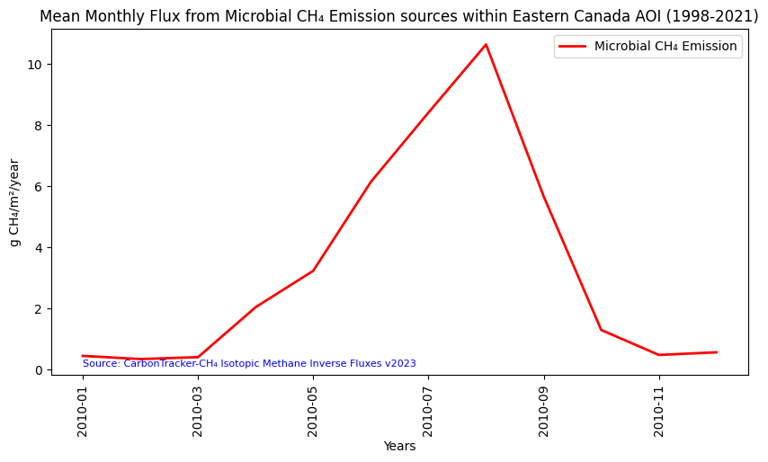

# Import the following libraries
import requests
import folium
import folium.plugins
from folium import Map, TileLayer
from pystac_client import Client
import branca
import pandas as pd
import matplotlib.pyplot as pltCarbonTracker-CH₄ Isotopic Methane Inverse Fluxes
Global, monthly 1 degree resolution methane emission estimates from microbial, fossil and pyrogenic sources derived using inverse modeling, version 2023.
Run this notebook
You can launch this notebook in the US GHG Center JupyterHub by clicking the link below.
Approach
- Identify available dates and temporal frequency of observations for the given collection using the GHGC API
/stacendpoint. The collection processed in this notebook is the CarbonTracker-CH₄ Isotopic Methane Inverse Fluxes Data product. - Pass the STAC item into the raster API
/collections/{collection_id}/items/{item_id}/tilejson.jsonendpoint. - Using
folium.plugins.DualMap, we will visualize two tiles (side-by-side), allowing us to compare time points. - After the visualization, we will perform zonal statistics for a given polygon.
About the Data
Surface methane (CH₄) emissions are derived from atmospheric measurements of methane and its ¹³C carbon isotope content. Different sources of methane contain different ratios of the two stable isotopologues, ¹²CH₄ and ¹³CH₄. This makes normally indistinguishable collocated sources of methane, say from agriculture and oil and gas exploration, distinguishable. The National Oceanic and Atmospheric Administration (NOAA) collects whole air samples from its global cooperative network of flasks (https://gml.noaa.gov/ccgg/about.html), which are then analyzed for methane and other trace gasses. A subset of those flasks are also analyzed for ¹³C of methane in collaboration with the Institute of Arctic and Alpine Research at the University of Colorado Boulder. Scientists at the National Aeronautics and Space Administration (NASA) and NOAA used those measurements of methane and ¹³C of methane in conjunction with a model of atmospheric circulation to estimate emissions of methane separated by three source types, microbial, fossil and pyrogenic.
For more information regarding this dataset, please visit the CarbonTracker-CH₄ Isotopic Methane Inverse Fluxes data overview page.
Install the Required Libraries
Required libraries are pre-installed on the GHG Center Hub. If you need to run this notebook elsewhere, please install them with this line in a code cell:
%pip install requests folium rasterstats pystac_client pandas matplotlib –quiet
Querying the STAC API
First, we are going to import the required libraries. Once imported, they allow better executing a query in the GHG Center Spatio Temporal Asset Catalog (STAC) Application Programming Interface (API) where the granules for this collection are stored.
# Provide the STAC and RASTER API endpoints
# The endpoint is referring to a location within the API that executes a request on a data collection nesting on the server.
# The STAC API is a catalog of all the existing data collections that are stored in the GHG Center.
STAC_API_URL = "https://earth.gov/ghgcenter/api/stac"
# The RASTER API is used to fetch collections for visualization
RASTER_API_URL = "https://earth.gov/ghgcenter/api/raster"
# The collection name is used to fetch the dataset from the STAC API. First, we define the collection name as a variable
# Name of the collection for CarbonTracker-CH₄ Isotopic Methane Inverse Fluxes
collection_name = "ct-ch4-monthgrid-v2023"# Fetch the collection from the STAC API using the appropriate endpoint
# The 'requests' library allows a HTTP request possible
collection = requests.get(f"{STAC_API_URL}/collections/{collection_name}").json()
# Print the properties of the collection to the console
collection{'id': 'ct-ch4-monthgrid-v2023',
'type': 'Collection',
'links': [{'rel': 'items',
'type': 'application/geo+json',
'href': 'https://dev.ghg.center/api/stac/collections/ct-ch4-monthgrid-v2023/items'},
{'rel': 'parent',
'type': 'application/json',
'href': 'https://dev.ghg.center/api/stac/'},
{'rel': 'root',
'type': 'application/json',
'href': 'https://dev.ghg.center/api/stac/'},
{'rel': 'self',
'type': 'application/json',
'href': 'https://dev.ghg.center/api/stac/collections/ct-ch4-monthgrid-v2023'}],
'title': 'CarbonTracker-CH₄ Isotopic Methane Inverse Fluxes v2023',
'extent': {'spatial': {'bbox': [[-180, -90, 180, 90]]},
'temporal': {'interval': [['1998-01-01 00:00:00+00',
'2021-12-31 00:00:00+00']]}},
'license': 'CC0-1.0',
'renders': {'total': {'assets': ['total'],
'rescale': [[0, 50]],
'colormap_name': 'purd'},
'fossil': {'assets': ['fossil'],
'rescale': [[0, 50]],
'colormap_name': 'purd'},
'dashboard': {'assets': ['total'],
'rescale': [[0, 50]],
'colormap_name': 'purd'},
'microbial': {'assets': ['microbial'],
'rescale': [[0, 30]],
'colormap_name': 'purd'},
'pyrogenic': {'assets': ['pyrogenic'],
'rescale': [[0, 8]],
'colormap_name': 'purd'}},
'summaries': {'datetime': ['1998-01-01T00:00:00Z', '2021-12-31T00:00:00Z']},
'description': 'Surface methane (CH₄) emissions are derived from atmospheric measurements of methane and its ¹³C carbon isotope content. Different sources of methane contain different ratios of the two stable isotopologues, ¹²CH₄ and ¹³CH₄. This makes normally indistinguishable collocated sources of methane, say from agriculture and oil and gas exploration, distinguishable. The National Oceanic and Atmospheric Administration (NOAA) collects whole air samples from its global cooperative network of flasks (https://gml.noaa.gov/ccgg/about.html), which are then analyzed for methane and other trace gases. A subset of those flasks are also analyzed for ¹³C of methane in collaboration with the Institute of Arctic and Alpine Research at the University of Colorado Boulder. Scientists at NOAA and the National Aeronautics and Space Administration (NASA) used those measurements of methane and ¹³C of methane in conjunction with a model of atmospheric circulation to estimate emissions of methane separated by three source types: microbial, fossil and pyrogenic. This dataset presents monthly methane emissions in units of grams of methane per square meter per year (g CH₄/m²/year) from microbial, fossil and pyrogenic sources, along with a layer of total methane emissions from all three sources combined, at 1° resolution from 1998 to 2021. The source data can be found at https://doi.org/10.25925/40jt-qd67',
'item_assets': {'total': {'type': 'image/tiff; application=geotiff; profile=cloud-optimized',
'roles': ['data', 'layer'],
'title': 'Total CH₄ Emission',
'description': 'Total methane emission from microbial, fossil, and pyrogenic sources.'},
'fossil': {'type': 'image/tiff; application=geotiff; profile=cloud-optimized',
'roles': ['data', 'layer'],
'title': 'Fossil CH₄ Emission',
'description': 'Emission of methane from all fossil sources, such as oil and gas activities and coal mining.'},
'microbial': {'type': 'image/tiff; application=geotiff; profile=cloud-optimized',
'roles': ['data', 'layer'],
'title': 'Microbial CH₄ Emission',
'description': 'Emission of methane from all microbial sources, such as wetlands, ruminants, agriculture, and termites.'},
'pyrogenic': {'type': 'image/tiff; application=geotiff; profile=cloud-optimized',
'roles': ['data', 'layer'],
'title': 'Pyrogenic CH₄ Emission',
'description': 'Emission of methane from all sources of biomass burning, such as wildfires and crop residue burning.'}},
'stac_version': '1.0.0',
'stac_extensions': ['https://stac-extensions.github.io/render/v1.0.0/schema.json',
'https://stac-extensions.github.io/item-assets/v1.0.0/schema.json'],
'dashboard:is_periodic': True,
'dashboard:time_density': 'month'}Examining the contents of our collection under the temporal variable, we see that the data is available from January 1999 to December 2016. By looking at the dashboard:time density, we observe that the data is periodic with monthly time density.
# Create a function that would search for a data collection in the US GHG Center STAC API
# First, we need to define the function
# The name of the function = "get_item_count"
# The argument that will be passed through the defined function = "collection_id"
def get_item_count(collection_id):
# Set a counter for the number of items existing in the collection
count = 0
# Define the path to retrieve the granules (items) of the collection of interest in the STAC API
items_url = f"{STAC_API_URL}/collections/{collection_id}/items"
# Run a while loop to make HTTP requests until there are no more URLs associated with the collection in the STAC API
while True:
# Retrieve information about the granules by sending a "get" request to the STAC API using the defined collection path
response = requests.get(items_url)
# If the items do not exist, print an error message and quit the loop
if not response.ok:
print("error getting items")
exit()
# Return the results of the HTTP response as JSON
stac = response.json()
# Increase the "count" by the number of items (granules) returned in the response
count += int(stac["context"].get("returned", 0))
# Retrieve information about the next URL associated with the collection in the STAC API (if applicable)
next = [link for link in stac["links"] if link["rel"] == "next"]
# Exit the loop if there are no other URLs
if not next:
break
# Ensure the information gathered by other STAC API links associated with the collection are added to the original path
# "href" is the identifier for each of the tiles stored in the STAC API
items_url = next[0]["href"]
# Return the information about the total number of granules found associated with the collection
return count# Apply the function created above "get_item_count" to the data collection
number_of_items = get_item_count(collection_name)
# Get the information about the number of granules found in the collection
items = requests.get(f"{STAC_API_URL}/collections/{collection_name}/items?limit={number_of_items}").json()["features"]
# Print the total number of items (granules) found
print(f"Found {len(items)} items")Found 288 items# Examine the first item in the collection
# Keep in mind that a list starts from 0, 1, 2... therefore items[0] is referring to the first item in the list/collection
items[0]Exploring Changes in CH₄ flux Levels Using the Raster API
In this notebook, we will explore the global changes of CH₄ flux over time in urban regions. We will visualize the outputs on a map using folium.
# Now we create a dictionary where the start datetime values for each granule is queried more explicitly by year and month (e.g., 2020-02)
items = {item["properties"]["start_datetime"][:10]: item for item in items}
# Next, we need to specify the asset name for this collection
# The asset name is referring to the raster band containing the pixel values for the parameter of interest
# For the case of the CarbonTracker-CH₄ Isotopic Methane Inverse Fluxes collection, the parameter of interest is “fossil”
asset_name = "fossil" #fossil fuelBelow, we are entering the minimum and maximum values to provide our upper and lower bounds in the rescale_values.
# Fetching the min and max values for a specific item
rescale_values = {"max":items[list(items.keys())[0]]["assets"][asset_name]["raster:bands"][0]["histogram"]["max"], "min":items[list(items.keys())[0]]["assets"][asset_name]["raster:bands"][0]["histogram"]["min"]}Now, we will pass the item id, collection name, asset name, and the rescaling factor to the Raster API endpoint. We will do this twice, once for 2016 and again for 1999, so that we can visualize each event independently.
# Choose a color map for displaying the first observation (event)
# Please refer to matplotlib library if you'd prefer choosing a different color ramp.
# For more information on Colormaps in Matplotlib, please visit https://matplotlib.org/stable/users/explain/colors/colormaps.html
color_map = "purd"
# Make a GET request to retrieve information for the 2016 tile
ch4_flux_1 = requests.get(
# Pass the collection name, the item number in the list, and its ID
f"{RASTER_API_URL}/collections/{items['2016-12-01']['collection']}/items/{items['2016-12-01']['id']}/tilejson.json?"
# Pass the asset name
f"&assets={asset_name}"
# Pass the color formula and colormap for custom visualization
f"&color_formula=gamma+r+1.05&colormap_name={color_map}"
# Pass the minimum and maximum values for rescaling
f"&rescale={rescale_values['min']},{rescale_values['max']}",
# Return the response in JSON format
).json()
# Print the properties of the retrieved granule to the console
ch4_flux_1# Make a GET request to retrieve information for the 1999 tile
ch4_flux_2 = requests.get(
# Pass the collection name, the item number in the list, and its ID
f"{RASTER_API_URL}/collections/{items['1999-12-01']['collection']}/items/{items['1999-12-01']['id']}/tilejson.json?"
# Pass the asset name
f"&assets={asset_name}"
# Pass the color formula and colormap for custom visualization
f"&color_formula=gamma+r+1.05&colormap_name={color_map}"
# Pass the minimum and maximum values for rescaling
f"&rescale={rescale_values['min']},{rescale_values['max']}",
# Return the response in JSON format
).json()
# Print the properties of the retrieved granule to the console
ch4_flux_2Visualizing CH₄ flux Emissions from Fossil Fuel
# For this study we are going to compare CH4 fluxes from fossil fuels in 2016 and 1999 along the coast of California
# To change the location, you can simply insert the latitude and longitude of the area of your interest in the "location=(LAT, LONG)" statement
# Set the initial zoom level and center of map for both tiles
# 'folium.plugins' allows mapping side-by-side
map_ = folium.plugins.DualMap(location=(34, -118), zoom_start=6)
# Define the first map layer (2016)
map_layer_2016 = TileLayer(
tiles=ch4_flux_1["tiles"][0], # Path to retrieve the tile
attr="GHG", # Set the attribution
opacity=0.8, # Adjust the transparency of the layer
)
# Add the first layer to the Dual Map
map_layer_2016.add_to(map_.m1)
# Define the second map layer (1999)
map_layer_1999 = TileLayer(
tiles=ch4_flux_2["tiles"][0], # Path to retrieve the tile
attr="GHG", # Set the attribution
opacity=0.8, # Adjust the transparency of the layer
)
# Add the second layer to the Dual Map
map_layer_1999.add_to(map_.m2)
# Visualize the Dual Map
map_Make this Notebook Trusted to load map: File -> Trust Notebook
Calculating Zonal Statistics
To perform zonal statistics, first we need to create a polygon. In this use case we are creating a polygon in Texas (USA).
# Create a polygon for the area of interest (aoi)
texas_aoi = {
"type": "Feature", # Create a feature object
"properties": {},
"geometry": { # Set the bounding coordinates for the polygon
"coordinates": [
[
[-95, 29], # South-east bounding coordinate
[-95, 33], # North-east bounding coordinate
[-104,33], # North-west bounding coordinate
[-104,29], # South-west bounding coordinate
[-95, 29] # South-east bounding coordinate (closing the polygon)
]
],
"type": "Polygon",
},
}# Create a new map to display the generated polygon
# We'll plug in the coordinates for a location
# Central to the study area and a reasonable zoom level
aoi_map = Map(
# Base map is set to OpenStreetMap
tiles="OpenStreetMap",
# Define the spatial properties for the map
location=[
30,-100
],
# Set the zoom value
zoom_start=6,
)
# Insert the polygon to the map
folium.GeoJson(texas_aoi, name="Texas, USA").add_to(aoi_map)
# Visualize the map
aoi_mapMake this Notebook Trusted to load map: File -> Trust Notebook
# Check total number of items available within the collection
items = requests.get(
f"{STAC_API_URL}/collections/{collection_name}/items?limit=600"
).json()["features"]
# Print the total number of items (granules) found
print(f"Found {len(items)} items")Found 288 items# Examine the first item in the collection
items[0]Now that we created the polygon for the area of interest, we need to develop a function that runs through the data collection and generates the statistics for a specific item (granule) within the boundaries of the AOI polygon.
# The bounding box should be passed to the geojson param as a geojson Feature or FeatureCollection
# Create a function that retrieves information regarding a specific granule using its asset name and raster identifier and generates the statistics for it
# The function takes an item (granule) and a JSON (polygon) as input parameters
def generate_stats(item, geojson):
# A POST request is made to submit the data associated with the item of interest (specific observation) within the boundaries of the polygon to compute its statistics
result = requests.post(
# Raster API Endpoint for computing statistics
f"{RASTER_API_URL}/cog/statistics",
# Pass the URL to the item, asset name, and raster identifier as parameters
params={"url": item["assets"][asset_name]["href"]},
# Send the GeoJSON object (polygon) along with the request
json=geojson,
# Return the response in JSON format
).json()
# Print the result
print(result)
# Return a dictionary containing the computed statistics along with the item's datetime information.
return {
**result["properties"],
"datetime": item["properties"]["start_datetime"][:10],
}# Generate a for loop that iterates over all the existing items in the collection
for item in items:
# The loop will then retrieve the information for the start datetime of each item in the list
print(item["properties"]["start_datetime"][:10])
# Exit the loop after printing the start datetime for the first item in the collection
break2021-12-01With the function above we can generate the statistics for the AOI.
%%time
# %%time = Wall time (execution time) for running the code below
# Generate statistics using the created function "generate_stats" within the bounding box defined by the polygon
stats = [generate_stats(item, texas_aoi) for item in items]{'type': 'Feature', 'geometry': {'type': 'Polygon', 'coordinates': [[[-95.0, 29.0], [-95.0, 33.0], [-104.0, 33.0], [-104.0, 29.0], [-95.0, 29.0]]]}, 'properties': {'statistics': {'b1': {'min': 0.042764596042364544, 'max': 45.46200998420616, 'mean': 9.320847132019729, 'count': 36.0, 'sum': 335.5504967527103, 'std': 11.191973503272377, 'median': 5.158028075849703, 'majority': 0.042764596042364544, 'minority': 0.042764596042364544, 'unique': 36.0, 'histogram': [[17.0, 7.0, 4.0, 0.0, 3.0, 3.0, 0.0, 0.0, 1.0, 1.0], [0.042764596042364544, 4.584689134858745, 9.126613673675124, 13.668538212491503, 18.210462751307883, 22.752387290124265, 27.294311828940643, 31.83623636775702, 36.378160906573406, 40.92008544538979, 45.46200998420616]], 'valid_percent': 100.0, 'masked_pixels': 0.0, 'valid_pixels': 36.0, 'percentile_2': 0.042764596042364544, 'percentile_98': 45.46200998420616}}}}
{'type': 'Feature', 'geometry': {'type': 'Polygon', 'coordinates': [[[-95.0, 29.0], [-95.0, 33.0], [-104.0, 33.0], [-104.0, 29.0], [-95.0, 29.0]]]}, 'properties': {'statistics': {'b1': {'min': 0.04496430558583199, 'max': 47.79265560178876, 'mean': 9.881737424028517, 'count': 36.0, 'sum': 355.7425472650266, 'std': 11.811205784197897, 'median': 5.539923377905558, 'majority': 0.04496430558583199, 'minority': 0.04496430558583199, 'unique': 36.0, 'histogram': [[17.0, 7.0, 4.0, 0.0, 3.0, 3.0, 0.0, 0.0, 1.0, 1.0], [0.04496430558583199, 4.819733435206126, 9.594502564826419, 14.369271694446713, 19.144040824067005, 23.918809953687298, 28.693579083307593, 33.46834821292788, 38.243117342548175, 43.01788647216847, 47.79265560178876]], 'valid_percent': 100.0, 'masked_pixels': 0.0, 'valid_pixels': 36.0, 'percentile_2': 0.04496430558583199, 'percentile_98': 47.79265560178876}}}}
{'type': 'Feature', 'geometry': {'type': 'Polygon', 'coordinates': [[[-95.0, 29.0], [-95.0, 33.0], [-104.0, 33.0], [-104.0, 29.0], [-95.0, 29.0]]]}, 'properties': {'statistics': {'b1': {'min': 0.047353506784757395, 'max': 50.74800679056948, 'mean': 10.482134112053338, 'count': 36.0, 'sum': 377.3568280339202, 'std': 12.54485108480068, 'median': 5.875716232313681, 'majority': 0.047353506784757395, 'minority': 0.047353506784757395, 'unique': 36.0, 'histogram': [[17.0, 8.0, 3.0, 0.0, 3.0, 3.0, 0.0, 0.0, 1.0, 1.0], [0.047353506784757395, 5.117418835163229, 10.1874841635417, 15.257549491920171, 20.327614820298642, 25.397680148677114, 30.467745477055583, 35.53781080543406, 40.60787613381253, 45.677941462191, 50.74800679056948]], 'valid_percent': 100.0, 'masked_pixels': 0.0, 'valid_pixels': 36.0, 'percentile_2': 0.047353506784757395, 'percentile_98': 50.74800679056948}}}}
{'type': 'Feature', 'geometry': {'type': 'Polygon', 'coordinates': [[[-95.0, 29.0], [-95.0, 33.0], [-104.0, 33.0], [-104.0, 29.0], [-95.0, 29.0]]]}, 'properties': {'statistics': {'b1': {'min': 0.04978520091128141, 'max': 53.757996760862326, 'mean': 11.038499105114045, 'count': 36.0, 'sum': 397.3859677841056, 'std': 13.261091061726859, 'median': 6.160317590083132, 'majority': 0.04978520091128141, 'minority': 0.04978520091128141, 'unique': 36.0, 'histogram': [[17.0, 8.0, 3.0, 0.0, 3.0, 3.0, 0.0, 0.0, 1.0, 1.0], [0.04978520091128141, 5.420606356906386, 10.79142751290149, 16.162248668896595, 21.533069824891697, 26.9038909808868, 32.27471213688191, 37.64553329287701, 43.016354448872114, 48.38717560486722, 53.757996760862326]], 'valid_percent': 100.0, 'masked_pixels': 0.0, 'valid_pixels': 36.0, 'percentile_2': 0.04978520091128141, 'percentile_98': 53.757996760862326}}}}
{'type': 'Feature', 'geometry': {'type': 'Polygon', 'coordinates': [[[-95.0, 29.0], [-95.0, 33.0], [-104.0, 33.0], [-104.0, 29.0], [-95.0, 29.0]]]}, 'properties': {'statistics': {'b1': {'min': 0.05131693335817921, 'max': 55.69460264477133, 'mean': 11.387664949927311, 'count': 36.0, 'sum': 409.9559381973832, 'std': 13.717379362207868, 'median': 6.33717365693283, 'majority': 0.05131693335817921, 'minority': 0.05131693335817921, 'unique': 36.0, 'histogram': [[17.0, 8.0, 3.0, 0.0, 3.0, 3.0, 0.0, 0.0, 1.0, 1.0], [0.05131693335817921, 5.615645504499494, 11.17997407564081, 16.744302646782124, 22.30863121792344, 27.87295978906476, 33.43728836020607, 39.001616931347385, 44.5659455024887, 50.13027407363002, 55.69460264477133]], 'valid_percent': 100.0, 'masked_pixels': 0.0, 'valid_pixels': 36.0, 'percentile_2': 0.05131693335817921, 'percentile_98': 55.69460264477133}}}}
{'type': 'Feature', 'geometry': {'type': 'Polygon', 'coordinates': [[[-95.0, 29.0], [-95.0, 33.0], [-104.0, 33.0], [-104.0, 29.0], [-95.0, 29.0]]]}, 'properties': {'statistics': {'b1': {'min': 0.05119143023330252, 'max': 55.42083049980431, 'mean': 11.324608069878117, 'count': 36.0, 'sum': 407.68589051561224, 'std': 13.641197870776788, 'median': 6.312030413064251, 'majority': 0.05119143023330252, 'minority': 0.05119143023330252, 'unique': 36.0, 'histogram': [[17.0, 8.0, 3.0, 0.0, 3.0, 3.0, 0.0, 0.0, 1.0, 1.0], [0.05119143023330252, 5.588155337190403, 11.125119244147504, 16.662083151104603, 22.199047058061705, 27.736010965018806, 33.272974871975904, 38.80993877893301, 44.34690268589011, 49.883866592847205, 55.42083049980431]], 'valid_percent': 100.0, 'masked_pixels': 0.0, 'valid_pixels': 36.0, 'percentile_2': 0.05119143023330252, 'percentile_98': 55.42083049980431}}}}
{'type': 'Feature', 'geometry': {'type': 'Polygon', 'coordinates': [[[-95.0, 29.0], [-95.0, 33.0], [-104.0, 33.0], [-104.0, 29.0], [-95.0, 29.0]]]}, 'properties': {'statistics': {'b1': {'min': 0.04720811102975525, 'max': 50.116228159825, 'mean': 10.46034258870325, 'count': 36.0, 'sum': 376.57233319331704, 'std': 12.446155775872962, 'median': 5.945999279754497, 'majority': 0.04720811102975525, 'minority': 0.04720811102975525, 'unique': 36.0, 'histogram': [[17.0, 7.0, 4.0, 0.0, 3.0, 3.0, 0.0, 0.0, 1.0, 1.0], [0.04720811102975525, 5.05411011590928, 10.061012120788805, 15.067914125668329, 20.074816130547852, 25.081718135427376, 30.0886201403069, 35.09552214518643, 40.10242415006595, 45.10932615494547, 50.116228159825]], 'valid_percent': 100.0, 'masked_pixels': 0.0, 'valid_pixels': 36.0, 'percentile_2': 0.04720811102975525, 'percentile_98': 50.116228159825}}}}
{'type': 'Feature', 'geometry': {'type': 'Polygon', 'coordinates': [[[-95.0, 29.0], [-95.0, 33.0], [-104.0, 33.0], [-104.0, 29.0], [-95.0, 29.0]]]}, 'properties': {'statistics': {'b1': {'min': 0.04605362661388558, 'max': 48.54147197947729, 'mean': 10.178708301141796, 'count': 36.0, 'sum': 366.43349884110467, 'std': 12.078763995866884, 'median': 5.813791499958749, 'majority': 0.04605362661388558, 'minority': 0.04605362661388558, 'unique': 36.0, 'histogram': [[17.0, 7.0, 4.0, 0.0, 3.0, 3.0, 0.0, 0.0, 1.0, 1.0], [0.04605362661388558, 4.895595461900227, 9.745137297186567, 14.594679132472907, 19.44422096775925, 24.293762803045592, 29.14330463833193, 33.99284647361827, 38.84238830890461, 43.69193014419095, 48.54147197947729]], 'valid_percent': 100.0, 'masked_pixels': 0.0, 'valid_pixels': 36.0, 'percentile_2': 0.04605362661388558, 'percentile_98': 48.54147197947729}}}}
{'type': 'Feature', 'geometry': {'type': 'Polygon', 'coordinates': [[[-95.0, 29.0], [-95.0, 33.0], [-104.0, 33.0], [-104.0, 29.0], [-95.0, 29.0]]]}, 'properties': {'statistics': {'b1': {'min': 0.04717902973556412, 'max': 49.890581407042745, 'mean': 10.422456639737241, 'count': 36.0, 'sum': 375.2084390305407, 'std': 12.395466186179647, 'median': 5.9310690384464, 'majority': 0.04717902973556412, 'minority': 0.04717902973556412, 'unique': 36.0, 'histogram': [[17.0, 7.0, 4.0, 0.0, 3.0, 3.0, 0.0, 0.0, 1.0, 1.0], [0.04717902973556412, 5.031519267466282, 10.015859505197001, 15.00019974292772, 19.984539980658436, 24.968880218389156, 29.953220456119872, 34.93756069385059, 39.92190093158131, 44.90624116931203, 49.890581407042745]], 'valid_percent': 100.0, 'masked_pixels': 0.0, 'valid_pixels': 36.0, 'percentile_2': 0.04717902973556412, 'percentile_98': 49.890581407042745}}}}
{'type': 'Feature', 'geometry': {'type': 'Polygon', 'coordinates': [[[-95.0, 29.0], [-95.0, 33.0], [-104.0, 33.0], [-104.0, 29.0], [-95.0, 29.0]]]}, 'properties': {'statistics': {'b1': {'min': 0.049336225772721655, 'max': 52.55661948565847, 'mean': 10.921273559404618, 'count': 36.0, 'sum': 393.1658481385663, 'std': 13.031293243597247, 'median': 6.18998237886662, 'majority': 0.049336225772721655, 'minority': 0.049336225772721655, 'unique': 36.0, 'histogram': [[17.0, 8.0, 3.0, 0.0, 3.0, 3.0, 0.0, 0.0, 1.0, 1.0], [0.049336225772721655, 5.300064551761297, 10.550792877749872, 15.801521203738448, 21.05224952972702, 26.302977855715596, 31.55370618170417, 36.80443450769275, 42.05516283368132, 47.3058911596699, 52.55661948565847]], 'valid_percent': 100.0, 'masked_pixels': 0.0, 'valid_pixels': 36.0, 'percentile_2': 0.049336225772721655, 'percentile_98': 52.55661948565847}}}}
{'type': 'Feature', 'geometry': {'type': 'Polygon', 'coordinates': [[[-95.0, 29.0], [-95.0, 33.0], [-104.0, 33.0], [-104.0, 29.0], [-95.0, 29.0]]]}, 'properties': {'statistics': {'b1': {'min': 0.05100890810876956, 'max': 54.72482036185761, 'mean': 11.31078641938864, 'count': 36.0, 'sum': 407.188311097991, 'std': 13.542115823051573, 'median': 6.3779899002731835, 'majority': 0.05100890810876956, 'minority': 0.05100890810876956, 'unique': 36.0, 'histogram': [[17.0, 8.0, 3.0, 0.0, 2.0, 4.0, 0.0, 0.0, 1.0, 1.0], [0.05100890810876956, 5.518390053483654, 10.985771198858538, 16.453152344233423, 21.920533489608307, 27.38791463498319, 32.85529578035808, 38.32267692573296, 43.79005807110784, 49.25743921648273, 54.72482036185761]], 'valid_percent': 100.0, 'masked_pixels': 0.0, 'valid_pixels': 36.0, 'percentile_2': 0.05100890810876956, 'percentile_98': 54.72482036185761}}}}
{'type': 'Feature', 'geometry': {'type': 'Polygon', 'coordinates': [[[-95.0, 29.0], [-95.0, 33.0], [-104.0, 33.0], [-104.0, 29.0], [-95.0, 29.0]]]}, 'properties': {'statistics': {'b1': {'min': 0.05001371452090138, 'max': 53.63428255320237, 'mean': 11.088960923305155, 'count': 36.0, 'sum': 399.20259323898557, 'std': 13.271507149275642, 'median': 6.257150272358311, 'majority': 0.05001371452090138, 'minority': 0.05001371452090138, 'unique': 36.0, 'histogram': [[17.0, 8.0, 3.0, 0.0, 3.0, 3.0, 0.0, 0.0, 1.0, 1.0], [0.05001371452090138, 5.408440598389047, 10.766867482257194, 16.12529436612534, 21.483721249993486, 26.842148133861635, 32.200575017729776, 37.559001901597924, 42.91742878546607, 48.27585566933422, 53.63428255320237]], 'valid_percent': 100.0, 'masked_pixels': 0.0, 'valid_pixels': 36.0, 'percentile_2': 0.05001371452090138, 'percentile_98': 53.63428255320237}}}}
{'type': 'Feature', 'geometry': {'type': 'Polygon', 'coordinates': [[[-95.0, 29.0], [-95.0, 33.0], [-104.0, 33.0], [-104.0, 29.0], [-95.0, 29.0]]]}, 'properties': {'statistics': {'b1': {'min': 0.04848648354891741, 'max': 52.124771859496505, 'mean': 10.787356986181983, 'count': 36.0, 'sum': 388.3448515025514, 'std': 12.902198716195088, 'median': 6.08433808693392, 'majority': 0.04848648354891741, 'minority': 0.04848648354891741, 'unique': 36.0, 'histogram': [[17.0, 8.0, 3.0, 0.0, 2.0, 4.0, 0.0, 0.0, 1.0, 1.0], [0.04848648354891741, 5.2561150211436765, 10.463743558738434, 15.671372096333194, 20.87900063392795, 26.08662917152271, 31.29425770911747, 36.50188624671223, 41.70951478430699, 46.91714332190175, 52.124771859496505]], 'valid_percent': 100.0, 'masked_pixels': 0.0, 'valid_pixels': 36.0, 'percentile_2': 0.04848648354891741, 'percentile_98': 52.124771859496505}}}}
{'type': 'Feature', 'geometry': {'type': 'Polygon', 'coordinates': [[[-95.0, 29.0], [-95.0, 33.0], [-104.0, 33.0], [-104.0, 29.0], [-95.0, 29.0]]]}, 'properties': {'statistics': {'b1': {'min': 0.04833244029838226, 'max': 52.328461619149, 'mean': 10.826782493163337, 'count': 36.0, 'sum': 389.76416975388014, 'std': 12.956345095488022, 'median': 6.091957059652263, 'majority': 0.04833244029838226, 'minority': 0.04833244029838226, 'unique': 36.0, 'histogram': [[17.0, 8.0, 3.0, 0.0, 2.0, 4.0, 0.0, 0.0, 1.0, 1.0], [0.04833244029838226, 5.276345358183444, 10.504358276068507, 15.732371193953568, 20.96038411183863, 26.18839702972369, 31.416409947608752, 36.644422865493816, 41.872435783378876, 47.100448701263936, 52.328461619149]], 'valid_percent': 100.0, 'masked_pixels': 0.0, 'valid_pixels': 36.0, 'percentile_2': 0.04833244029838226, 'percentile_98': 52.328461619149}}}}
{'type': 'Feature', 'geometry': {'type': 'Polygon', 'coordinates': [[[-95.0, 29.0], [-95.0, 33.0], [-104.0, 33.0], [-104.0, 29.0], [-95.0, 29.0]]]}, 'properties': {'statistics': {'b1': {'min': 0.05019009964811021, 'max': 54.84926574211507, 'mean': 11.370698756659635, 'count': 36.0, 'sum': 409.3451552397469, 'std': 13.606534777640832, 'median': 6.400528718409587, 'majority': 0.05019009964811021, 'minority': 0.05019009964811021, 'unique': 36.0, 'histogram': [[17.0, 8.0, 3.0, 0.0, 2.0, 4.0, 0.0, 0.0, 1.0, 1.0], [0.05019009964811021, 5.530097663894806, 11.010005228141504, 16.4899127923882, 21.969820356634894, 27.44972792088159, 32.929635485128294, 38.40954304937499, 43.88945061362168, 49.36935817786838, 54.84926574211507]], 'valid_percent': 100.0, 'masked_pixels': 0.0, 'valid_pixels': 36.0, 'percentile_2': 0.05019009964811021, 'percentile_98': 54.84926574211507}}}}
{'type': 'Feature', 'geometry': {'type': 'Polygon', 'coordinates': [[[-95.0, 29.0], [-95.0, 33.0], [-104.0, 33.0], [-104.0, 29.0], [-95.0, 29.0]]]}, 'properties': {'statistics': {'b1': {'min': 0.04929144806627498, 'max': 53.74995617476535, 'mean': 11.260597993135557, 'count': 36.0, 'sum': 405.38152775288006, 'std': 13.399340021019249, 'median': 6.398585159787986, 'majority': 0.04929144806627498, 'minority': 0.04929144806627498, 'unique': 36.0, 'histogram': [[17.0, 7.0, 4.0, 0.0, 2.0, 4.0, 0.0, 0.0, 1.0, 1.0], [0.04929144806627498, 5.419357920736182, 10.78942439340609, 16.159490866075995, 21.529557338745903, 26.89962381141581, 32.26969028408572, 37.63975675675563, 43.009823229425535, 48.37988970209544, 53.74995617476535]], 'valid_percent': 100.0, 'masked_pixels': 0.0, 'valid_pixels': 36.0, 'percentile_2': 0.04929144806627498, 'percentile_98': 53.74995617476535}}}}
{'type': 'Feature', 'geometry': {'type': 'Polygon', 'coordinates': [[[-95.0, 29.0], [-95.0, 33.0], [-104.0, 33.0], [-104.0, 29.0], [-95.0, 29.0]]]}, 'properties': {'statistics': {'b1': {'min': 0.048460377894339136, 'max': 52.84481803505236, 'mean': 11.113683362423192, 'count': 36.0, 'sum': 400.0926010472349, 'std': 13.195791510448574, 'median': 6.34108809684965, 'majority': 0.048460377894339136, 'minority': 0.048460377894339136, 'unique': 36.0, 'histogram': [[17.0, 7.0, 4.0, 0.0, 2.0, 4.0, 0.0, 0.0, 1.0, 1.0], [0.048460377894339136, 5.328096143610142, 10.607731909325944, 15.887367675041746, 21.16700344075755, 26.446639206473353, 31.726274972189156, 37.005910737904955, 42.28554650362076, 47.56518226933656, 52.84481803505236]], 'valid_percent': 100.0, 'masked_pixels': 0.0, 'valid_pixels': 36.0, 'percentile_2': 0.048460377894339136, 'percentile_98': 52.84481803505236}}}}
{'type': 'Feature', 'geometry': {'type': 'Polygon', 'coordinates': [[[-95.0, 29.0], [-95.0, 33.0], [-104.0, 33.0], [-104.0, 29.0], [-95.0, 29.0]]]}, 'properties': {'statistics': {'b1': {'min': 0.047065439687315705, 'max': 51.4676439994163, 'mean': 10.844639074929823, 'count': 36.0, 'sum': 390.4070066974736, 'std': 12.867860718778568, 'median': 6.178073135728979, 'majority': 0.047065439687315705, 'minority': 0.047065439687315705, 'unique': 36.0, 'histogram': [[17.0, 7.0, 4.0, 0.0, 1.0, 5.0, 0.0, 0.0, 1.0, 1.0], [0.047065439687315705, 5.189123295660215, 10.331181151633114, 15.473239007606013, 20.615296863578912, 25.757354719551813, 30.89941257552471, 36.04147043149761, 41.18352828747051, 46.32558614344341, 51.4676439994163]], 'valid_percent': 100.0, 'masked_pixels': 0.0, 'valid_pixels': 36.0, 'percentile_2': 0.047065439687315705, 'percentile_98': 51.4676439994163}}}}
{'type': 'Feature', 'geometry': {'type': 'Polygon', 'coordinates': [[[-95.0, 29.0], [-95.0, 33.0], [-104.0, 33.0], [-104.0, 29.0], [-95.0, 29.0]]]}, 'properties': {'statistics': {'b1': {'min': 0.045349790185739904, 'max': 49.41812673002353, 'mean': 10.451740253963138, 'count': 36.0, 'sum': 376.26264914267296, 'std': 12.373974616866747, 'median': 5.972331466649339, 'majority': 0.045349790185739904, 'minority': 0.045349790185739904, 'unique': 36.0, 'histogram': [[17.0, 6.0, 5.0, 0.0, 1.0, 5.0, 0.0, 0.0, 1.0, 1.0], [0.045349790185739904, 4.982627484169519, 9.919905178153298, 14.857182872137077, 19.794460566120854, 24.731738260104635, 29.66901595408841, 34.60629364807219, 39.54357134205597, 44.48084903603975, 49.41812673002353]], 'valid_percent': 100.0, 'masked_pixels': 0.0, 'valid_pixels': 36.0, 'percentile_2': 0.045349790185739904, 'percentile_98': 49.41812673002353}}}}
{'type': 'Feature', 'geometry': {'type': 'Polygon', 'coordinates': [[[-95.0, 29.0], [-95.0, 33.0], [-104.0, 33.0], [-104.0, 29.0], [-95.0, 29.0]]]}, 'properties': {'statistics': {'b1': {'min': 0.0446038404222282, 'max': 48.49101347220628, 'mean': 10.237963268849184, 'count': 36.0, 'sum': 368.5666776785706, 'std': 12.127215702813155, 'median': 5.845833858466837, 'majority': 0.0446038404222282, 'minority': 0.0446038404222282, 'unique': 36.0, 'histogram': [[17.0, 6.0, 5.0, 0.0, 2.0, 4.0, 0.0, 0.0, 1.0, 1.0], [0.0446038404222282, 4.889244803600634, 9.73388576677904, 14.578526729957444, 19.423167693135852, 24.26780865631426, 29.112449619492658, 33.957090582671064, 38.80173154584947, 43.64637250902788, 48.49101347220628]], 'valid_percent': 100.0, 'masked_pixels': 0.0, 'valid_pixels': 36.0, 'percentile_2': 0.0446038404222282, 'percentile_98': 48.49101347220628}}}}
{'type': 'Feature', 'geometry': {'type': 'Polygon', 'coordinates': [[[-95.0, 29.0], [-95.0, 33.0], [-104.0, 33.0], [-104.0, 29.0], [-95.0, 29.0]]]}, 'properties': {'statistics': {'b1': {'min': 0.04622089277132888, 'max': 50.59258495048524, 'mean': 10.55611373286202, 'count': 36.0, 'sum': 380.0200943830327, 'std': 12.584806950774096, 'median': 5.970917802725909, 'majority': 0.04622089277132888, 'minority': 0.04622089277132888, 'unique': 36.0, 'histogram': [[17.0, 7.0, 4.0, 0.0, 2.0, 4.0, 0.0, 0.0, 1.0, 1.0], [0.04622089277132888, 5.10085729854272, 10.155493704314111, 15.210130110085503, 20.264766515856895, 25.319402921628285, 30.37403932739968, 35.42867573317107, 40.48331213894246, 45.53794854471385, 50.59258495048524]], 'valid_percent': 100.0, 'masked_pixels': 0.0, 'valid_pixels': 36.0, 'percentile_2': 0.04622089277132888, 'percentile_98': 50.59258495048524}}}}
{'type': 'Feature', 'geometry': {'type': 'Polygon', 'coordinates': [[[-95.0, 29.0], [-95.0, 33.0], [-104.0, 33.0], [-104.0, 29.0], [-95.0, 29.0]]]}, 'properties': {'statistics': {'b1': {'min': 0.0485748087715911, 'max': 53.652581573716894, 'mean': 11.049133956546903, 'count': 36.0, 'sum': 397.7688224356885, 'std': 13.273339730726684, 'median': 6.180665537582044, 'majority': 0.0485748087715911, 'minority': 0.0485748087715911, 'unique': 36.0, 'histogram': [[17.0, 8.0, 3.0, 0.0, 2.0, 4.0, 0.0, 0.0, 1.0, 1.0], [0.0485748087715911, 5.408975485266121, 10.76937616176065, 16.129776838255182, 21.49017751474971, 26.85057819124424, 32.210978867738774, 37.5713795442333, 42.93178022072783, 48.29218089722236, 53.652581573716894]], 'valid_percent': 100.0, 'masked_pixels': 0.0, 'valid_pixels': 36.0, 'percentile_2': 0.0485748087715911, 'percentile_98': 53.652581573716894}}}}
{'type': 'Feature', 'geometry': {'type': 'Polygon', 'coordinates': [[[-95.0, 29.0], [-95.0, 33.0], [-104.0, 33.0], [-104.0, 29.0], [-95.0, 29.0]]]}, 'properties': {'statistics': {'b1': {'min': 0.05190520844910277, 'max': 58.02739941719041, 'mean': 11.75008641559864, 'count': 36.0, 'sum': 423.00311096155104, 'std': 14.26581854487743, 'median': 6.468316394532032, 'majority': 0.05190520844910277, 'minority': 0.05190520844910277, 'unique': 36.0, 'histogram': [[17.0, 8.0, 3.0, 1.0, 1.0, 4.0, 0.0, 0.0, 1.0, 1.0], [0.05190520844910277, 5.849454629323234, 11.647004050197365, 17.444553471071497, 23.242102891945628, 29.039652312819758, 34.83720173369389, 40.634751154568015, 46.43230057544215, 52.22984999631628, 58.02739941719041]], 'valid_percent': 100.0, 'masked_pixels': 0.0, 'valid_pixels': 36.0, 'percentile_2': 0.05190520844910277, 'percentile_98': 58.02739941719041}}}}
{'type': 'Feature', 'geometry': {'type': 'Polygon', 'coordinates': [[[-95.0, 29.0], [-95.0, 33.0], [-104.0, 33.0], [-104.0, 29.0], [-95.0, 29.0]]]}, 'properties': {'statistics': {'b1': {'min': 0.053418630615544485, 'max': 60.043571182138145, 'mean': 12.054421295128535, 'count': 36.0, 'sum': 433.95916662462724, 'std': 14.713539335230019, 'median': 6.585802545237199, 'majority': 0.053418630615544485, 'minority': 0.053418630615544485, 'unique': 36.0, 'histogram': [[17.0, 8.0, 3.0, 1.0, 1.0, 4.0, 0.0, 0.0, 1.0, 1.0], [0.053418630615544485, 6.052433885767805, 12.051449140920065, 18.05046439607233, 24.049479651224587, 30.048494906376845, 36.04751016152911, 42.04652541668137, 48.04554067183363, 54.044555926985886, 60.043571182138145]], 'valid_percent': 100.0, 'masked_pixels': 0.0, 'valid_pixels': 36.0, 'percentile_2': 0.053418630615544485, 'percentile_98': 60.043571182138145}}}}
{'type': 'Feature', 'geometry': {'type': 'Polygon', 'coordinates': [[[-95.0, 29.0], [-95.0, 33.0], [-104.0, 33.0], [-104.0, 29.0], [-95.0, 29.0]]]}, 'properties': {'statistics': {'b1': {'min': 0.05506466442149639, 'max': 62.22762364351754, 'mean': 12.412073246097176, 'count': 36.0, 'sum': 446.83463685949835, 'std': 15.215347210256429, 'median': 6.738947642119901, 'majority': 0.05506466442149639, 'minority': 0.05506466442149639, 'unique': 36.0, 'histogram': [[17.0, 8.0, 3.0, 1.0, 2.0, 3.0, 0.0, 0.0, 1.0, 1.0], [0.05506466442149639, 6.2723205623311005, 12.489576460240706, 18.70683235815031, 24.924088256059914, 31.141344153969516, 37.35860005187912, 43.575855949788725, 49.79311184769833, 56.01036774560793, 62.22762364351754]], 'valid_percent': 100.0, 'masked_pixels': 0.0, 'valid_pixels': 36.0, 'percentile_2': 0.05506466442149639, 'percentile_98': 62.22762364351754}}}}
{'type': 'Feature', 'geometry': {'type': 'Polygon', 'coordinates': [[[-95.0, 29.0], [-95.0, 33.0], [-104.0, 33.0], [-104.0, 29.0], [-95.0, 29.0]]]}, 'properties': {'statistics': {'b1': {'min': 0.054606104646387696, 'max': 61.69475606717638, 'mean': 12.352114000087075, 'count': 36.0, 'sum': 444.6761040031347, 'std': 15.111531932241682, 'median': 6.719327353196486, 'majority': 0.054606104646387696, 'minority': 0.054606104646387696, 'unique': 36.0, 'histogram': [[17.0, 8.0, 3.0, 1.0, 2.0, 3.0, 0.0, 0.0, 1.0, 1.0], [0.054606104646387696, 6.218621100899386, 12.382636097152385, 18.546651093405387, 24.710666089658385, 30.874681085911384, 37.038696082164385, 43.20271107841738, 49.36672607467038, 55.53074107092338, 61.69475606717638]], 'valid_percent': 100.0, 'masked_pixels': 0.0, 'valid_pixels': 36.0, 'percentile_2': 0.054606104646387696, 'percentile_98': 61.69475606717638}}}}
{'type': 'Feature', 'geometry': {'type': 'Polygon', 'coordinates': [[[-95.0, 29.0], [-95.0, 33.0], [-104.0, 33.0], [-104.0, 29.0], [-95.0, 29.0]]]}, 'properties': {'statistics': {'b1': {'min': 0.05483179449373324, 'max': 62.02275126933362, 'mean': 12.449298499352036, 'count': 36.0, 'sum': 448.1747459766733, 'std': 15.216094688040098, 'median': 6.774646512579597, 'majority': 0.05483179449373324, 'minority': 0.05483179449373324, 'unique': 36.0, 'histogram': [[17.0, 8.0, 3.0, 1.0, 1.0, 4.0, 0.0, 0.0, 1.0, 1.0], [0.05483179449373324, 6.251623741977721, 12.44841568946171, 18.6452076369457, 24.841999584429686, 31.038791531913674, 37.23558347939767, 43.432375426881656, 49.62916737436564, 55.82595932184963, 62.02275126933362]], 'valid_percent': 100.0, 'masked_pixels': 0.0, 'valid_pixels': 36.0, 'percentile_2': 0.05483179449373324, 'percentile_98': 62.02275126933362}}}}
{'type': 'Feature', 'geometry': {'type': 'Polygon', 'coordinates': [[[-95.0, 29.0], [-95.0, 33.0], [-104.0, 33.0], [-104.0, 29.0], [-95.0, 29.0]]]}, 'properties': {'statistics': {'b1': {'min': 0.05562910107026008, 'max': 63.09947354601187, 'mean': 12.678694333699191, 'count': 36.0, 'sum': 456.43299601317085, 'std': 15.498445557661087, 'median': 6.892463371561688, 'majority': 0.05562910107026008, 'minority': 0.05562910107026008, 'unique': 36.0, 'histogram': [[17.0, 8.0, 3.0, 1.0, 1.0, 4.0, 0.0, 0.0, 1.0, 1.0], [0.05562910107026008, 6.3600135455644216, 12.664397990058582, 18.968782434552743, 25.273166879046904, 31.577551323541066, 37.88193576803523, 44.18632021252939, 50.49070465702355, 56.79508910151771, 63.09947354601187]], 'valid_percent': 100.0, 'masked_pixels': 0.0, 'valid_pixels': 36.0, 'percentile_2': 0.05562910107026008, 'percentile_98': 63.09947354601187}}}}
{'type': 'Feature', 'geometry': {'type': 'Polygon', 'coordinates': [[[-95.0, 29.0], [-95.0, 33.0], [-104.0, 33.0], [-104.0, 29.0], [-95.0, 29.0]]]}, 'properties': {'statistics': {'b1': {'min': 0.0560484790428007, 'max': 63.659104989841026, 'mean': 12.795350006995129, 'count': 36.0, 'sum': 460.63260025182467, 'std': 15.645730222168327, 'median': 6.947721928626061, 'majority': 0.0560484790428007, 'minority': 0.0560484790428007, 'unique': 36.0, 'histogram': [[17.0, 8.0, 3.0, 1.0, 1.0, 4.0, 0.0, 0.0, 1.0, 1.0], [0.0560484790428007, 6.416354130122623, 12.776659781202445, 19.136965432282267, 25.49727108336209, 31.857576734441913, 38.21788238552173, 44.57818803660156, 50.93849368768138, 57.2987993387612, 63.659104989841026]], 'valid_percent': 100.0, 'masked_pixels': 0.0, 'valid_pixels': 36.0, 'percentile_2': 0.0560484790428007, 'percentile_98': 63.659104989841026}}}}
{'type': 'Feature', 'geometry': {'type': 'Polygon', 'coordinates': [[[-95.0, 29.0], [-95.0, 33.0], [-104.0, 33.0], [-104.0, 29.0], [-95.0, 29.0]]]}, 'properties': {'statistics': {'b1': {'min': 0.054821047430043464, 'max': 62.07121431430131, 'mean': 12.520387843079732, 'count': 36.0, 'sum': 450.73396235087034, 'std': 15.276574074382752, 'median': 6.8134784266737025, 'majority': 0.054821047430043464, 'minority': 0.054821047430043464, 'unique': 36.0, 'histogram': [[17.0, 8.0, 3.0, 1.0, 1.0, 4.0, 0.0, 0.0, 1.0, 1.0], [0.054821047430043464, 6.25646037411717, 12.458099700804297, 18.659739027491423, 24.861378354178548, 31.063017680865673, 37.264657007552806, 43.46629633423993, 49.66793566092706, 55.869574987614186, 62.07121431430131]], 'valid_percent': 100.0, 'masked_pixels': 0.0, 'valid_pixels': 36.0, 'percentile_2': 0.054821047430043464, 'percentile_98': 62.07121431430131}}}}
{'type': 'Feature', 'geometry': {'type': 'Polygon', 'coordinates': [[[-95.0, 29.0], [-95.0, 33.0], [-104.0, 33.0], [-104.0, 29.0], [-95.0, 29.0]]]}, 'properties': {'statistics': {'b1': {'min': 0.05223652636606923, 'max': 58.75846512711547, 'mean': 11.920609444192626, 'count': 36.0, 'sum': 429.14193999093453, 'std': 14.488811213547082, 'median': 6.515524615815451, 'majority': 0.05223652636606923, 'minority': 0.05223652636606923, 'unique': 36.0, 'histogram': [[17.0, 8.0, 3.0, 1.0, 1.0, 4.0, 0.0, 0.0, 1.0, 1.0], [0.05223652636606923, 5.92285938644101, 11.79348224651595, 17.664105106590892, 23.53472796666583, 29.40535082674077, 35.27597368681571, 41.14659654689065, 47.01721940696559, 52.887842267040526, 58.75846512711547]], 'valid_percent': 100.0, 'masked_pixels': 0.0, 'valid_pixels': 36.0, 'percentile_2': 0.05223652636606923, 'percentile_98': 58.75846512711547}}}}
{'type': 'Feature', 'geometry': {'type': 'Polygon', 'coordinates': [[[-95.0, 29.0], [-95.0, 33.0], [-104.0, 33.0], [-104.0, 29.0], [-95.0, 29.0]]]}, 'properties': {'statistics': {'b1': {'min': 0.04937215306817977, 'max': 55.16081176865996, 'mean': 11.232798753236416, 'count': 36.0, 'sum': 404.380755116511, 'std': 13.615324987338814, 'median': 6.151703741737325, 'majority': 0.04937215306817977, 'minority': 0.04937215306817977, 'unique': 36.0, 'histogram': [[17.0, 8.0, 3.0, 1.0, 1.0, 4.0, 0.0, 0.0, 1.0, 1.0], [0.04937215306817977, 5.560516114627358, 11.071660076186538, 16.582804037745717, 22.093947999304895, 27.605091960864073, 33.11623592242325, 38.62737988398243, 44.138523845541606, 49.64966780710078, 55.16081176865996]], 'valid_percent': 100.0, 'masked_pixels': 0.0, 'valid_pixels': 36.0, 'percentile_2': 0.04937215306817977, 'percentile_98': 55.16081176865996}}}}
{'type': 'Feature', 'geometry': {'type': 'Polygon', 'coordinates': [[[-95.0, 29.0], [-95.0, 33.0], [-104.0, 33.0], [-104.0, 29.0], [-95.0, 29.0]]]}, 'properties': {'statistics': {'b1': {'min': 0.048866526493450906, 'max': 54.5495126411425, 'mean': 11.104613879576318, 'count': 36.0, 'sum': 399.76609966474746, 'std': 13.463085632035659, 'median': 6.075236148866861, 'majority': 0.048866526493450906, 'minority': 0.048866526493450906, 'unique': 36.0, 'histogram': [[17.0, 8.0, 3.0, 1.0, 1.0, 4.0, 0.0, 0.0, 1.0, 1.0], [0.048866526493450906, 5.498931137958356, 10.94899574942326, 16.399060360888168, 21.84912497235307, 27.299189583817974, 32.74925419528288, 38.19931880674778, 43.649383418212686, 49.09944802967759, 54.5495126411425]], 'valid_percent': 100.0, 'masked_pixels': 0.0, 'valid_pixels': 36.0, 'percentile_2': 0.048866526493450906, 'percentile_98': 54.5495126411425}}}}
{'type': 'Feature', 'geometry': {'type': 'Polygon', 'coordinates': [[[-95.0, 29.0], [-95.0, 33.0], [-104.0, 33.0], [-104.0, 29.0], [-95.0, 29.0]]]}, 'properties': {'statistics': {'b1': {'min': 0.04959302713964847, 'max': 55.475121311066154, 'mean': 11.274614526381981, 'count': 36.0, 'sum': 405.8861229497513, 'std': 13.686376526314326, 'median': 6.158929521042573, 'majority': 0.04959302713964847, 'minority': 0.04959302713964847, 'unique': 36.0, 'histogram': [[17.0, 8.0, 3.0, 1.0, 1.0, 4.0, 0.0, 0.0, 1.0, 1.0], [0.04959302713964847, 5.592145855532299, 11.134698683924949, 16.677251512317596, 22.219804340710247, 27.7623571691029, 33.30490999749555, 38.8474628258882, 44.39001565428085, 49.9325684826735, 55.475121311066154]], 'valid_percent': 100.0, 'masked_pixels': 0.0, 'valid_pixels': 36.0, 'percentile_2': 0.04959302713964847, 'percentile_98': 55.475121311066154}}}}
{'type': 'Feature', 'geometry': {'type': 'Polygon', 'coordinates': [[[-95.0, 29.0], [-95.0, 33.0], [-104.0, 33.0], [-104.0, 29.0], [-95.0, 29.0]]]}, 'properties': {'statistics': {'b1': {'min': 0.05100275964860748, 'max': 57.286571415764925, 'mean': 11.587689934572284, 'count': 36.0, 'sum': 417.1568376446022, 'std': 14.110557892746348, 'median': 6.305552476963795, 'majority': 0.05100275964860748, 'minority': 0.05100275964860748, 'unique': 36.0, 'histogram': [[17.0, 8.0, 3.0, 1.0, 1.0, 4.0, 0.0, 0.0, 1.0, 1.0], [0.05100275964860748, 5.77455962526024, 11.498116490871872, 17.221673356483503, 22.945230222095137, 28.66878708770677, 34.392343953318395, 40.11590081893003, 45.839457684541664, 51.5630145501533, 57.286571415764925]], 'valid_percent': 100.0, 'masked_pixels': 0.0, 'valid_pixels': 36.0, 'percentile_2': 0.05100275964860748, 'percentile_98': 57.286571415764925}}}}
{'type': 'Feature', 'geometry': {'type': 'Polygon', 'coordinates': [[[-95.0, 29.0], [-95.0, 33.0], [-104.0, 33.0], [-104.0, 29.0], [-95.0, 29.0]]]}, 'properties': {'statistics': {'b1': {'min': 0.05206151163024747, 'max': 58.61086899851958, 'mean': 11.818394338886096, 'count': 36.0, 'sum': 425.46219619989944, 'std': 14.419751466062772, 'median': 6.417361662995689, 'majority': 0.05206151163024747, 'minority': 0.05206151163024747, 'unique': 36.0, 'histogram': [[17.0, 8.0, 3.0, 1.0, 1.0, 4.0, 0.0, 0.0, 1.0, 1.0], [0.05206151163024747, 5.907942260319181, 11.763823009008114, 17.619703757697046, 23.475584506385978, 29.33146525507491, 35.18734600376385, 41.04322675245278, 46.899107501141714, 52.754988249830646, 58.61086899851958]], 'valid_percent': 100.0, 'masked_pixels': 0.0, 'valid_pixels': 36.0, 'percentile_2': 0.05206151163024747, 'percentile_98': 58.61086899851958}}}}
{'type': 'Feature', 'geometry': {'type': 'Polygon', 'coordinates': [[[-95.0, 29.0], [-95.0, 33.0], [-104.0, 33.0], [-104.0, 29.0], [-95.0, 29.0]]]}, 'properties': {'statistics': {'b1': {'min': 0.0512475160815169, 'max': 57.50237127133674, 'mean': 11.599797441981371, 'count': 36.0, 'sum': 417.59270791132934, 'std': 14.140369270613768, 'median': 6.307922105780834, 'majority': 0.0512475160815169, 'minority': 0.0512475160815169, 'unique': 36.0, 'histogram': [[17.0, 8.0, 3.0, 1.0, 1.0, 4.0, 0.0, 0.0, 1.0, 1.0], [0.0512475160815169, 5.79635989160704, 11.541472267132562, 17.286584642658084, 23.031697018183607, 28.77680939370913, 34.52192176923465, 40.267034144760174, 46.0121465202857, 51.75725889581122, 57.50237127133674]], 'valid_percent': 100.0, 'masked_pixels': 0.0, 'valid_pixels': 36.0, 'percentile_2': 0.0512475160815169, 'percentile_98': 57.50237127133674}}}}
{'type': 'Feature', 'geometry': {'type': 'Polygon', 'coordinates': [[[-95.0, 29.0], [-95.0, 33.0], [-104.0, 33.0], [-104.0, 29.0], [-95.0, 29.0]]]}, 'properties': {'statistics': {'b1': {'min': 0.052406040093353645, 'max': 58.962203644759434, 'mean': 11.916602930389113, 'count': 36.0, 'sum': 428.9977054940081, 'std': 14.5155875802573, 'median': 6.488952618584353, 'majority': 0.052406040093353645, 'minority': 0.052406040093353645, 'unique': 36.0, 'histogram': [[17.0, 8.0, 3.0, 1.0, 1.0, 4.0, 0.0, 0.0, 1.0, 1.0], [0.052406040093353645, 5.9433858005599625, 11.834365561026571, 17.72534532149318, 23.616325081959786, 29.507304842426393, 35.39828460289301, 41.289264363359614, 47.18024412382622, 53.07122388429283, 58.962203644759434]], 'valid_percent': 100.0, 'masked_pixels': 0.0, 'valid_pixels': 36.0, 'percentile_2': 0.052406040093353645, 'percentile_98': 58.962203644759434}}}}
{'type': 'Feature', 'geometry': {'type': 'Polygon', 'coordinates': [[[-95.0, 29.0], [-95.0, 33.0], [-104.0, 33.0], [-104.0, 29.0], [-95.0, 29.0]]]}, 'properties': {'statistics': {'b1': {'min': 0.053338021384898, 'max': 60.06844056671317, 'mean': 12.186252815482376, 'count': 36.0, 'sum': 438.70510135736555, 'std': 14.814514272219466, 'median': 6.6600443620953795, 'majority': 0.053338021384898, 'minority': 0.053338021384898, 'unique': 36.0, 'histogram': [[17.0, 8.0, 3.0, 1.0, 1.0, 4.0, 0.0, 0.0, 1.0, 1.0], [0.053338021384898, 6.054848275917726, 12.056358530450552, 18.05786878498338, 24.05937903951621, 30.060889294049037, 36.06239954858186, 42.06390980311469, 48.065420057647515, 54.06693031218034, 60.06844056671317]], 'valid_percent': 100.0, 'masked_pixels': 0.0, 'valid_pixels': 36.0, 'percentile_2': 0.053338021384898, 'percentile_98': 60.06844056671317}}}}
{'type': 'Feature', 'geometry': {'type': 'Polygon', 'coordinates': [[[-95.0, 29.0], [-95.0, 33.0], [-104.0, 33.0], [-104.0, 29.0], [-95.0, 29.0]]]}, 'properties': {'statistics': {'b1': {'min': 0.054479293821734456, 'max': 61.46112986442232, 'mean': 12.503066816608749, 'count': 36.0, 'sum': 450.110405397915, 'std': 15.17910955820284, 'median': 6.851669108140776, 'majority': 0.054479293821734456, 'minority': 0.054479293821734456, 'unique': 36.0, 'histogram': [[17.0, 8.0, 3.0, 1.0, 1.0, 4.0, 0.0, 0.0, 1.0, 1.0], [0.054479293821734456, 6.195144350881793, 12.33580940794185, 18.47647446500191, 24.61713952206197, 30.757804579122027, 36.898469636182085, 43.03913469324214, 49.1797997503022, 55.320464807362264, 61.46112986442232]], 'valid_percent': 100.0, 'masked_pixels': 0.0, 'valid_pixels': 36.0, 'percentile_2': 0.054479293821734456, 'percentile_98': 61.46112986442232}}}}
{'type': 'Feature', 'geometry': {'type': 'Polygon', 'coordinates': [[[-95.0, 29.0], [-95.0, 33.0], [-104.0, 33.0], [-104.0, 29.0], [-95.0, 29.0]]]}, 'properties': {'statistics': {'b1': {'min': 0.055410361098940715, 'max': 62.666244667928666, 'mean': 12.739205082617387, 'count': 36.0, 'sum': 458.61138297422593, 'std': 15.478514509421453, 'median': 6.969515980668558, 'majority': 0.055410361098940715, 'minority': 0.055410361098940715, 'unique': 36.0, 'histogram': [[17.0, 8.0, 3.0, 1.0, 1.0, 4.0, 0.0, 0.0, 1.0, 1.0], [0.055410361098940715, 6.316493791781913, 12.577577222464885, 18.838660653147855, 25.099744083830828, 31.3608275145138, 37.621910945196774, 43.88299437587975, 50.14407780656272, 56.40516123724569, 62.666244667928666]], 'valid_percent': 100.0, 'masked_pixels': 0.0, 'valid_pixels': 36.0, 'percentile_2': 0.055410361098940715, 'percentile_98': 62.666244667928666}}}}
{'type': 'Feature', 'geometry': {'type': 'Polygon', 'coordinates': [[[-95.0, 29.0], [-95.0, 33.0], [-104.0, 33.0], [-104.0, 29.0], [-95.0, 29.0]]]}, 'properties': {'statistics': {'b1': {'min': 0.05370910533302879, 'max': 60.48967690324267, 'mean': 12.324617755371415, 'count': 36.0, 'sum': 443.68623919337097, 'std': 14.94927527077961, 'median': 6.7511594690605365, 'majority': 0.05370910533302879, 'minority': 0.05370910533302879, 'unique': 36.0, 'histogram': [[17.0, 8.0, 3.0, 1.0, 1.0, 4.0, 0.0, 0.0, 1.0, 1.0], [0.05370910533302879, 6.097305885123993, 12.140902664914957, 18.18449944470592, 24.228096224496884, 30.271693004287847, 36.315289784078814, 42.358886563869774, 48.40248334366074, 54.44608012345171, 60.48967690324267]], 'valid_percent': 100.0, 'masked_pixels': 0.0, 'valid_pixels': 36.0, 'percentile_2': 0.05370910533302879, 'percentile_98': 60.48967690324267}}}}
{'type': 'Feature', 'geometry': {'type': 'Polygon', 'coordinates': [[[-95.0, 29.0], [-95.0, 33.0], [-104.0, 33.0], [-104.0, 29.0], [-95.0, 29.0]]]}, 'properties': {'statistics': {'b1': {'min': 0.05124322947955333, 'max': 57.34922425858325, 'mean': 11.72771345999114, 'count': 36.0, 'sum': 422.197684559681, 'std': 14.188055074683154, 'median': 6.4378378411120165, 'majority': 0.05124322947955333, 'minority': 0.05124322947955333, 'unique': 36.0, 'histogram': [[17.0, 8.0, 3.0, 1.0, 1.0, 4.0, 0.0, 0.0, 1.0, 1.0], [0.05124322947955333, 5.781041332389923, 11.510839435300293, 17.240637538210663, 22.970435641121032, 28.7002337440314, 34.43003184694177, 40.15982994985214, 45.88962805276251, 51.61942615567288, 57.34922425858325]], 'valid_percent': 100.0, 'masked_pixels': 0.0, 'valid_pixels': 36.0, 'percentile_2': 0.05124322947955333, 'percentile_98': 57.34922425858325}}}}
{'type': 'Feature', 'geometry': {'type': 'Polygon', 'coordinates': [[[-95.0, 29.0], [-95.0, 33.0], [-104.0, 33.0], [-104.0, 29.0], [-95.0, 29.0]]]}, 'properties': {'statistics': {'b1': {'min': 0.04827362650598988, 'max': 53.49679104342438, 'mean': 10.992772669615901, 'count': 36.0, 'sum': 395.73981610617244, 'std': 13.246402014675049, 'median': 6.064474008859022, 'majority': 0.04827362650598988, 'minority': 0.04827362650598988, 'unique': 36.0, 'histogram': [[17.0, 8.0, 3.0, 1.0, 1.0, 4.0, 0.0, 0.0, 1.0, 1.0], [0.04827362650598988, 5.393125368197829, 10.737977109889668, 16.082828851581503, 21.427680593273344, 26.772532334965184, 32.11738407665702, 37.46223581834886, 42.8070875600407, 48.15193930173254, 53.49679104342438]], 'valid_percent': 100.0, 'masked_pixels': 0.0, 'valid_pixels': 36.0, 'percentile_2': 0.04827362650598988, 'percentile_98': 53.49679104342438}}}}
{'type': 'Feature', 'geometry': {'type': 'Polygon', 'coordinates': [[[-95.0, 29.0], [-95.0, 33.0], [-104.0, 33.0], [-104.0, 29.0], [-95.0, 29.0]]]}, 'properties': {'statistics': {'b1': {'min': 0.04683152424009556, 'max': 51.593873974736354, 'mean': 10.622228452564276, 'count': 36.0, 'sum': 382.4002242923139, 'std': 12.773771841391476, 'median': 5.8788755264408, 'majority': 0.04683152424009556, 'minority': 0.04683152424009556, 'unique': 36.0, 'histogram': [[17.0, 8.0, 3.0, 0.0, 2.0, 4.0, 0.0, 0.0, 1.0, 1.0], [0.04683152424009556, 5.2015357692897215, 10.356240014339347, 15.510944259388973, 20.665648504438597, 25.820352749488222, 30.975056994537848, 36.129761239587474, 41.2844654846371, 46.43916972968673, 51.593873974736354]], 'valid_percent': 100.0, 'masked_pixels': 0.0, 'valid_pixels': 36.0, 'percentile_2': 0.04683152424009556, 'percentile_98': 51.593873974736354}}}}
{'type': 'Feature', 'geometry': {'type': 'Polygon', 'coordinates': [[[-95.0, 29.0], [-95.0, 33.0], [-104.0, 33.0], [-104.0, 29.0], [-95.0, 29.0]]]}, 'properties': {'statistics': {'b1': {'min': 0.04693698183091514, 'max': 51.672344292447356, 'mean': 10.609697624801552, 'count': 36.0, 'sum': 381.94911449285587, 'std': 12.767840151839994, 'median': 5.877130302642195, 'majority': 0.04693698183091514, 'minority': 0.04693698183091514, 'unique': 36.0, 'histogram': [[17.0, 8.0, 3.0, 0.0, 2.0, 4.0, 0.0, 0.0, 1.0, 1.0], [0.04693698183091514, 5.209477712892559, 10.372018443954204, 15.534559175015849, 20.69709990607749, 25.859640637139133, 31.02218136820078, 36.18472209926242, 41.34726283032407, 46.509803561385716, 51.672344292447356]], 'valid_percent': 100.0, 'masked_pixels': 0.0, 'valid_pixels': 36.0, 'percentile_2': 0.04693698183091514, 'percentile_98': 51.672344292447356}}}}
{'type': 'Feature', 'geometry': {'type': 'Polygon', 'coordinates': [[[-95.0, 29.0], [-95.0, 33.0], [-104.0, 33.0], [-104.0, 29.0], [-95.0, 29.0]]]}, 'properties': {'statistics': {'b1': {'min': 0.04711689654845263, 'max': 51.91116080723669, 'mean': 10.649973699937723, 'count': 36.0, 'sum': 383.399053197758, 'std': 12.815070176074277, 'median': 5.909623795936574, 'majority': 0.04711689654845263, 'minority': 0.04711689654845263, 'unique': 36.0, 'histogram': [[17.0, 8.0, 3.0, 0.0, 3.0, 3.0, 0.0, 0.0, 1.0, 1.0], [0.04711689654845263, 5.233521287617276, 10.4199256786861, 15.606330069754925, 20.79273446082375, 25.97913885189257, 31.165543242961398, 36.35194763403022, 41.538352025099044, 46.72475641616787, 51.91116080723669]], 'valid_percent': 100.0, 'masked_pixels': 0.0, 'valid_pixels': 36.0, 'percentile_2': 0.04711689654845263, 'percentile_98': 51.91116080723669}}}}
{'type': 'Feature', 'geometry': {'type': 'Polygon', 'coordinates': [[[-95.0, 29.0], [-95.0, 33.0], [-104.0, 33.0], [-104.0, 29.0], [-95.0, 29.0]]]}, 'properties': {'statistics': {'b1': {'min': 0.04673788740442788, 'max': 51.55719832049364, 'mean': 10.558449422739928, 'count': 36.0, 'sum': 380.1041792186374, 'std': 12.713323849063274, 'median': 5.854118155928152, 'majority': 0.04673788740442788, 'minority': 0.04673788740442788, 'unique': 36.0, 'histogram': [[17.0, 8.0, 3.0, 1.0, 2.0, 3.0, 0.0, 0.0, 1.0, 1.0], [0.04673788740442788, 5.197783930713349, 10.348829974022271, 15.499876017331193, 20.650922060640116, 25.80196810394904, 30.95301414725796, 36.10406019056688, 41.2551062338758, 46.406152277184724, 51.55719832049364]], 'valid_percent': 100.0, 'masked_pixels': 0.0, 'valid_pixels': 36.0, 'percentile_2': 0.04673788740442788, 'percentile_98': 51.55719832049364}}}}
{'type': 'Feature', 'geometry': {'type': 'Polygon', 'coordinates': [[[-95.0, 29.0], [-95.0, 33.0], [-104.0, 33.0], [-104.0, 29.0], [-95.0, 29.0]]]}, 'properties': {'statistics': {'b1': {'min': 0.0456418005335592, 'max': 50.15665615754376, 'mean': 10.305767586558346, 'count': 36.0, 'sum': 371.00763311610046, 'std': 12.379121919468384, 'median': 5.735729769507117, 'majority': 0.0456418005335592, 'minority': 0.0456418005335592, 'unique': 36.0, 'histogram': [[17.0, 8.0, 3.0, 0.0, 3.0, 3.0, 0.0, 0.0, 1.0, 1.0], [0.0456418005335592, 5.056743236234579, 10.0678446719356, 15.07894610763662, 20.09004754333764, 25.101148979038662, 30.11225041473968, 35.1233518504407, 40.13445328614172, 45.14555472184274, 50.15665615754376]], 'valid_percent': 100.0, 'masked_pixels': 0.0, 'valid_pixels': 36.0, 'percentile_2': 0.0456418005335592, 'percentile_98': 50.15665615754376}}}}
{'type': 'Feature', 'geometry': {'type': 'Polygon', 'coordinates': [[[-95.0, 29.0], [-95.0, 33.0], [-104.0, 33.0], [-104.0, 29.0], [-95.0, 29.0]]]}, 'properties': {'statistics': {'b1': {'min': 0.04520898932467463, 'max': 49.440903999646075, 'mean': 10.213883466449557, 'count': 36.0, 'sum': 367.69980479218407, 'std': 12.229153174321176, 'median': 5.716710451960509, 'majority': 0.04520898932467463, 'minority': 0.04520898932467463, 'unique': 36.0, 'histogram': [[17.0, 7.0, 4.0, 0.0, 2.0, 4.0, 0.0, 0.0, 1.0, 1.0], [0.04520898932467463, 4.984778490356814, 9.924347991388954, 14.863917492421095, 19.803486993453234, 24.743056494485373, 29.682625995517515, 34.62219549654966, 39.5617649975818, 44.501334498613936, 49.440903999646075]], 'valid_percent': 100.0, 'masked_pixels': 0.0, 'valid_pixels': 36.0, 'percentile_2': 0.04520898932467463, 'percentile_98': 49.440903999646075}}}}
{'type': 'Feature', 'geometry': {'type': 'Polygon', 'coordinates': [[[-95.0, 29.0], [-95.0, 33.0], [-104.0, 33.0], [-104.0, 29.0], [-95.0, 29.0]]]}, 'properties': {'statistics': {'b1': {'min': 0.046107172822266236, 'max': 50.567419538090725, 'mean': 10.432438404996113, 'count': 36.0, 'sum': 375.56778257986, 'std': 12.506020710342046, 'median': 5.8229671155048175, 'majority': 0.046107172822266236, 'minority': 0.046107172822266236, 'unique': 36.0, 'histogram': [[17.0, 8.0, 3.0, 0.0, 2.0, 4.0, 0.0, 0.0, 1.0, 1.0], [0.046107172822266236, 5.098238409349111, 10.150369645875957, 15.202500882402802, 20.25463211892965, 25.306763355456496, 30.35889459198334, 35.41102582851018, 40.46315706503703, 45.51528830156388, 50.567419538090725]], 'valid_percent': 100.0, 'masked_pixels': 0.0, 'valid_pixels': 36.0, 'percentile_2': 0.046107172822266236, 'percentile_98': 50.567419538090725}}}}
{'type': 'Feature', 'geometry': {'type': 'Polygon', 'coordinates': [[[-95.0, 29.0], [-95.0, 33.0], [-104.0, 33.0], [-104.0, 29.0], [-95.0, 29.0]]]}, 'properties': {'statistics': {'b1': {'min': 0.04651913047679088, 'max': 51.026241862810885, 'mean': 10.531400519970086, 'count': 36.0, 'sum': 379.1304187189231, 'std': 12.629345994154624, 'median': 5.861364739808306, 'majority': 0.04651913047679088, 'minority': 0.04651913047679088, 'unique': 36.0, 'histogram': [[17.0, 8.0, 3.0, 0.0, 2.0, 4.0, 0.0, 0.0, 1.0, 1.0], [0.04651913047679088, 5.144491403710201, 10.24246367694361, 15.340435950177019, 20.43840822341043, 25.53638049664384, 30.63435276987725, 35.732325043110656, 40.830297316344065, 45.928269589577475, 51.026241862810885]], 'valid_percent': 100.0, 'masked_pixels': 0.0, 'valid_pixels': 36.0, 'percentile_2': 0.04651913047679088, 'percentile_98': 51.026241862810885}}}}
{'type': 'Feature', 'geometry': {'type': 'Polygon', 'coordinates': [[[-95.0, 29.0], [-95.0, 33.0], [-104.0, 33.0], [-104.0, 29.0], [-95.0, 29.0]]]}, 'properties': {'statistics': {'b1': {'min': 0.04695125412308338, 'max': 51.50986546550645, 'mean': 10.62677574766213, 'count': 36.0, 'sum': 382.5639269158367, 'std': 12.750441825585572, 'median': 5.91146810315813, 'majority': 0.04695125412308338, 'minority': 0.04695125412308338, 'unique': 36.0, 'histogram': [[17.0, 8.0, 3.0, 0.0, 2.0, 4.0, 0.0, 0.0, 1.0, 1.0], [0.04695125412308338, 5.193242675261421, 10.339534096399758, 15.485825517538096, 20.632116938676432, 25.77840835981477, 30.92469978095311, 36.07099120209144, 41.21728262322978, 46.363574044368114, 51.50986546550645]], 'valid_percent': 100.0, 'masked_pixels': 0.0, 'valid_pixels': 36.0, 'percentile_2': 0.04695125412308338, 'percentile_98': 51.50986546550645}}}}
{'type': 'Feature', 'geometry': {'type': 'Polygon', 'coordinates': [[[-95.0, 29.0], [-95.0, 33.0], [-104.0, 33.0], [-104.0, 29.0], [-95.0, 29.0]]]}, 'properties': {'statistics': {'b1': {'min': 0.047726958194028356, 'max': 52.596300632147944, 'mean': 10.779852911793224, 'count': 36.0, 'sum': 388.0747048245561, 'std': 12.990991754523215, 'median': 5.946072235171344, 'majority': 0.047726958194028356, 'minority': 0.047726958194028356, 'unique': 36.0, 'histogram': [[17.0, 8.0, 3.0, 1.0, 1.0, 4.0, 0.0, 0.0, 1.0, 1.0], [0.047726958194028356, 5.30258432558942, 10.557441692984812, 15.812299060380203, 21.067156427775597, 26.32201379517099, 31.57687116256638, 36.83172852996177, 42.08658589735716, 47.34144326475255, 52.596300632147944]], 'valid_percent': 100.0, 'masked_pixels': 0.0, 'valid_pixels': 36.0, 'percentile_2': 0.047726958194028356, 'percentile_98': 52.596300632147944}}}}
{'type': 'Feature', 'geometry': {'type': 'Polygon', 'coordinates': [[[-95.0, 29.0], [-95.0, 33.0], [-104.0, 33.0], [-104.0, 29.0], [-95.0, 29.0]]]}, 'properties': {'statistics': {'b1': {'min': 0.046727839611518704, 'max': 51.40943278539229, 'mean': 10.531623045436804, 'count': 36.0, 'sum': 379.13842963572495, 'std': 12.695281310306536, 'median': 5.7980813112932355, 'majority': 0.046727839611518704, 'minority': 0.046727839611518704, 'unique': 36.0, 'histogram': [[17.0, 8.0, 3.0, 1.0, 1.0, 4.0, 0.0, 0.0, 1.0, 1.0], [0.046727839611518704, 5.1829983341895955, 10.319268828767672, 15.455539323345748, 20.591809817923824, 25.728080312501902, 30.864350807079976, 36.00062130165806, 41.136891796236135, 46.27316229081421, 51.40943278539229]], 'valid_percent': 100.0, 'masked_pixels': 0.0, 'valid_pixels': 36.0, 'percentile_2': 0.046727839611518704, 'percentile_98': 51.40943278539229}}}}
{'type': 'Feature', 'geometry': {'type': 'Polygon', 'coordinates': [[[-95.0, 29.0], [-95.0, 33.0], [-104.0, 33.0], [-104.0, 29.0], [-95.0, 29.0]]]}, 'properties': {'statistics': {'b1': {'min': 0.048891231369706425, 'max': 53.94787811761309, 'mean': 10.932603655255555, 'count': 36.0, 'sum': 393.5737315892, 'std': 13.259538801188173, 'median': 5.973722763598323, 'majority': 0.048891231369706425, 'minority': 0.048891231369706425, 'unique': 36.0, 'histogram': [[17.0, 8.0, 3.0, 1.0, 1.0, 4.0, 0.0, 0.0, 1.0, 1.0], [0.048891231369706425, 5.438789919994044, 10.828688608618382, 16.218587297242717, 21.608485985867055, 26.998384674491394, 32.38828336311573, 37.778182051740075, 43.16808074036441, 48.557979428988745, 53.94787811761309]], 'valid_percent': 100.0, 'masked_pixels': 0.0, 'valid_pixels': 36.0, 'percentile_2': 0.048891231369706425, 'percentile_98': 53.94787811761309}}}}
{'type': 'Feature', 'geometry': {'type': 'Polygon', 'coordinates': [[[-95.0, 29.0], [-95.0, 33.0], [-104.0, 33.0], [-104.0, 29.0], [-95.0, 29.0]]]}, 'properties': {'statistics': {'b1': {'min': 0.050862411197561096, 'max': 56.41524053088044, 'mean': 11.3642774561364, 'count': 36.0, 'sum': 409.11398842091035, 'std': 13.83848651325854, 'median': 6.176956444145612, 'majority': 0.050862411197561096, 'minority': 0.050862411197561096, 'unique': 36.0, 'histogram': [[17.0, 8.0, 3.0, 1.0, 1.0, 4.0, 0.0, 0.0, 1.0, 1.0], [0.050862411197561096, 5.687300223165848, 11.323738035134136, 16.960175847102423, 22.59661365907071, 28.233051471038994, 33.86948928300729, 39.505927094975576, 45.14236490694386, 50.77880271891215, 56.41524053088044]], 'valid_percent': 100.0, 'masked_pixels': 0.0, 'valid_pixels': 36.0, 'percentile_2': 0.050862411197561096, 'percentile_98': 56.41524053088044}}}}
{'type': 'Feature', 'geometry': {'type': 'Polygon', 'coordinates': [[[-95.0, 29.0], [-95.0, 33.0], [-104.0, 33.0], [-104.0, 29.0], [-95.0, 29.0]]]}, 'properties': {'statistics': {'b1': {'min': 0.053160903396747825, 'max': 59.632131156785846, 'mean': 11.913501401388917, 'count': 36.0, 'sum': 428.886050450001, 'std': 14.594775945242878, 'median': 6.421036746405304, 'majority': 0.053160903396747825, 'minority': 0.053160903396747825, 'unique': 36.0, 'histogram': [[17.0, 8.0, 3.0, 1.0, 2.0, 3.0, 0.0, 0.0, 1.0, 1.0], [0.053160903396747825, 6.011057928735657, 11.968954954074567, 17.926851979413478, 23.884749004752386, 29.842646030091295, 35.80054305543021, 41.75844008076912, 47.71633710610803, 53.67423413144694, 59.632131156785846]], 'valid_percent': 100.0, 'masked_pixels': 0.0, 'valid_pixels': 36.0, 'percentile_2': 0.053160903396747825, 'percentile_98': 59.632131156785846}}}}
{'type': 'Feature', 'geometry': {'type': 'Polygon', 'coordinates': [[[-95.0, 29.0], [-95.0, 33.0], [-104.0, 33.0], [-104.0, 29.0], [-95.0, 29.0]]]}, 'properties': {'statistics': {'b1': {'min': 0.052913735969107104, 'max': 59.19271391270835, 'mean': 11.867043793173314, 'count': 36.0, 'sum': 427.2135765542393, 'std': 14.49615228485865, 'median': 6.440889019715419, 'majority': 0.052913735969107104, 'minority': 0.052913735969107104, 'unique': 36.0, 'histogram': [[17.0, 8.0, 3.0, 1.0, 1.0, 4.0, 0.0, 0.0, 1.0, 1.0], [0.052913735969107104, 5.966893753643031, 11.880873771316955, 17.794853788990878, 23.708833806664803, 29.622813824338728, 35.53679384201265, 41.45077385968658, 47.3647538773605, 53.27873389503442, 59.19271391270835]], 'valid_percent': 100.0, 'masked_pixels': 0.0, 'valid_pixels': 36.0, 'percentile_2': 0.052913735969107104, 'percentile_98': 59.19271391270835}}}}
{'type': 'Feature', 'geometry': {'type': 'Polygon', 'coordinates': [[[-95.0, 29.0], [-95.0, 33.0], [-104.0, 33.0], [-104.0, 29.0], [-95.0, 29.0]]]}, 'properties': {'statistics': {'b1': {'min': 0.05157350223183451, 'max': 57.35955473517606, 'mean': 11.577462048110087, 'count': 36.0, 'sum': 416.78863373196316, 'std': 14.07076725483096, 'median': 6.349654443421272, 'majority': 0.05157350223183451, 'minority': 0.05157350223183451, 'unique': 36.0, 'histogram': [[17.0, 8.0, 3.0, 1.0, 2.0, 3.0, 0.0, 0.0, 1.0, 1.0], [0.05157350223183451, 5.782371625526257, 11.51316974882068, 17.243967872115103, 22.974765995409527, 28.70556411870395, 34.43636224199837, 40.167160365292794, 45.897958488587214, 51.628756611881634, 57.35955473517606]], 'valid_percent': 100.0, 'masked_pixels': 0.0, 'valid_pixels': 36.0, 'percentile_2': 0.05157350223183451, 'percentile_98': 57.35955473517606}}}}
{'type': 'Feature', 'geometry': {'type': 'Polygon', 'coordinates': [[[-95.0, 29.0], [-95.0, 33.0], [-104.0, 33.0], [-104.0, 29.0], [-95.0, 29.0]]]}, 'properties': {'statistics': {'b1': {'min': 0.051503485093495865, 'max': 57.3043419075595, 'mean': 11.586362237442039, 'count': 36.0, 'sum': 417.10904054791337, 'std': 14.065016046113328, 'median': 6.373748828796108, 'majority': 0.051503485093495865, 'minority': 0.051503485093495865, 'unique': 36.0, 'histogram': [[17.0, 8.0, 3.0, 1.0, 2.0, 3.0, 0.0, 0.0, 1.0, 1.0], [0.051503485093495865, 5.776787327340095, 11.502071169586696, 17.227355011833293, 22.952638854079893, 28.677922696326494, 34.403206538573095, 40.1284903808197, 45.853774223066296, 51.57905806531289, 57.3043419075595]], 'valid_percent': 100.0, 'masked_pixels': 0.0, 'valid_pixels': 36.0, 'percentile_2': 0.051503485093495865, 'percentile_98': 57.3043419075595}}}}
{'type': 'Feature', 'geometry': {'type': 'Polygon', 'coordinates': [[[-95.0, 29.0], [-95.0, 33.0], [-104.0, 33.0], [-104.0, 29.0], [-95.0, 29.0]]]}, 'properties': {'statistics': {'b1': {'min': 0.05020351596069904, 'max': 55.63016626354229, 'mean': 11.289301469862432, 'count': 36.0, 'sum': 406.41485291504756, 'std': 13.667428678208553, 'median': 6.240794375347937, 'majority': 0.05020351596069904, 'minority': 0.05020351596069904, 'unique': 36.0, 'histogram': [[17.0, 8.0, 3.0, 1.0, 2.0, 3.0, 0.0, 0.0, 1.0, 1.0], [0.05020351596069904, 5.608199790718858, 11.166196065477019, 16.724192340235177, 22.282188614993338, 27.840184889751498, 33.39818116450965, 38.95617743926781, 44.51417371402597, 50.07216998878413, 55.63016626354229]], 'valid_percent': 100.0, 'masked_pixels': 0.0, 'valid_pixels': 36.0, 'percentile_2': 0.05020351596069904, 'percentile_98': 55.63016626354229}}}}
{'type': 'Feature', 'geometry': {'type': 'Polygon', 'coordinates': [[[-95.0, 29.0], [-95.0, 33.0], [-104.0, 33.0], [-104.0, 29.0], [-95.0, 29.0]]]}, 'properties': {'statistics': {'b1': {'min': 0.04964598067944653, 'max': 54.93885897797033, 'mean': 11.216955226149764, 'count': 36.0, 'sum': 403.8103881413915, 'std': 13.531598927940598, 'median': 6.2355728911845425, 'majority': 0.04964598067944653, 'minority': 0.04964598067944653, 'unique': 36.0, 'histogram': [[17.0, 8.0, 3.0, 0.0, 3.0, 3.0, 0.0, 0.0, 1.0, 1.0], [0.04964598067944653, 5.538567280408535, 11.027488580137623, 16.51640987986671, 22.0053311795958, 27.49425247932489, 32.98317377905397, 38.47209507878306, 43.96101637851215, 49.449937678241234, 54.93885897797033]], 'valid_percent': 100.0, 'masked_pixels': 0.0, 'valid_pixels': 36.0, 'percentile_2': 0.04964598067944653, 'percentile_98': 54.93885897797033}}}}
{'type': 'Feature', 'geometry': {'type': 'Polygon', 'coordinates': [[[-95.0, 29.0], [-95.0, 33.0], [-104.0, 33.0], [-104.0, 29.0], [-95.0, 29.0]]]}, 'properties': {'statistics': {'b1': {'min': 0.048257672467970324, 'max': 53.210280065619635, 'mean': 10.964636744311498, 'count': 36.0, 'sum': 394.7269227952139, 'std': 13.155999353673295, 'median': 6.150470610457164, 'majority': 0.048257672467970324, 'minority': 0.048257672467970324, 'unique': 36.0, 'histogram': [[17.0, 8.0, 3.0, 0.0, 2.0, 4.0, 0.0, 0.0, 1.0, 1.0], [0.048257672467970324, 5.364459911783137, 10.680662151098304, 15.996864390413469, 21.313066629728635, 26.629268869043802, 31.945471108358966, 37.26167334767413, 42.5778755869893, 47.89407782630447, 53.210280065619635]], 'valid_percent': 100.0, 'masked_pixels': 0.0, 'valid_pixels': 36.0, 'percentile_2': 0.048257672467970324, 'percentile_98': 53.210280065619635}}}}
{'type': 'Feature', 'geometry': {'type': 'Polygon', 'coordinates': [[[-95.0, 29.0], [-95.0, 33.0], [-104.0, 33.0], [-104.0, 29.0], [-95.0, 29.0]]]}, 'properties': {'statistics': {'b1': {'min': 0.04972655010757986, 'max': 55.71201642280488, 'mean': 11.322572068932239, 'count': 36.0, 'sum': 407.6125944815606, 'std': 13.707771737609324, 'median': 6.241689082215697, 'majority': 0.04972655010757986, 'minority': 0.04972655010757986, 'unique': 36.0, 'histogram': [[17.0, 8.0, 3.0, 1.0, 1.0, 4.0, 0.0, 0.0, 1.0, 1.0], [0.04972655010757986, 5.615955537377309, 11.18218452464704, 16.748413511916766, 22.314642499186498, 27.88087148645623, 33.44710047372595, 39.013329460995685, 44.579558448265416, 50.14578743553515, 55.71201642280488]], 'valid_percent': 100.0, 'masked_pixels': 0.0, 'valid_pixels': 36.0, 'percentile_2': 0.04972655010757986, 'percentile_98': 55.71201642280488}}}}
{'type': 'Feature', 'geometry': {'type': 'Polygon', 'coordinates': [[[-95.0, 29.0], [-95.0, 33.0], [-104.0, 33.0], [-104.0, 29.0], [-95.0, 29.0]]]}, 'properties': {'statistics': {'b1': {'min': 0.049542157599960626, 'max': 55.79648396719096, 'mean': 11.260535986355832, 'count': 36.0, 'sum': 405.37929550880995, 'std': 13.692353495289364, 'median': 6.158240611704974, 'majority': 0.049542157599960626, 'minority': 0.049542157599960626, 'unique': 36.0, 'histogram': [[17.0, 8.0, 3.0, 1.0, 1.0, 4.0, 0.0, 0.0, 1.0, 1.0], [0.049542157599960626, 5.624236338559061, 11.19893051951816, 16.773624700477264, 22.348318881436363, 27.923013062395462, 33.49770724335456, 39.07240142431366, 44.64709560527276, 50.22178978623186, 55.79648396719096]], 'valid_percent': 100.0, 'masked_pixels': 0.0, 'valid_pixels': 36.0, 'percentile_2': 0.049542157599960626, 'percentile_98': 55.79648396719096}}}}
{'type': 'Feature', 'geometry': {'type': 'Polygon', 'coordinates': [[[-95.0, 29.0], [-95.0, 33.0], [-104.0, 33.0], [-104.0, 29.0], [-95.0, 29.0]]]}, 'properties': {'statistics': {'b1': {'min': 0.044769007968807714, 'max': 49.598030213479824, 'mean': 10.24883896706158, 'count': 36.0, 'sum': 368.9582028142169, 'std': 12.281600724968168, 'median': 5.72864164169188, 'majority': 0.044769007968807714, 'minority': 0.044769007968807714, 'unique': 36.0, 'histogram': [[17.0, 8.0, 3.0, 0.0, 2.0, 4.0, 0.0, 0.0, 1.0, 1.0], [0.044769007968807714, 5.0000951285199084, 9.95542124907101, 14.910747369622111, 19.86607349017321, 24.82139961072431, 29.776725731275413, 34.73205185182652, 39.68737797237762, 44.64270409292872, 49.598030213479824]], 'valid_percent': 100.0, 'masked_pixels': 0.0, 'valid_pixels': 36.0, 'percentile_2': 0.044769007968807714, 'percentile_98': 49.598030213479824}}}}
{'type': 'Feature', 'geometry': {'type': 'Polygon', 'coordinates': [[[-95.0, 29.0], [-95.0, 33.0], [-104.0, 33.0], [-104.0, 29.0], [-95.0, 29.0]]]}, 'properties': {'statistics': {'b1': {'min': 0.04292718037277559, 'max': 47.25379545089995, 'mean': 9.81069485347652, 'count': 36.0, 'sum': 353.1850147251547, 'std': 11.721387776475854, 'median': 5.494167283386021, 'majority': 0.04292718037277559, 'minority': 0.04292718037277559, 'unique': 36.0, 'histogram': [[17.0, 6.0, 5.0, 0.0, 2.0, 4.0, 0.0, 0.0, 1.0, 1.0], [0.04292718037277559, 4.7640140074254935, 9.48510083447821, 14.206187661530928, 18.927274488583645, 23.64836131563636, 28.36944814268908, 33.0905349697418, 37.81162179679452, 42.532708623847235, 47.25379545089995]], 'valid_percent': 100.0, 'masked_pixels': 0.0, 'valid_pixels': 36.0, 'percentile_2': 0.04292718037277559, 'percentile_98': 47.25379545089995}}}}
{'type': 'Feature', 'geometry': {'type': 'Polygon', 'coordinates': [[[-95.0, 29.0], [-95.0, 33.0], [-104.0, 33.0], [-104.0, 29.0], [-95.0, 29.0]]]}, 'properties': {'statistics': {'b1': {'min': 0.04209691503582898, 'max': 45.970116337612026, 'mean': 9.607684209443986, 'count': 36.0, 'sum': 345.8766315399835, 'std': 11.429272425299601, 'median': 5.415991926433801, 'majority': 0.04209691503582898, 'minority': 0.04209691503582898, 'unique': 36.0, 'histogram': [[17.0, 6.0, 5.0, 0.0, 2.0, 4.0, 0.0, 0.0, 1.0, 1.0], [0.04209691503582898, 4.634898857293449, 9.22770079955107, 13.82050274180869, 18.413304684066308, 23.006106626323927, 27.59890856858155, 32.191710510839165, 36.78451245309679, 41.37731439535441, 45.970116337612026]], 'valid_percent': 100.0, 'masked_pixels': 0.0, 'valid_pixels': 36.0, 'percentile_2': 0.04209691503582898, 'percentile_98': 45.970116337612026}}}}
{'type': 'Feature', 'geometry': {'type': 'Polygon', 'coordinates': [[[-95.0, 29.0], [-95.0, 33.0], [-104.0, 33.0], [-104.0, 29.0], [-95.0, 29.0]]]}, 'properties': {'statistics': {'b1': {'min': 0.04420163751452747, 'max': 48.64512859864784, 'mean': 10.080957303749537, 'count': 36.0, 'sum': 362.91446293498336, 'std': 12.054510372554489, 'median': 5.638276432669416, 'majority': 0.04420163751452747, 'minority': 0.04420163751452747, 'unique': 36.0, 'histogram': [[17.0, 7.0, 4.0, 0.0, 1.0, 5.0, 0.0, 0.0, 1.0, 1.0], [0.04420163751452747, 4.904294333627859, 9.76438702974119, 14.624479725854522, 19.48457242196785, 24.34466511808118, 29.204757814194515, 34.06485051030784, 38.924943206421176, 43.78503590253451, 48.64512859864784]], 'valid_percent': 100.0, 'masked_pixels': 0.0, 'valid_pixels': 36.0, 'percentile_2': 0.04420163751452747, 'percentile_98': 48.64512859864784}}}}
{'type': 'Feature', 'geometry': {'type': 'Polygon', 'coordinates': [[[-95.0, 29.0], [-95.0, 33.0], [-104.0, 33.0], [-104.0, 29.0], [-95.0, 29.0]]]}, 'properties': {'statistics': {'b1': {'min': 0.04522519192863418, 'max': 49.942729607971444, 'mean': 10.31603253169104, 'count': 36.0, 'sum': 371.3771711408774, 'std': 12.362336112225522, 'median': 5.751607837286124, 'majority': 0.04522519192863418, 'minority': 0.04522519192863418, 'unique': 36.0, 'histogram': [[17.0, 8.0, 3.0, 0.0, 2.0, 4.0, 0.0, 0.0, 1.0, 1.0], [0.04522519192863418, 5.034975633532915, 10.024726075137197, 15.014476516741478, 20.004226958345757, 24.993977399950037, 29.98372784155432, 34.973478283158606, 39.963228724762885, 44.952979166367165, 49.942729607971444]], 'valid_percent': 100.0, 'masked_pixels': 0.0, 'valid_pixels': 36.0, 'percentile_2': 0.04522519192863418, 'percentile_98': 49.942729607971444}}}}
{'type': 'Feature', 'geometry': {'type': 'Polygon', 'coordinates': [[[-95.0, 29.0], [-95.0, 33.0], [-104.0, 33.0], [-104.0, 29.0], [-95.0, 29.0]]]}, 'properties': {'statistics': {'b1': {'min': 0.044519710709774306, 'max': 48.74481802049498, 'mean': 10.113106343730745, 'count': 36.0, 'sum': 364.07182837430685, 'std': 12.080296991608433, 'median': 5.667275572090271, 'majority': 0.044519710709774306, 'minority': 0.044519710709774306, 'unique': 36.0, 'histogram': [[17.0, 7.0, 4.0, 0.0, 2.0, 4.0, 0.0, 0.0, 1.0, 1.0], [0.044519710709774306, 4.914549541688295, 9.784579372666817, 14.65460920364534, 19.52463903462386, 24.39466886560238, 29.264698696580904, 34.13472852755942, 39.00475835853794, 43.874788189516465, 48.74481802049498]], 'valid_percent': 100.0, 'masked_pixels': 0.0, 'valid_pixels': 36.0, 'percentile_2': 0.044519710709774306, 'percentile_98': 48.74481802049498}}}}
{'type': 'Feature', 'geometry': {'type': 'Polygon', 'coordinates': [[[-95.0, 29.0], [-95.0, 33.0], [-104.0, 33.0], [-104.0, 29.0], [-95.0, 29.0]]]}, 'properties': {'statistics': {'b1': {'min': 0.05144172400783133, 'max': 56.71968996409865, 'mean': 12.203353920419561, 'count': 36.0, 'sum': 439.3207411351042, 'std': 14.308962771692086, 'median': 7.152285914605244, 'majority': 0.05144172400783133, 'minority': 0.05144172400783133, 'unique': 36.0, 'histogram': [[17.0, 7.0, 4.0, 0.0, 2.0, 3.0, 1.0, 0.0, 1.0, 1.0], [0.05144172400783133, 5.718266548016913, 11.385091372025995, 17.051916196035073, 22.718741020044156, 28.38556584405324, 34.052390668062316, 39.7192154920714, 45.38604031608048, 51.052865140089565, 56.71968996409865]], 'valid_percent': 100.0, 'masked_pixels': 0.0, 'valid_pixels': 36.0, 'percentile_2': 0.05144172400783133, 'percentile_98': 56.71968996409865}}}}
{'type': 'Feature', 'geometry': {'type': 'Polygon', 'coordinates': [[[-95.0, 29.0], [-95.0, 33.0], [-104.0, 33.0], [-104.0, 29.0], [-95.0, 29.0]]]}, 'properties': {'statistics': {'b1': {'min': 0.04871452245041535, 'max': 52.44458638024555, 'mean': 11.640469085114283, 'count': 36.0, 'sum': 419.0568870641142, 'std': 13.431864152091716, 'median': 7.016375168454957, 'majority': 0.04871452245041535, 'minority': 0.04871452245041535, 'unique': 36.0, 'histogram': [[17.0, 6.0, 4.0, 1.0, 2.0, 2.0, 2.0, 0.0, 1.0, 1.0], [0.04871452245041535, 5.2883017082299295, 10.527888894009443, 15.767476079788958, 21.00706326556847, 26.246650451347982, 31.4862376371275, 36.725824822907015, 41.96541200868653, 47.20499919446604, 52.44458638024555]], 'valid_percent': 100.0, 'masked_pixels': 0.0, 'valid_pixels': 36.0, 'percentile_2': 0.04871452245041535, 'percentile_98': 52.44458638024555}}}}
{'type': 'Feature', 'geometry': {'type': 'Polygon', 'coordinates': [[[-95.0, 29.0], [-95.0, 33.0], [-104.0, 33.0], [-104.0, 29.0], [-95.0, 29.0]]]}, 'properties': {'statistics': {'b1': {'min': 0.04912962490796438, 'max': 52.9928795173403, 'mean': 11.834833938480593, 'count': 36.0, 'sum': 426.0540217853013, 'std': 13.607192953281343, 'median': 7.190550876654386, 'majority': 0.04912962490796438, 'minority': 0.04912962490796438, 'unique': 36.0, 'histogram': [[17.0, 6.0, 4.0, 1.0, 2.0, 2.0, 2.0, 0.0, 1.0, 1.0], [0.04912962490796438, 5.343504614151198, 10.637879603394431, 15.932254592637664, 21.2266295818809, 26.521004571124134, 31.815379560367365, 37.1097545496106, 42.40412953885383, 47.69850452809706, 52.9928795173403]], 'valid_percent': 100.0, 'masked_pixels': 0.0, 'valid_pixels': 36.0, 'percentile_2': 0.04912962490796438, 'percentile_98': 52.9928795173403}}}}
{'type': 'Feature', 'geometry': {'type': 'Polygon', 'coordinates': [[[-95.0, 29.0], [-95.0, 33.0], [-104.0, 33.0], [-104.0, 29.0], [-95.0, 29.0]]]}, 'properties': {'statistics': {'b1': {'min': 0.0527976638172562, 'max': 57.593468245248985, 'mean': 12.851831205986874, 'count': 36.0, 'sum': 462.66592341552746, 'std': 14.78519658567373, 'median': 7.821964615343731, 'majority': 0.0527976638172562, 'minority': 0.0527976638172562, 'unique': 36.0, 'histogram': [[17.0, 7.0, 3.0, 1.0, 2.0, 2.0, 2.0, 0.0, 1.0, 1.0], [0.0527976638172562, 5.806864721960429, 11.560931780103601, 17.314998838246776, 23.069065896389947, 28.82313295453312, 34.5772000126763, 40.33126707081947, 46.08533412896264, 51.839401187105814, 57.593468245248985]], 'valid_percent': 100.0, 'masked_pixels': 0.0, 'valid_pixels': 36.0, 'percentile_2': 0.0527976638172562, 'percentile_98': 57.593468245248985}}}}
{'type': 'Feature', 'geometry': {'type': 'Polygon', 'coordinates': [[[-95.0, 29.0], [-95.0, 33.0], [-104.0, 33.0], [-104.0, 29.0], [-95.0, 29.0]]]}, 'properties': {'statistics': {'b1': {'min': 0.05575030739729975, 'max': 61.152520149996406, 'mean': 13.670836353847939, 'count': 36.0, 'sum': 492.15010873852583, 'std': 15.71667366997572, 'median': 8.35005287045964, 'majority': 0.05575030739729975, 'minority': 0.05575030739729975, 'unique': 36.0, 'histogram': [[17.0, 6.0, 4.0, 1.0, 1.0, 3.0, 2.0, 0.0, 1.0, 1.0], [0.05575030739729975, 6.165427291657211, 12.275104275917123, 18.384781260177032, 24.494458244436945, 30.604135228696858, 36.71381221295676, 42.823489197216674, 48.93316618147659, 55.0428431657365, 61.152520149996406]], 'valid_percent': 100.0, 'masked_pixels': 0.0, 'valid_pixels': 36.0, 'percentile_2': 0.05575030739729975, 'percentile_98': 61.152520149996406}}}}
{'type': 'Feature', 'geometry': {'type': 'Polygon', 'coordinates': [[[-95.0, 29.0], [-95.0, 33.0], [-104.0, 33.0], [-104.0, 29.0], [-95.0, 29.0]]]}, 'properties': {'statistics': {'b1': {'min': 0.05338195734677387, 'max': 57.92374301454879, 'mean': 13.218117103874697, 'count': 36.0, 'sum': 475.8522157394891, 'std': 15.046253707222757, 'median': 8.229702887326678, 'majority': 0.05338195734677387, 'minority': 0.05338195734677387, 'unique': 36.0, 'histogram': [[17.0, 6.0, 3.0, 2.0, 2.0, 2.0, 2.0, 0.0, 1.0, 1.0], [0.05338195734677387, 5.840418063066976, 11.627454168787178, 17.41449027450738, 23.20152638022758, 28.98856248594778, 34.775598591667986, 40.562634697388184, 46.34967080310839, 52.13670690882859, 57.92374301454879]], 'valid_percent': 100.0, 'masked_pixels': 0.0, 'valid_pixels': 36.0, 'percentile_2': 0.05338195734677387, 'percentile_98': 57.92374301454879}}}}
{'type': 'Feature', 'geometry': {'type': 'Polygon', 'coordinates': [[[-95.0, 29.0], [-95.0, 33.0], [-104.0, 33.0], [-104.0, 29.0], [-95.0, 29.0]]]}, 'properties': {'statistics': {'b1': {'min': 0.0486633690663758, 'max': 51.698248157126265, 'mean': 12.232560542689336, 'count': 36.0, 'sum': 440.37217953681613, 'std': 13.711030332513896, 'median': 7.742931043183823, 'majority': 0.0486633690663758, 'minority': 0.0486633690663758, 'unique': 36.0, 'histogram': [[17.0, 4.0, 5.0, 2.0, 2.0, 1.0, 2.0, 1.0, 1.0, 1.0], [0.0486633690663758, 5.213621847872365, 10.378580326678353, 15.543538805484342, 20.70849728429033, 25.87345576309632, 31.03841424190231, 36.2033727207083, 41.36833119951429, 46.53328967832027, 51.698248157126265]], 'valid_percent': 100.0, 'masked_pixels': 0.0, 'valid_pixels': 36.0, 'percentile_2': 0.0486633690663758, 'percentile_98': 51.698248157126265}}}}
{'type': 'Feature', 'geometry': {'type': 'Polygon', 'coordinates': [[[-95.0, 29.0], [-95.0, 33.0], [-104.0, 33.0], [-104.0, 29.0], [-95.0, 29.0]]]}, 'properties': {'statistics': {'b1': {'min': 0.045757440307309875, 'max': 48.78767180334203, 'mean': 11.50169593657413, 'count': 36.0, 'sum': 414.06105371666865, 'std': 12.906249786653586, 'median': 7.30224042555315, 'majority': 0.045757440307309875, 'minority': 0.045757440307309875, 'unique': 36.0, 'histogram': [[17.0, 4.0, 5.0, 2.0, 1.0, 2.0, 3.0, 0.0, 1.0, 1.0], [0.045757440307309875, 4.919948876610781, 9.794140312914253, 14.668331749217725, 19.542523185521194, 24.416714621824664, 29.290906058128137, 34.16509749443161, 39.03928893073508, 43.91348036703855, 48.78767180334203]], 'valid_percent': 100.0, 'masked_pixels': 0.0, 'valid_pixels': 36.0, 'percentile_2': 0.045757440307309875, 'percentile_98': 48.78767180334203}}}}
{'type': 'Feature', 'geometry': {'type': 'Polygon', 'coordinates': [[[-95.0, 29.0], [-95.0, 33.0], [-104.0, 33.0], [-104.0, 29.0], [-95.0, 29.0]]]}, 'properties': {'statistics': {'b1': {'min': 0.04365781605397621, 'max': 46.837376103972815, 'mean': 10.987182664833364, 'count': 36.0, 'sum': 395.53857593400113, 'std': 12.356048281183623, 'median': 6.946171379279699, 'majority': 0.04365781605397621, 'minority': 0.04365781605397621, 'unique': 36.0, 'histogram': [[17.0, 4.0, 5.0, 2.0, 1.0, 2.0, 3.0, 0.0, 1.0, 1.0], [0.04365781605397621, 4.72302964484586, 9.402401473637743, 14.081773302429628, 18.76114513122151, 23.440516960013394, 28.11988878880528, 32.79926061759716, 37.47863244638905, 42.158004275180936, 46.837376103972815]], 'valid_percent': 100.0, 'masked_pixels': 0.0, 'valid_pixels': 36.0, 'percentile_2': 0.04365781605397621, 'percentile_98': 46.837376103972815}}}}
{'type': 'Feature', 'geometry': {'type': 'Polygon', 'coordinates': [[[-95.0, 29.0], [-95.0, 33.0], [-104.0, 33.0], [-104.0, 29.0], [-95.0, 29.0]]]}, 'properties': {'statistics': {'b1': {'min': 0.04252102766651531, 'max': 46.21404839776961, 'mean': 10.72634022568283, 'count': 36.0, 'sum': 386.14824812458187, 'std': 12.120423706426136, 'median': 6.686751969566856, 'majority': 0.04252102766651531, 'minority': 0.04252102766651531, 'unique': 36.0, 'histogram': [[17.0, 5.0, 4.0, 2.0, 1.0, 2.0, 3.0, 0.0, 1.0, 1.0], [0.04252102766651531, 4.659673764676825, 9.276826501687134, 13.893979238697444, 18.511131975707755, 23.128284712718063, 27.745437449728374, 32.362590186738686, 36.979742923748994, 41.5968956607593, 46.21404839776961]], 'valid_percent': 100.0, 'masked_pixels': 0.0, 'valid_pixels': 36.0, 'percentile_2': 0.04252102766651531, 'percentile_98': 46.21404839776961}}}}
{'type': 'Feature', 'geometry': {'type': 'Polygon', 'coordinates': [[[-95.0, 29.0], [-95.0, 33.0], [-104.0, 33.0], [-104.0, 29.0], [-95.0, 29.0]]]}, 'properties': {'statistics': {'b1': {'min': 0.04072769772655229, 'max': 43.89893955987068, 'mean': 10.275870799711402, 'count': 36.0, 'sum': 369.93134878961047, 'std': 11.572748533965408, 'median': 6.447563575762311, 'majority': 0.04072769772655229, 'minority': 0.04072769772655229, 'unique': 36.0, 'histogram': [[17.0, 4.0, 5.0, 2.0, 1.0, 2.0, 3.0, 0.0, 1.0, 1.0], [0.04072769772655229, 4.426548883940965, 8.812370070155378, 13.19819125636979, 17.584012442584203, 21.969833628798618, 26.35565481501303, 30.74147600122744, 35.127297187441854, 39.51311837365627, 43.89893955987068]], 'valid_percent': 100.0, 'masked_pixels': 0.0, 'valid_pixels': 36.0, 'percentile_2': 0.04072769772655229, 'percentile_98': 43.89893955987068}}}}
{'type': 'Feature', 'geometry': {'type': 'Polygon', 'coordinates': [[[-95.0, 29.0], [-95.0, 33.0], [-104.0, 33.0], [-104.0, 29.0], [-95.0, 29.0]]]}, 'properties': {'statistics': {'b1': {'min': 0.03973809875450451, 'max': 42.16798984992816, 'mean': 10.056895621859736, 'count': 36.0, 'sum': 362.0482423869505, 'std': 11.256993707388217, 'median': 6.3456669086324125, 'majority': 0.03973809875450451, 'minority': 0.03973809875450451, 'unique': 36.0, 'histogram': [[17.0, 4.0, 5.0, 2.0, 1.0, 2.0, 2.0, 1.0, 1.0, 1.0], [0.03973809875450451, 4.25256327387187, 8.465388448989236, 12.6782136241066, 16.891038799223967, 21.103863974341333, 25.316689149458696, 29.529514324576063, 33.74233949969343, 37.955164674810796, 42.16798984992816]], 'valid_percent': 100.0, 'masked_pixels': 0.0, 'valid_pixels': 36.0, 'percentile_2': 0.03973809875450451, 'percentile_98': 42.16798984992816}}}}
{'type': 'Feature', 'geometry': {'type': 'Polygon', 'coordinates': [[[-95.0, 29.0], [-95.0, 33.0], [-104.0, 33.0], [-104.0, 29.0], [-95.0, 29.0]]]}, 'properties': {'statistics': {'b1': {'min': 0.03935544761939091, 'max': 41.40863683121583, 'mean': 9.916824786474058, 'count': 36.0, 'sum': 357.00569231306605, 'std': 11.094458103050096, 'median': 6.198666364778934, 'majority': 0.03935544761939091, 'minority': 0.03935544761939091, 'unique': 36.0, 'histogram': [[17.0, 4.0, 5.0, 2.0, 2.0, 1.0, 2.0, 1.0, 1.0, 1.0], [0.03935544761939091, 4.176283585979035, 8.313211724338679, 12.450139862698324, 16.587068001057965, 20.723996139417608, 24.860924277777254, 28.997852416136897, 33.134780554496544, 37.27170869285619, 41.40863683121583]], 'valid_percent': 100.0, 'masked_pixels': 0.0, 'valid_pixels': 36.0, 'percentile_2': 0.03935544761939091, 'percentile_98': 41.40863683121583}}}}
{'type': 'Feature', 'geometry': {'type': 'Polygon', 'coordinates': [[[-95.0, 29.0], [-95.0, 33.0], [-104.0, 33.0], [-104.0, 29.0], [-95.0, 29.0]]]}, 'properties': {'statistics': {'b1': {'min': 0.03695134657519836, 'max': 38.38188503766179, 'mean': 9.401022935072078, 'count': 36.0, 'sum': 338.4368256625948, 'std': 10.45468652340882, 'median': 5.864535080163051, 'majority': 0.03695134657519836, 'minority': 0.03695134657519836, 'unique': 36.0, 'histogram': [[16.0, 4.0, 6.0, 2.0, 2.0, 1.0, 0.0, 3.0, 1.0, 1.0], [0.03695134657519836, 3.8714447156838574, 7.705938084792516, 11.540431453901176, 15.374924823009835, 19.20941819211849, 23.04391156122715, 26.878404930335808, 30.71289829944447, 34.54739166855313, 38.38188503766179]], 'valid_percent': 100.0, 'masked_pixels': 0.0, 'valid_pixels': 36.0, 'percentile_2': 0.03695134657519836, 'percentile_98': 38.38188503766179}}}}
{'type': 'Feature', 'geometry': {'type': 'Polygon', 'coordinates': [[[-95.0, 29.0], [-95.0, 33.0], [-104.0, 33.0], [-104.0, 29.0], [-95.0, 29.0]]]}, 'properties': {'statistics': {'b1': {'min': 0.03798611902217718, 'max': 39.53725908154033, 'mean': 9.744965061582349, 'count': 36.0, 'sum': 350.81874221696455, 'std': 10.832098231512758, 'median': 6.10346373637305, 'majority': 0.03798611902217718, 'minority': 0.03798611902217718, 'unique': 36.0, 'histogram': [[16.0, 4.0, 6.0, 2.0, 1.0, 2.0, 0.0, 3.0, 1.0, 1.0], [0.03798611902217718, 3.987913415273992, 7.937840711525807, 11.887768007777622, 15.837695304029436, 19.787622600281253, 23.737549896533068, 27.687477192784883, 31.637404489036697, 35.58733178528851, 39.53725908154033]], 'valid_percent': 100.0, 'masked_pixels': 0.0, 'valid_pixels': 36.0, 'percentile_2': 0.03798611902217718, 'percentile_98': 39.53725908154033}}}}
{'type': 'Feature', 'geometry': {'type': 'Polygon', 'coordinates': [[[-95.0, 29.0], [-95.0, 33.0], [-104.0, 33.0], [-104.0, 29.0], [-95.0, 29.0]]]}, 'properties': {'statistics': {'b1': {'min': 0.041374533501109874, 'max': 43.82070513186876, 'mean': 10.472828056345836, 'count': 36.0, 'sum': 377.0218100284501, 'std': 11.756709662228259, 'median': 6.56463203450359, 'majority': 0.041374533501109874, 'minority': 0.041374533501109874, 'unique': 36.0, 'histogram': [[17.0, 4.0, 5.0, 2.0, 1.0, 2.0, 2.0, 1.0, 1.0, 1.0], [0.041374533501109874, 4.419307593337876, 8.79724065317464, 13.175173713011405, 17.55310677284817, 21.931039832684935, 26.3089728925217, 30.68690595235847, 35.064839012195236, 39.442772072032, 43.82070513186876]], 'valid_percent': 100.0, 'masked_pixels': 0.0, 'valid_pixels': 36.0, 'percentile_2': 0.041374533501109874, 'percentile_98': 43.82070513186876}}}}
{'type': 'Feature', 'geometry': {'type': 'Polygon', 'coordinates': [[[-95.0, 29.0], [-95.0, 33.0], [-104.0, 33.0], [-104.0, 29.0], [-95.0, 29.0]]]}, 'properties': {'statistics': {'b1': {'min': 0.04480819897447357, 'max': 48.239782647073, 'mean': 11.220182905797744, 'count': 36.0, 'sum': 403.92658460871877, 'std': 12.721107348119174, 'median': 6.954757343278947, 'majority': 0.04480819897447357, 'minority': 0.04480819897447357, 'unique': 36.0, 'histogram': [[17.0, 5.0, 4.0, 2.0, 1.0, 2.0, 3.0, 0.0, 1.0, 1.0], [0.04480819897447357, 4.864305643784327, 9.68380308859418, 14.503300533404033, 19.322797978213885, 24.14229542302374, 28.96179286783359, 33.78129031264344, 38.6007877574533, 43.42028520226315, 48.239782647073]], 'valid_percent': 100.0, 'masked_pixels': 0.0, 'valid_pixels': 36.0, 'percentile_2': 0.04480819897447357, 'percentile_98': 48.239782647073}}}}
{'type': 'Feature', 'geometry': {'type': 'Polygon', 'coordinates': [[[-95.0, 29.0], [-95.0, 33.0], [-104.0, 33.0], [-104.0, 29.0], [-95.0, 29.0]]]}, 'properties': {'statistics': {'b1': {'min': 0.04685026259029026, 'max': 50.918260452578174, 'mean': 11.636803533249001, 'count': 36.0, 'sum': 418.924927196964, 'std': 13.290571711025132, 'median': 7.102825238843754, 'majority': 0.04685026259029026, 'minority': 0.04685026259029026, 'unique': 36.0, 'histogram': [[17.0, 5.0, 4.0, 2.0, 1.0, 2.0, 3.0, 0.0, 1.0, 1.0], [0.04685026259029026, 5.133991281589078, 10.221132300587866, 15.308273319586654, 20.395414338585443, 25.482555357584232, 30.569696376583018, 35.65683739558181, 40.743978414580596, 45.83111943357938, 50.918260452578174]], 'valid_percent': 100.0, 'masked_pixels': 0.0, 'valid_pixels': 36.0, 'percentile_2': 0.04685026259029026, 'percentile_98': 50.918260452578174}}}}
{'type': 'Feature', 'geometry': {'type': 'Polygon', 'coordinates': [[[-95.0, 29.0], [-95.0, 33.0], [-104.0, 33.0], [-104.0, 29.0], [-95.0, 29.0]]]}, 'properties': {'statistics': {'b1': {'min': 0.04468852763031069, 'max': 47.83670806248105, 'mean': 11.082349592926269, 'count': 36.0, 'sum': 398.96458534534565, 'std': 12.586743528999227, 'median': 6.837029862508278, 'majority': 0.04468852763031069, 'minority': 0.04468852763031069, 'unique': 36.0, 'histogram': [[17.0, 5.0, 4.0, 2.0, 1.0, 2.0, 3.0, 0.0, 1.0, 1.0], [0.04468852763031069, 4.823890481115384, 9.603092434600457, 14.38229438808553, 19.161496341570604, 23.94069829505568, 28.71990024854075, 33.49910220202583, 38.2783041555109, 43.05750610899597, 47.83670806248105]], 'valid_percent': 100.0, 'masked_pixels': 0.0, 'valid_pixels': 36.0, 'percentile_2': 0.04468852763031069, 'percentile_98': 47.83670806248105}}}}
{'type': 'Feature', 'geometry': {'type': 'Polygon', 'coordinates': [[[-95.0, 29.0], [-95.0, 33.0], [-104.0, 33.0], [-104.0, 29.0], [-95.0, 29.0]]]}, 'properties': {'statistics': {'b1': {'min': 0.04367600819644504, 'max': 46.4964295258068, 'mean': 10.748904436077275, 'count': 36.0, 'sum': 386.96055969878194, 'std': 12.215971560072768, 'median': 6.607988257729718, 'majority': 0.04367600819644504, 'minority': 0.04367600819644504, 'unique': 36.0, 'histogram': [[17.0, 5.0, 4.0, 2.0, 1.0, 2.0, 3.0, 0.0, 1.0, 1.0], [0.04367600819644504, 4.688951359957481, 9.334226711718518, 13.979502063479554, 18.62477741524059, 23.270052767001626, 27.915328118762663, 32.560603470523695, 37.20587882228473, 41.85115417404577, 46.4964295258068]], 'valid_percent': 100.0, 'masked_pixels': 0.0, 'valid_pixels': 36.0, 'percentile_2': 0.04367600819644504, 'percentile_98': 46.4964295258068}}}}
{'type': 'Feature', 'geometry': {'type': 'Polygon', 'coordinates': [[[-95.0, 29.0], [-95.0, 33.0], [-104.0, 33.0], [-104.0, 29.0], [-95.0, 29.0]]]}, 'properties': {'statistics': {'b1': {'min': 0.04534881252706748, 'max': 48.630418600978125, 'mean': 11.031116468598695, 'count': 36.0, 'sum': 397.120192869553, 'std': 12.635047448742753, 'median': 6.680517716137608, 'majority': 0.04534881252706748, 'minority': 0.04534881252706748, 'unique': 36.0, 'histogram': [[17.0, 5.0, 4.0, 2.0, 1.0, 2.0, 3.0, 0.0, 1.0, 1.0], [0.04534881252706748, 4.903855791372173, 9.762362770217278, 14.620869749062383, 19.47937672790749, 24.337883706752596, 29.1963906855977, 34.054897664442805, 38.91340464328791, 43.77191162213302, 48.630418600978125]], 'valid_percent': 100.0, 'masked_pixels': 0.0, 'valid_pixels': 36.0, 'percentile_2': 0.04534881252706748, 'percentile_98': 48.630418600978125}}}}
{'type': 'Feature', 'geometry': {'type': 'Polygon', 'coordinates': [[[-95.0, 29.0], [-95.0, 33.0], [-104.0, 33.0], [-104.0, 29.0], [-95.0, 29.0]]]}, 'properties': {'statistics': {'b1': {'min': 0.04834481765554359, 'max': 52.47123881330676, 'mean': 11.669892941084939, 'count': 36.0, 'sum': 420.1161458790578, 'std': 13.49224030225204, 'median': 6.9522973275479805, 'majority': 0.04834481765554359, 'minority': 0.04834481765554359, 'unique': 36.0, 'histogram': [[17.0, 6.0, 5.0, 0.0, 1.0, 3.0, 2.0, 0.0, 1.0, 1.0], [0.04834481765554359, 5.290634217220665, 10.532923616785787, 15.775213016350909, 21.01750241591603, 26.259791815481154, 31.502081215046275, 36.7443706146114, 41.98666001417652, 47.228949413741645, 52.47123881330676]], 'valid_percent': 100.0, 'masked_pixels': 0.0, 'valid_pixels': 36.0, 'percentile_2': 0.04834481765554359, 'percentile_98': 52.47123881330676}}}}
{'type': 'Feature', 'geometry': {'type': 'Polygon', 'coordinates': [[[-95.0, 29.0], [-95.0, 33.0], [-104.0, 33.0], [-104.0, 29.0], [-95.0, 29.0]]]}, 'properties': {'statistics': {'b1': {'min': 0.04971033848297568, 'max': 54.27024811141353, 'mean': 11.917290882805583, 'count': 36.0, 'sum': 429.022471781001, 'std': 13.863513426165204, 'median': 7.0237422717129565, 'majority': 0.04971033848297568, 'minority': 0.04971033848297568, 'unique': 36.0, 'histogram': [[17.0, 7.0, 4.0, 0.0, 1.0, 3.0, 2.0, 0.0, 1.0, 1.0], [0.04971033848297568, 5.471764115776032, 10.893817893069087, 16.315871670362142, 21.737925447655197, 27.159979224948252, 32.58203300224131, 38.00408677953436, 43.42614055682742, 48.84819433412048, 54.27024811141353]], 'valid_percent': 100.0, 'masked_pixels': 0.0, 'valid_pixels': 36.0, 'percentile_2': 0.04971033848297568, 'percentile_98': 54.27024811141353}}}}
{'type': 'Feature', 'geometry': {'type': 'Polygon', 'coordinates': [[[-95.0, 29.0], [-95.0, 33.0], [-104.0, 33.0], [-104.0, 29.0], [-95.0, 29.0]]]}, 'properties': {'statistics': {'b1': {'min': 0.050467748005442764, 'max': 55.256784892618406, 'mean': 12.035531049072807, 'count': 36.0, 'sum': 433.279117766621, 'std': 14.057580067930527, 'median': 7.043183434905644, 'majority': 0.050467748005442764, 'minority': 0.050467748005442764, 'unique': 36.0, 'histogram': [[17.0, 7.0, 4.0, 0.0, 1.0, 3.0, 2.0, 0.0, 1.0, 1.0], [0.050467748005442764, 5.571099462466739, 11.091731176928036, 16.61236289138933, 22.132994605850627, 27.653626320311922, 33.174258034773224, 38.69488974923452, 44.215521463695815, 49.73615317815711, 55.256784892618406]], 'valid_percent': 100.0, 'masked_pixels': 0.0, 'valid_pixels': 36.0, 'percentile_2': 0.050467748005442764, 'percentile_98': 55.256784892618406}}}}
{'type': 'Feature', 'geometry': {'type': 'Polygon', 'coordinates': [[[-95.0, 29.0], [-95.0, 33.0], [-104.0, 33.0], [-104.0, 29.0], [-95.0, 29.0]]]}, 'properties': {'statistics': {'b1': {'min': 0.04952547464811968, 'max': 53.9942052257281, 'mean': 11.705532421525833, 'count': 36.0, 'sum': 421.39916717492997, 'std': 13.69513444030563, 'median': 6.827612795491636, 'majority': 0.04952547464811968, 'minority': 0.04952547464811968, 'unique': 36.0, 'histogram': [[17.0, 7.0, 4.0, 0.0, 1.0, 4.0, 1.0, 0.0, 1.0, 1.0], [0.04952547464811968, 5.443993449756118, 10.838461424864116, 16.232929399972114, 21.627397375080115, 27.021865350188115, 32.41633332529611, 37.81080130040411, 43.20526927551211, 48.59973725062011, 53.9942052257281]], 'valid_percent': 100.0, 'masked_pixels': 0.0, 'valid_pixels': 36.0, 'percentile_2': 0.04952547464811968, 'percentile_98': 53.9942052257281}}}}
{'type': 'Feature', 'geometry': {'type': 'Polygon', 'coordinates': [[[-95.0, 29.0], [-95.0, 33.0], [-104.0, 33.0], [-104.0, 29.0], [-95.0, 29.0]]]}, 'properties': {'statistics': {'b1': {'min': 0.049168870859617735, 'max': 53.28192228611207, 'mean': 11.551401833690303, 'count': 36.0, 'sum': 415.8504660128509, 'std': 13.509111390364028, 'median': 6.745361781669768, 'majority': 0.049168870859617735, 'minority': 0.049168870859617735, 'unique': 36.0, 'histogram': [[17.0, 7.0, 4.0, 0.0, 1.0, 4.0, 1.0, 0.0, 1.0, 1.0], [0.049168870859617735, 5.372444212384863, 10.695719553910108, 16.018994895435352, 21.342270236960598, 26.665545578485844, 31.988820920011086, 37.31209626153633, 42.63537160306158, 47.958646944586825, 53.28192228611207]], 'valid_percent': 100.0, 'masked_pixels': 0.0, 'valid_pixels': 36.0, 'percentile_2': 0.049168870859617735, 'percentile_98': 53.28192228611207}}}}
{'type': 'Feature', 'geometry': {'type': 'Polygon', 'coordinates': [[[-95.0, 29.0], [-95.0, 33.0], [-104.0, 33.0], [-104.0, 29.0], [-95.0, 29.0]]]}, 'properties': {'statistics': {'b1': {'min': 0.05177646081295908, 'max': 56.40360764104032, 'mean': 12.170892104191273, 'count': 36.0, 'sum': 438.1521157508858, 'std': 14.275650741362616, 'median': 7.084366827091433, 'majority': 0.05177646081295908, 'minority': 0.05177646081295908, 'unique': 36.0, 'histogram': [[17.0, 7.0, 4.0, 0.0, 1.0, 4.0, 1.0, 0.0, 1.0, 1.0], [0.05177646081295908, 5.686959578835695, 11.322142696858432, 16.957325814881166, 22.592508932903904, 28.227692050926642, 33.86287516894937, 39.49805828697211, 45.13324140499485, 50.768424523017586, 56.40360764104032]], 'valid_percent': 100.0, 'masked_pixels': 0.0, 'valid_pixels': 36.0, 'percentile_2': 0.05177646081295908, 'percentile_98': 56.40360764104032}}}}
{'type': 'Feature', 'geometry': {'type': 'Polygon', 'coordinates': [[[-95.0, 29.0], [-95.0, 33.0], [-104.0, 33.0], [-104.0, 29.0], [-95.0, 29.0]]]}, 'properties': {'statistics': {'b1': {'min': 0.056562902999232764, 'max': 62.463801299027566, 'mean': 13.287678752416758, 'count': 36.0, 'sum': 478.35643508700326, 'std': 15.71787320929352, 'median': 7.63850646127315, 'majority': 0.056562902999232764, 'minority': 0.056562902999232764, 'unique': 36.0, 'histogram': [[17.0, 7.0, 4.0, 0.0, 1.0, 5.0, 0.0, 0.0, 1.0, 1.0], [0.056562902999232764, 6.297286742602067, 12.5380105822049, 18.778734421807734, 25.019458261410566, 31.2601821010134, 37.500905940616235, 43.741629780219064, 49.9823536198219, 56.223077459424736, 62.463801299027566]], 'valid_percent': 100.0, 'masked_pixels': 0.0, 'valid_pixels': 36.0, 'percentile_2': 0.056562902999232764, 'percentile_98': 62.463801299027566}}}}
{'type': 'Feature', 'geometry': {'type': 'Polygon', 'coordinates': [[[-95.0, 29.0], [-95.0, 33.0], [-104.0, 33.0], [-104.0, 29.0], [-95.0, 29.0]]]}, 'properties': {'statistics': {'b1': {'min': 0.06023931976156898, 'max': 67.1790396089139, 'mean': 14.103169222206002, 'count': 36.0, 'sum': 507.7140919994161, 'std': 16.813189490558575, 'median': 8.009786181525195, 'majority': 0.06023931976156898, 'minority': 0.06023931976156898, 'unique': 36.0, 'histogram': [[17.0, 7.0, 4.0, 0.0, 1.0, 5.0, 0.0, 0.0, 1.0, 1.0], [0.06023931976156898, 6.772119348676803, 13.483999377592037, 20.19587940650727, 26.907759435422502, 33.61963946433774, 40.331519493252976, 47.04339952216821, 53.75527955108344, 60.46715957999867, 67.1790396089139]], 'valid_percent': 100.0, 'masked_pixels': 0.0, 'valid_pixels': 36.0, 'percentile_2': 0.06023931976156898, 'percentile_98': 67.1790396089139}}}}
{'type': 'Feature', 'geometry': {'type': 'Polygon', 'coordinates': [[[-95.0, 29.0], [-95.0, 33.0], [-104.0, 33.0], [-104.0, 29.0], [-95.0, 29.0]]]}, 'properties': {'statistics': {'b1': {'min': 0.06040403788062692, 'max': 67.2400321304795, 'mean': 14.088850162671811, 'count': 36.0, 'sum': 507.19860585618517, 'std': 16.808997297627663, 'median': 7.995335265843749, 'majority': 0.06040403788062692, 'minority': 0.06040403788062692, 'unique': 36.0, 'histogram': [[17.0, 7.0, 4.0, 0.0, 1.0, 5.0, 0.0, 0.0, 1.0, 1.0], [0.06040403788062692, 6.778366847140514, 13.496329656400402, 20.21429246566029, 26.932255274920177, 33.65021808418007, 40.368180893439956, 47.08614370269984, 53.80410651195973, 60.52206932121962, 67.2400321304795]], 'valid_percent': 100.0, 'masked_pixels': 0.0, 'valid_pixels': 36.0, 'percentile_2': 0.06040403788062692, 'percentile_98': 67.2400321304795}}}}
{'type': 'Feature', 'geometry': {'type': 'Polygon', 'coordinates': [[[-95.0, 29.0], [-95.0, 33.0], [-104.0, 33.0], [-104.0, 29.0], [-95.0, 29.0]]]}, 'properties': {'statistics': {'b1': {'min': 0.059654175863304446, 'max': 66.13215833177598, 'mean': 13.849797611652706, 'count': 36.0, 'sum': 498.5927140194974, 'std': 16.521209270482927, 'median': 7.862739380542891, 'majority': 0.059654175863304446, 'minority': 0.059654175863304446, 'unique': 36.0, 'histogram': [[17.0, 7.0, 4.0, 0.0, 1.0, 5.0, 0.0, 0.0, 1.0, 1.0], [0.059654175863304446, 6.666904591454573, 13.274155007045842, 19.881405422637112, 26.48865583822838, 33.09590625381964, 39.703156669410916, 46.31040708500218, 52.91765750059345, 59.524907916184716, 66.13215833177598]], 'valid_percent': 100.0, 'masked_pixels': 0.0, 'valid_pixels': 36.0, 'percentile_2': 0.059654175863304446, 'percentile_98': 66.13215833177598}}}}
{'type': 'Feature', 'geometry': {'type': 'Polygon', 'coordinates': [[[-95.0, 29.0], [-95.0, 33.0], [-104.0, 33.0], [-104.0, 29.0], [-95.0, 29.0]]]}, 'properties': {'statistics': {'b1': {'min': 0.05906331729612907, 'max': 65.20025474196476, 'mean': 13.655396619678562, 'count': 36.0, 'sum': 491.5942783084283, 'std': 16.28283622823655, 'median': 7.760384420665776, 'majority': 0.05906331729612907, 'minority': 0.05906331729612907, 'unique': 36.0, 'histogram': [[17.0, 7.0, 4.0, 0.0, 1.0, 5.0, 0.0, 0.0, 1.0, 1.0], [0.05906331729612907, 6.573182459762991, 13.087301602229854, 19.601420744696718, 26.115539887163578, 32.62965902963044, 39.143778172097306, 45.65789731456417, 52.17201645703103, 58.68613559949789, 65.20025474196476]], 'valid_percent': 100.0, 'masked_pixels': 0.0, 'valid_pixels': 36.0, 'percentile_2': 0.05906331729612907, 'percentile_98': 65.20025474196476}}}}
{'type': 'Feature', 'geometry': {'type': 'Polygon', 'coordinates': [[[-95.0, 29.0], [-95.0, 33.0], [-104.0, 33.0], [-104.0, 29.0], [-95.0, 29.0]]]}, 'properties': {'statistics': {'b1': {'min': 0.06029247962968177, 'max': 66.67888946101266, 'mean': 13.89497719865659, 'count': 36.0, 'sum': 500.21917915163726, 'std': 16.61732301285653, 'median': 7.8660568589729625, 'majority': 0.06029247962968177, 'minority': 0.06029247962968177, 'unique': 36.0, 'histogram': [[17.0, 7.0, 4.0, 0.0, 1.0, 5.0, 0.0, 0.0, 1.0, 1.0], [0.06029247962968177, 6.72215217776798, 13.384011875906278, 20.045871574044575, 26.707731272182873, 33.36959097032117, 40.03145066845947, 46.693310366597764, 53.355170064736065, 60.017029762874365, 66.67888946101266]], 'valid_percent': 100.0, 'masked_pixels': 0.0, 'valid_pixels': 36.0, 'percentile_2': 0.06029247962968177, 'percentile_98': 66.67888946101266}}}}
{'type': 'Feature', 'geometry': {'type': 'Polygon', 'coordinates': [[[-95.0, 29.0], [-95.0, 33.0], [-104.0, 33.0], [-104.0, 29.0], [-95.0, 29.0]]]}, 'properties': {'statistics': {'b1': {'min': 0.06092763216145003, 'max': 67.37150842583965, 'mean': 13.99892404342036, 'count': 36.0, 'sum': 503.96126556313294, 'std': 16.768241478123457, 'median': 7.910712136091535, 'majority': 0.06092763216145003, 'minority': 0.06092763216145003, 'unique': 36.0, 'histogram': [[17.0, 7.0, 4.0, 0.0, 2.0, 4.0, 0.0, 0.0, 1.0, 1.0], [0.06092763216145003, 6.79198571152927, 13.52304379089709, 20.25410187026491, 26.98515994963273, 33.71621802900055, 40.44727610836837, 47.17833418773619, 53.90939226710401, 60.64045034647183, 67.37150842583965]], 'valid_percent': 100.0, 'masked_pixels': 0.0, 'valid_pixels': 36.0, 'percentile_2': 0.06092763216145003, 'percentile_98': 67.37150842583965}}}}
{'type': 'Feature', 'geometry': {'type': 'Polygon', 'coordinates': [[[-95.0, 29.0], [-95.0, 33.0], [-104.0, 33.0], [-104.0, 29.0], [-95.0, 29.0]]]}, 'properties': {'statistics': {'b1': {'min': 0.06314236854338731, 'max': 70.09693856646079, 'mean': 14.485850128533052, 'count': 36.0, 'sum': 521.4906046271899, 'std': 17.408715618049424, 'median': 8.157466978368031, 'majority': 0.06314236854338731, 'minority': 0.06314236854338731, 'unique': 36.0, 'histogram': [[17.0, 8.0, 3.0, 0.0, 2.0, 4.0, 0.0, 0.0, 1.0, 1.0], [0.06314236854338731, 7.066521988335128, 14.06990160812687, 21.073281227918613, 28.076660847710354, 35.080040467502094, 42.08342008729384, 49.086799707085575, 56.09017932687732, 63.09355894666906, 70.09693856646079]], 'valid_percent': 100.0, 'masked_pixels': 0.0, 'valid_pixels': 36.0, 'percentile_2': 0.06314236854338731, 'percentile_98': 70.09693856646079}}}}
{'type': 'Feature', 'geometry': {'type': 'Polygon', 'coordinates': [[[-95.0, 29.0], [-95.0, 33.0], [-104.0, 33.0], [-104.0, 29.0], [-95.0, 29.0]]]}, 'properties': {'statistics': {'b1': {'min': 0.06603236654351828, 'max': 73.49213158778178, 'mean': 15.132075151994805, 'count': 36.0, 'sum': 544.7547054718129, 'std': 18.223118380808057, 'median': 8.5156137308971, 'majority': 0.06603236654351828, 'minority': 0.06603236654351828, 'unique': 36.0, 'histogram': [[17.0, 8.0, 3.0, 0.0, 2.0, 4.0, 0.0, 0.0, 1.0, 1.0], [0.06603236654351828, 7.408642288667344, 14.75125221079117, 22.093862132914992, 29.43647205503882, 36.77908197716265, 44.12169189928647, 51.464301821410295, 58.80691174353412, 66.14952166565796, 73.49213158778178]], 'valid_percent': 100.0, 'masked_pixels': 0.0, 'valid_pixels': 36.0, 'percentile_2': 0.06603236654351828, 'percentile_98': 73.49213158778178}}}}
{'type': 'Feature', 'geometry': {'type': 'Polygon', 'coordinates': [[[-95.0, 29.0], [-95.0, 33.0], [-104.0, 33.0], [-104.0, 29.0], [-95.0, 29.0]]]}, 'properties': {'statistics': {'b1': {'min': 0.0547281690582858, 'max': 60.33942519522637, 'mean': 12.286099280470344, 'count': 36.0, 'sum': 442.29957409693236, 'std': 14.87131466000118, 'median': 6.792885800566982, 'majority': 0.0547281690582858, 'minority': 0.0547281690582858, 'unique': 36.0, 'histogram': [[17.0, 8.0, 3.0, 0.0, 2.0, 4.0, 0.0, 0.0, 1.0, 1.0], [0.0547281690582858, 6.083197871675094, 12.111667574291904, 18.14013727690871, 24.16860697952552, 30.19707668214233, 36.225546384759134, 42.254016087375945, 48.282485789992755, 54.310955492609565, 60.33942519522637]], 'valid_percent': 100.0, 'masked_pixels': 0.0, 'valid_pixels': 36.0, 'percentile_2': 0.0547281690582858, 'percentile_98': 60.33942519522637}}}}
{'type': 'Feature', 'geometry': {'type': 'Polygon', 'coordinates': [[[-95.0, 29.0], [-95.0, 33.0], [-104.0, 33.0], [-104.0, 29.0], [-95.0, 29.0]]]}, 'properties': {'statistics': {'b1': {'min': 0.05487429534515449, 'max': 60.50011789515613, 'mean': 12.285155779538828, 'count': 36.0, 'sum': 442.2656080633978, 'std': 14.893000180914905, 'median': 6.777964492724268, 'majority': 0.05487429534515449, 'minority': 0.05487429534515449, 'unique': 36.0, 'histogram': [[17.0, 8.0, 3.0, 0.0, 2.0, 4.0, 0.0, 0.0, 1.0, 1.0], [0.05487429534515449, 6.099398655326252, 12.14392301530735, 18.188447375288447, 24.232971735269544, 30.27749609525064, 36.322020455231744, 42.36654481521284, 48.41106917519394, 54.45559353517503, 60.50011789515613]], 'valid_percent': 100.0, 'masked_pixels': 0.0, 'valid_pixels': 36.0, 'percentile_2': 0.05487429534515449, 'percentile_98': 60.50011789515613}}}}
{'type': 'Feature', 'geometry': {'type': 'Polygon', 'coordinates': [[[-95.0, 29.0], [-95.0, 33.0], [-104.0, 33.0], [-104.0, 29.0], [-95.0, 29.0]]]}, 'properties': {'statistics': {'b1': {'min': 0.05525199652545643, 'max': 61.42758994443821, 'mean': 12.444056478346331, 'count': 36.0, 'sum': 447.9860332204679, 'std': 15.125949372592382, 'median': 6.81855966780448, 'majority': 0.05525199652545643, 'minority': 0.05525199652545643, 'unique': 36.0, 'histogram': [[17.0, 8.0, 3.0, 1.0, 1.0, 4.0, 0.0, 0.0, 1.0, 1.0], [0.05525199652545643, 6.192485791316732, 12.329719586108007, 18.466953380899284, 24.60418717569056, 30.741420970481833, 36.87865476527311, 43.01588856006438, 49.15312235485566, 55.29035614964694, 61.42758994443821]], 'valid_percent': 100.0, 'masked_pixels': 0.0, 'valid_pixels': 36.0, 'percentile_2': 0.05525199652545643, 'percentile_98': 61.42758994443821}}}}
{'type': 'Feature', 'geometry': {'type': 'Polygon', 'coordinates': [[[-95.0, 29.0], [-95.0, 33.0], [-104.0, 33.0], [-104.0, 29.0], [-95.0, 29.0]]]}, 'properties': {'statistics': {'b1': {'min': 0.056612387895177106, 'max': 63.19049028139483, 'mean': 12.776737345634565, 'count': 36.0, 'sum': 459.9625444428444, 'std': 15.561814464917397, 'median': 6.974491152955676, 'majority': 0.056612387895177106, 'minority': 0.056612387895177106, 'unique': 36.0, 'histogram': [[17.0, 8.0, 3.0, 1.0, 1.0, 4.0, 0.0, 0.0, 1.0, 1.0], [0.056612387895177106, 6.370000177245142, 12.683387966595108, 18.996775755945073, 25.31016354529504, 31.623551334645008, 37.93693912399497, 44.250326913344935, 50.5637147026949, 56.87710249204487, 63.19049028139483]], 'valid_percent': 100.0, 'masked_pixels': 0.0, 'valid_pixels': 36.0, 'percentile_2': 0.056612387895177106, 'percentile_98': 63.19049028139483}}}}
{'type': 'Feature', 'geometry': {'type': 'Polygon', 'coordinates': [[[-95.0, 29.0], [-95.0, 33.0], [-104.0, 33.0], [-104.0, 29.0], [-95.0, 29.0]]]}, 'properties': {'statistics': {'b1': {'min': 0.05744202512359734, 'max': 64.12957116942907, 'mean': 13.00839264687736, 'count': 36.0, 'sum': 468.3021352875849, 'std': 15.823378023274614, 'median': 7.111252840755609, 'majority': 0.05744202512359734, 'minority': 0.05744202512359734, 'unique': 36.0, 'histogram': [[17.0, 8.0, 3.0, 1.0, 1.0, 4.0, 0.0, 0.0, 1.0, 1.0], [0.05744202512359734, 6.464654939554145, 12.871867853984693, 19.279080768415238, 25.686293682845786, 32.09350659727634, 38.50071951170688, 44.907932426137435, 51.31514534056798, 57.722358254998525, 64.12957116942907]], 'valid_percent': 100.0, 'masked_pixels': 0.0, 'valid_pixels': 36.0, 'percentile_2': 0.05744202512359734, 'percentile_98': 64.12957116942907}}}}
{'type': 'Feature', 'geometry': {'type': 'Polygon', 'coordinates': [[[-95.0, 29.0], [-95.0, 33.0], [-104.0, 33.0], [-104.0, 29.0], [-95.0, 29.0]]]}, 'properties': {'statistics': {'b1': {'min': 0.052531207288598586, 'max': 57.551291944771, 'mean': 11.985168771437412, 'count': 36.0, 'sum': 431.46607577174683, 'std': 14.344935390150008, 'median': 6.713254595416918, 'majority': 0.052531207288598586, 'minority': 0.052531207288598586, 'unique': 36.0, 'histogram': [[17.0, 8.0, 3.0, 0.0, 1.0, 5.0, 0.0, 0.0, 1.0, 1.0], [0.052531207288598586, 5.80240728103684, 11.55228335478508, 17.302159428533322, 23.052035502281562, 28.801911576029802, 34.55178764977804, 40.30166372352628, 46.05153979727452, 51.80141587102276, 57.551291944771]], 'valid_percent': 100.0, 'masked_pixels': 0.0, 'valid_pixels': 36.0, 'percentile_2': 0.052531207288598586, 'percentile_98': 57.551291944771}}}}
{'type': 'Feature', 'geometry': {'type': 'Polygon', 'coordinates': [[[-95.0, 29.0], [-95.0, 33.0], [-104.0, 33.0], [-104.0, 29.0], [-95.0, 29.0]]]}, 'properties': {'statistics': {'b1': {'min': 0.05206743756513535, 'max': 56.644552461177085, 'mean': 11.84230282240757, 'count': 36.0, 'sum': 426.32290160667253, 'std': 14.12544406843243, 'median': 6.6919028087099015, 'majority': 0.05206743756513535, 'minority': 0.05206743756513535, 'unique': 36.0, 'histogram': [[17.0, 7.0, 4.0, 0.0, 1.0, 5.0, 0.0, 0.0, 1.0, 1.0], [0.05206743756513535, 5.7113159399263305, 11.370564442287526, 17.02981294464872, 22.689061447009916, 28.34830994937111, 34.00755845173231, 39.6668069540935, 45.3260554564547, 50.98530395881589, 56.644552461177085]], 'valid_percent': 100.0, 'masked_pixels': 0.0, 'valid_pixels': 36.0, 'percentile_2': 0.05206743756513535, 'percentile_98': 56.644552461177085}}}}
{'type': 'Feature', 'geometry': {'type': 'Polygon', 'coordinates': [[[-95.0, 29.0], [-95.0, 33.0], [-104.0, 33.0], [-104.0, 29.0], [-95.0, 29.0]]]}, 'properties': {'statistics': {'b1': {'min': 0.048873215213077574, 'max': 52.23640742594854, 'mean': 11.168314117740088, 'count': 36.0, 'sum': 402.0593082386432, 'std': 13.148367860767951, 'median': 6.470949225624594, 'majority': 0.048873215213077574, 'minority': 0.048873215213077574, 'unique': 36.0, 'histogram': [[17.0, 6.0, 5.0, 0.0, 2.0, 4.0, 0.0, 0.0, 1.0, 1.0], [0.048873215213077574, 5.267626636286624, 10.48638005736017, 15.705133478433716, 20.923886899507263, 26.14264032058081, 31.361393741654354, 36.580147162727904, 41.79890058380145, 47.01765400487499, 52.23640742594854]], 'valid_percent': 100.0, 'masked_pixels': 0.0, 'valid_pixels': 36.0, 'percentile_2': 0.048873215213077574, 'percentile_98': 52.23640742594854}}}}
{'type': 'Feature', 'geometry': {'type': 'Polygon', 'coordinates': [[[-95.0, 29.0], [-95.0, 33.0], [-104.0, 33.0], [-104.0, 29.0], [-95.0, 29.0]]]}, 'properties': {'statistics': {'b1': {'min': 0.04866564080674056, 'max': 51.86474606966903, 'mean': 11.142149717069223, 'count': 36.0, 'sum': 401.117389814492, 'std': 13.083232725443832, 'median': 6.494318585326347, 'majority': 0.04866564080674056, 'minority': 0.04866564080674056, 'unique': 36.0, 'histogram': [[17.0, 6.0, 5.0, 0.0, 2.0, 3.0, 1.0, 0.0, 1.0, 1.0], [0.04866564080674056, 5.23027368369297, 10.4118817265792, 15.59348976946543, 20.775097812351657, 25.956705855237885, 31.138313898124117, 36.31992194101034, 41.501529983896575, 46.68313802678281, 51.86474606966903]], 'valid_percent': 100.0, 'masked_pixels': 0.0, 'valid_pixels': 36.0, 'percentile_2': 0.04866564080674056, 'percentile_98': 51.86474606966903}}}}
{'type': 'Feature', 'geometry': {'type': 'Polygon', 'coordinates': [[[-95.0, 29.0], [-95.0, 33.0], [-104.0, 33.0], [-104.0, 29.0], [-95.0, 29.0]]]}, 'properties': {'statistics': {'b1': {'min': 0.05147834056039863, 'max': 55.81328176420305, 'mean': 11.783011401909288, 'count': 36.0, 'sum': 424.1884104687344, 'std': 13.968507084857, 'median': 6.748132659878245, 'majority': 0.05147834056039863, 'minority': 0.05147834056039863, 'unique': 36.0, 'histogram': [[17.0, 7.0, 4.0, 0.0, 2.0, 4.0, 0.0, 0.0, 1.0, 1.0], [0.05147834056039863, 5.627658682924664, 11.203839025288929, 16.780019367653193, 22.356199710017457, 27.93238005238172, 33.50856039474599, 39.08474073711025, 44.66092107947452, 50.23710142183879, 55.81328176420305]], 'valid_percent': 100.0, 'masked_pixels': 0.0, 'valid_pixels': 36.0, 'percentile_2': 0.05147834056039863, 'percentile_98': 55.81328176420305}}}}
{'type': 'Feature', 'geometry': {'type': 'Polygon', 'coordinates': [[[-95.0, 29.0], [-95.0, 33.0], [-104.0, 33.0], [-104.0, 29.0], [-95.0, 29.0]]]}, 'properties': {'statistics': {'b1': {'min': 0.05192878208295997, 'max': 56.53543294556088, 'mean': 11.88654405405592, 'count': 36.0, 'sum': 427.9155859460131, 'std': 14.125732396933753, 'median': 6.775803226370027, 'majority': 0.05192878208295997, 'minority': 0.05192878208295997, 'unique': 36.0, 'histogram': [[17.0, 7.0, 4.0, 0.0, 1.0, 5.0, 0.0, 0.0, 1.0, 1.0], [0.05192878208295997, 5.700279198430752, 11.348629614778543, 16.996980031126334, 22.645330447474127, 28.29368086382192, 33.94203128016971, 39.590381696517504, 45.23873211286529, 50.88708252921308, 56.53543294556088]], 'valid_percent': 100.0, 'masked_pixels': 0.0, 'valid_pixels': 36.0, 'percentile_2': 0.05192878208295997, 'percentile_98': 56.53543294556088}}}}
{'type': 'Feature', 'geometry': {'type': 'Polygon', 'coordinates': [[[-95.0, 29.0], [-95.0, 33.0], [-104.0, 33.0], [-104.0, 29.0], [-95.0, 29.0]]]}, 'properties': {'statistics': {'b1': {'min': 0.051661795163180146, 'max': 56.38627372053209, 'mean': 11.833793714837064, 'count': 36.0, 'sum': 426.0165737341343, 'std': 14.079104358097998, 'median': 6.723505848208867, 'majority': 0.051661795163180146, 'minority': 0.051661795163180146, 'unique': 36.0, 'histogram': [[17.0, 7.0, 4.0, 0.0, 1.0, 5.0, 0.0, 0.0, 1.0, 1.0], [0.051661795163180146, 5.685122987700071, 11.318584180236963, 16.952045372773853, 22.585506565310745, 28.218967757847636, 33.85242895038452, 39.48589014292141, 45.119351335458305, 50.7528125279952, 56.38627372053209]], 'valid_percent': 100.0, 'masked_pixels': 0.0, 'valid_pixels': 36.0, 'percentile_2': 0.051661795163180146, 'percentile_98': 56.38627372053209}}}}
{'type': 'Feature', 'geometry': {'type': 'Polygon', 'coordinates': [[[-95.0, 29.0], [-95.0, 33.0], [-104.0, 33.0], [-104.0, 29.0], [-95.0, 29.0]]]}, 'properties': {'statistics': {'b1': {'min': 0.05591894468664014, 'max': 54.887834164441834, 'mean': 11.682585218749331, 'count': 36.0, 'sum': 420.57306787497595, 'std': 13.65790644217266, 'median': 6.93570886027831, 'majority': 0.05591894468664014, 'minority': 0.05591894468664014, 'unique': 36.0, 'histogram': [[17.0, 6.0, 5.0, 0.0, 1.0, 5.0, 0.0, 0.0, 1.0, 1.0], [0.05591894468664014, 5.53911046666216, 11.022301988637679, 16.505493510613196, 21.988685032588716, 27.471876554564236, 32.95506807653975, 38.43825959851527, 43.921451120490794, 49.404642642466314, 54.887834164441834]], 'valid_percent': 100.0, 'masked_pixels': 0.0, 'valid_pixels': 36.0, 'percentile_2': 0.05591894468664014, 'percentile_98': 54.887834164441834}}}}
{'type': 'Feature', 'geometry': {'type': 'Polygon', 'coordinates': [[[-95.0, 29.0], [-95.0, 33.0], [-104.0, 33.0], [-104.0, 29.0], [-95.0, 29.0]]]}, 'properties': {'statistics': {'b1': {'min': 0.05613863432303371, 'max': 55.18934892790987, 'mean': 11.719313410122217, 'count': 36.0, 'sum': 421.8952827643998, 'std': 13.717215412387178, 'median': 6.946260843265349, 'majority': 0.05613863432303371, 'minority': 0.05613863432303371, 'unique': 36.0, 'histogram': [[17.0, 7.0, 4.0, 0.0, 1.0, 5.0, 0.0, 0.0, 1.0, 1.0], [0.05613863432303371, 5.569459663681718, 11.082780693040402, 16.596101722399084, 22.10942275175777, 27.622743781116455, 33.13606481047513, 38.64938583983382, 44.162706869192505, 49.67602789855119, 55.18934892790987]], 'valid_percent': 100.0, 'masked_pixels': 0.0, 'valid_pixels': 36.0, 'percentile_2': 0.05613863432303371, 'percentile_98': 55.18934892790987}}}}
{'type': 'Feature', 'geometry': {'type': 'Polygon', 'coordinates': [[[-95.0, 29.0], [-95.0, 33.0], [-104.0, 33.0], [-104.0, 29.0], [-95.0, 29.0]]]}, 'properties': {'statistics': {'b1': {'min': 0.05774342618245365, 'max': 57.097833141813126, 'mean': 12.088281554184, 'count': 36.0, 'sum': 435.17813595062404, 'std': 14.179050398706881, 'median': 7.144488170088334, 'majority': 0.05774342618245365, 'minority': 0.05774342618245365, 'unique': 36.0, 'histogram': [[17.0, 7.0, 4.0, 0.0, 1.0, 5.0, 0.0, 0.0, 1.0, 1.0], [0.05774342618245365, 5.761752397745521, 11.465761369308588, 17.169770340871658, 22.873779312434724, 28.57778828399779, 34.28179725556086, 39.98580622712392, 45.68981519868699, 51.39382417025006, 57.097833141813126]], 'valid_percent': 100.0, 'masked_pixels': 0.0, 'valid_pixels': 36.0, 'percentile_2': 0.05774342618245365, 'percentile_98': 57.097833141813126}}}}
{'type': 'Feature', 'geometry': {'type': 'Polygon', 'coordinates': [[[-95.0, 29.0], [-95.0, 33.0], [-104.0, 33.0], [-104.0, 29.0], [-95.0, 29.0]]]}, 'properties': {'statistics': {'b1': {'min': 0.061178827528416684, 'max': 61.155851379200136, 'mean': 12.851866653817728, 'count': 36.0, 'sum': 462.6671995374382, 'std': 15.15327394930475, 'median': 7.540086256664891, 'majority': 0.061178827528416684, 'minority': 0.061178827528416684, 'unique': 36.0, 'histogram': [[17.0, 7.0, 4.0, 0.0, 1.0, 5.0, 0.0, 0.0, 1.0, 1.0], [0.061178827528416684, 6.170646082695589, 12.280113337862762, 18.389580593029933, 24.499047848197105, 30.608515103364276, 36.71798235853145, 42.82744961369862, 48.936916868865794, 55.04638412403297, 61.155851379200136]], 'valid_percent': 100.0, 'masked_pixels': 0.0, 'valid_pixels': 36.0, 'percentile_2': 0.061178827528416684, 'percentile_98': 61.155851379200136}}}}
{'type': 'Feature', 'geometry': {'type': 'Polygon', 'coordinates': [[[-95.0, 29.0], [-95.0, 33.0], [-104.0, 33.0], [-104.0, 29.0], [-95.0, 29.0]]]}, 'properties': {'statistics': {'b1': {'min': 0.064451273538281, 'max': 65.05140402160536, 'mean': 13.573742948829004, 'count': 36.0, 'sum': 488.65474615784416, 'std': 16.087206839722462, 'median': 7.905076266013526, 'majority': 0.064451273538281, 'minority': 0.064451273538281, 'unique': 36.0, 'histogram': [[17.0, 7.0, 4.0, 0.0, 2.0, 4.0, 0.0, 0.0, 1.0, 1.0], [0.064451273538281, 6.56314654834499, 13.061841823151699, 19.56053709795841, 26.059232372765116, 32.55792764757182, 39.05662292237854, 45.555318197185244, 52.05401347199195, 58.55270874679866, 65.05140402160536]], 'valid_percent': 100.0, 'masked_pixels': 0.0, 'valid_pixels': 36.0, 'percentile_2': 0.064451273538281, 'percentile_98': 65.05140402160536}}}}
{'type': 'Feature', 'geometry': {'type': 'Polygon', 'coordinates': [[[-95.0, 29.0], [-95.0, 33.0], [-104.0, 33.0], [-104.0, 29.0], [-95.0, 29.0]]]}, 'properties': {'statistics': {'b1': {'min': 0.06477572234742168, 'max': 65.38333503650966, 'mean': 13.701276069828953, 'count': 36.0, 'sum': 493.2459385138423, 'std': 16.205694055066143, 'median': 8.005092628409475, 'majority': 0.06477572234742168, 'minority': 0.06477572234742168, 'unique': 36.0, 'histogram': [[17.0, 7.0, 4.0, 0.0, 2.0, 4.0, 0.0, 0.0, 1.0, 1.0], [0.06477572234742168, 6.596631653763646, 13.12848758517987, 19.660343516596093, 26.192199448012317, 32.72405537942854, 39.255911310844766, 45.78776724226099, 52.319623173677215, 58.85147910509344, 65.38333503650966]], 'valid_percent': 100.0, 'masked_pixels': 0.0, 'valid_pixels': 36.0, 'percentile_2': 0.06477572234742168, 'percentile_98': 65.38333503650966}}}}
{'type': 'Feature', 'geometry': {'type': 'Polygon', 'coordinates': [[[-95.0, 29.0], [-95.0, 33.0], [-104.0, 33.0], [-104.0, 29.0], [-95.0, 29.0]]]}, 'properties': {'statistics': {'b1': {'min': 0.0610953877910884, 'max': 60.99889075422995, 'mean': 12.990221401232295, 'count': 36.0, 'sum': 467.6479704443626, 'std': 15.223548231202257, 'median': 7.69598542201484, 'majority': 0.0610953877910884, 'minority': 0.0610953877910884, 'unique': 36.0, 'histogram': [[17.0, 7.0, 4.0, 0.0, 1.0, 5.0, 0.0, 0.0, 1.0, 1.0], [0.0610953877910884, 6.154874924434973, 12.248654461078859, 18.342433997722743, 24.43621353436663, 30.529993071010516, 36.6237726076544, 42.71755214429829, 48.811331680942175, 54.90511121758606, 60.99889075422995]], 'valid_percent': 100.0, 'masked_pixels': 0.0, 'valid_pixels': 36.0, 'percentile_2': 0.0610953877910884, 'percentile_98': 60.99889075422995}}}}
{'type': 'Feature', 'geometry': {'type': 'Polygon', 'coordinates': [[[-95.0, 29.0], [-95.0, 33.0], [-104.0, 33.0], [-104.0, 29.0], [-95.0, 29.0]]]}, 'properties': {'statistics': {'b1': {'min': 0.059545045924776524, 'max': 59.22648814695795, 'mean': 12.717170713815598, 'count': 36.0, 'sum': 457.8181456973615, 'std': 14.84679967303368, 'median': 7.569560231867792, 'majority': 0.059545045924776524, 'minority': 0.059545045924776524, 'unique': 36.0, 'histogram': [[17.0, 7.0, 4.0, 0.0, 1.0, 5.0, 0.0, 0.0, 1.0, 1.0], [0.059545045924776524, 5.976239356028094, 11.89293366613141, 17.809627976234726, 23.726322286338043, 29.64301659644136, 35.55971090654468, 41.476405216648, 47.393099526751314, 53.30979383685463, 59.22648814695795]], 'valid_percent': 100.0, 'masked_pixels': 0.0, 'valid_pixels': 36.0, 'percentile_2': 0.059545045924776524, 'percentile_98': 59.22648814695795}}}}
{'type': 'Feature', 'geometry': {'type': 'Polygon', 'coordinates': [[[-95.0, 29.0], [-95.0, 33.0], [-104.0, 33.0], [-104.0, 29.0], [-95.0, 29.0]]]}, 'properties': {'statistics': {'b1': {'min': 0.0595910947133744, 'max': 59.329590899206, 'mean': 12.792745086302084, 'count': 36.0, 'sum': 460.538823106875, 'std': 14.919348979267951, 'median': 7.618099428550278, 'majority': 0.0595910947133744, 'minority': 0.0595910947133744, 'unique': 36.0, 'histogram': [[17.0, 7.0, 4.0, 0.0, 1.0, 5.0, 0.0, 0.0, 1.0, 1.0], [0.0595910947133744, 5.986591075162637, 11.9135910556119, 17.840591036061163, 23.767591016510426, 29.69459099695969, 35.62159097740895, 41.54859095785822, 47.47559093830748, 53.40259091875674, 59.329590899206]], 'valid_percent': 100.0, 'masked_pixels': 0.0, 'valid_pixels': 36.0, 'percentile_2': 0.0595910947133744, 'percentile_98': 59.329590899206}}}}
{'type': 'Feature', 'geometry': {'type': 'Polygon', 'coordinates': [[[-95.0, 29.0], [-95.0, 33.0], [-104.0, 33.0], [-104.0, 29.0], [-95.0, 29.0]]]}, 'properties': {'statistics': {'b1': {'min': 0.05696575376034598, 'max': 56.61099162663654, 'mean': 12.178297498076867, 'count': 36.0, 'sum': 438.41870993076725, 'std': 14.215921248253231, 'median': 7.220180509944637, 'majority': 0.05696575376034598, 'minority': 0.05696575376034598, 'unique': 36.0, 'histogram': [[17.0, 7.0, 4.0, 0.0, 1.0, 5.0, 0.0, 0.0, 1.0, 1.0], [0.05696575376034598, 5.7123683410479655, 11.367770928335586, 17.023173515623206, 22.678576102910824, 28.333978690198443, 33.98938127748607, 39.644783864773686, 45.300186452061304, 50.95558903934892, 56.61099162663654]], 'valid_percent': 100.0, 'masked_pixels': 0.0, 'valid_pixels': 36.0, 'percentile_2': 0.05696575376034598, 'percentile_98': 56.61099162663654}}}}
{'type': 'Feature', 'geometry': {'type': 'Polygon', 'coordinates': [[[-95.0, 29.0], [-95.0, 33.0], [-104.0, 33.0], [-104.0, 29.0], [-95.0, 29.0]]]}, 'properties': {'statistics': {'b1': {'min': 0.05483765576509046, 'max': 54.28069036299964, 'mean': 11.677665033498677, 'count': 36.0, 'sum': 420.3959412059524, 'std': 13.62196710262383, 'median': 6.924859492909708, 'majority': 0.05483765576509046, 'minority': 0.05483765576509046, 'unique': 36.0, 'histogram': [[17.0, 6.0, 5.0, 0.0, 1.0, 5.0, 0.0, 0.0, 1.0, 1.0], [0.05483765576509046, 5.477422926488545, 10.900008197212001, 16.322593467935455, 21.74517873865891, 27.167764009382367, 32.59034928010582, 38.01293455082928, 43.43551982155273, 48.85810509227618, 54.28069036299964]], 'valid_percent': 100.0, 'masked_pixels': 0.0, 'valid_pixels': 36.0, 'percentile_2': 0.05483765576509046, 'percentile_98': 54.28069036299964}}}}
{'type': 'Feature', 'geometry': {'type': 'Polygon', 'coordinates': [[[-95.0, 29.0], [-95.0, 33.0], [-104.0, 33.0], [-104.0, 29.0], [-95.0, 29.0]]]}, 'properties': {'statistics': {'b1': {'min': 0.053275912337141657, 'max': 52.41375420109893, 'mean': 11.310444283241672, 'count': 36.0, 'sum': 407.17599419670023, 'std': 13.161203497203608, 'median': 6.735025368168965, 'majority': 0.053275912337141657, 'minority': 0.053275912337141657, 'unique': 36.0, 'histogram': [[17.0, 6.0, 5.0, 0.0, 1.0, 5.0, 0.0, 0.0, 1.0, 1.0], [0.053275912337141657, 5.289323741213321, 10.5253715700895, 15.76141939896568, 20.99746722784186, 26.23351505671804, 31.469562885594218, 36.705610714470396, 41.94165854334658, 47.17770637222276, 52.41375420109893]], 'valid_percent': 100.0, 'masked_pixels': 0.0, 'valid_pixels': 36.0, 'percentile_2': 0.053275912337141657, 'percentile_98': 52.41375420109893}}}}
{'type': 'Feature', 'geometry': {'type': 'Polygon', 'coordinates': [[[-95.0, 29.0], [-95.0, 33.0], [-104.0, 33.0], [-104.0, 29.0], [-95.0, 29.0]]]}, 'properties': {'statistics': {'b1': {'min': 0.06041262145402932, 'max': 23.851683608123125, 'mean': 5.010758623354915, 'count': 36.0, 'sum': 180.38731044077696, 'std': 4.9796406041811085, 'median': 3.020001524329671, 'majority': 0.06041262145402932, 'minority': 0.06041262145402932, 'unique': 36.0, 'histogram': [[14.0, 10.0, 4.0, 2.0, 3.0, 1.0, 1.0, 0.0, 0.0, 1.0], [0.06041262145402932, 2.439539720120939, 4.818666818787848, 7.1977939174547565, 9.576921016121666, 11.956048114788576, 14.335175213455484, 16.714302312122395, 19.093429410789305, 21.472556509456215, 23.851683608123125]], 'valid_percent': 100.0, 'masked_pixels': 0.0, 'valid_pixels': 36.0, 'percentile_2': 0.06041262145402932, 'percentile_98': 23.851683608123125}}}}
{'type': 'Feature', 'geometry': {'type': 'Polygon', 'coordinates': [[[-95.0, 29.0], [-95.0, 33.0], [-104.0, 33.0], [-104.0, 29.0], [-95.0, 29.0]]]}, 'properties': {'statistics': {'b1': {'min': 0.060025798853924124, 'max': 23.638878389769875, 'mean': 4.983522961631985, 'count': 36.0, 'sum': 179.40682661875147, 'std': 4.950009514705731, 'median': 3.0072096224483458, 'majority': 0.060025798853924124, 'minority': 0.060025798853924124, 'unique': 36.0, 'histogram': [[14.0, 10.0, 4.0, 2.0, 3.0, 1.0, 1.0, 0.0, 0.0, 1.0], [0.060025798853924124, 2.417911057945519, 4.775796317037114, 7.1336815761287085, 9.491566835220304, 11.8494520943119, 14.207337353403494, 16.565222612495088, 18.923107871586684, 21.28099313067828, 23.638878389769875]], 'valid_percent': 100.0, 'masked_pixels': 0.0, 'valid_pixels': 36.0, 'percentile_2': 0.060025798853924124, 'percentile_98': 23.638878389769875}}}}
{'type': 'Feature', 'geometry': {'type': 'Polygon', 'coordinates': [[[-95.0, 29.0], [-95.0, 33.0], [-104.0, 33.0], [-104.0, 29.0], [-95.0, 29.0]]]}, 'properties': {'statistics': {'b1': {'min': 0.060405960694376155, 'max': 23.891543521360752, 'mean': 5.01347983068265, 'count': 36.0, 'sum': 180.4852739045754, 'std': 4.987213220787766, 'median': 3.022532381945197, 'majority': 0.060405960694376155, 'minority': 0.060405960694376155, 'unique': 36.0, 'histogram': [[14.0, 10.0, 4.0, 2.0, 3.0, 1.0, 1.0, 0.0, 0.0, 1.0], [0.060405960694376155, 2.443519716761014, 4.826633472827651, 7.2097472288942885, 9.592860984960927, 11.975974741027565, 14.359088497094202, 16.742202253160837, 19.125316009227475, 21.508429765294114, 23.891543521360752]], 'valid_percent': 100.0, 'masked_pixels': 0.0, 'valid_pixels': 36.0, 'percentile_2': 0.060405960694376155, 'percentile_98': 23.891543521360752}}}}
{'type': 'Feature', 'geometry': {'type': 'Polygon', 'coordinates': [[[-95.0, 29.0], [-95.0, 33.0], [-104.0, 33.0], [-104.0, 29.0], [-95.0, 29.0]]]}, 'properties': {'statistics': {'b1': {'min': 0.06006337752099513, 'max': 23.53743917956973, 'mean': 5.003633720686519, 'count': 36.0, 'sum': 180.13081394471467, 'std': 4.961272892728605, 'median': 3.029918519448907, 'majority': 0.06006337752099513, 'minority': 0.06006337752099513, 'unique': 36.0, 'histogram': [[14.0, 10.0, 4.0, 2.0, 3.0, 1.0, 1.0, 0.0, 0.0, 1.0], [0.06006337752099513, 2.407800957725869, 4.755538537930743, 7.103276118135617, 9.45101369834049, 11.798751278545366, 14.146488858750239, 16.49422643895511, 18.841964019159985, 21.18970159936486, 23.53743917956973]], 'valid_percent': 100.0, 'masked_pixels': 0.0, 'valid_pixels': 36.0, 'percentile_2': 0.06006337752099513, 'percentile_98': 23.53743917956973}}}}
{'type': 'Feature', 'geometry': {'type': 'Polygon', 'coordinates': [[[-95.0, 29.0], [-95.0, 33.0], [-104.0, 33.0], [-104.0, 29.0], [-95.0, 29.0]]]}, 'properties': {'statistics': {'b1': {'min': 0.06339147579926578, 'max': 25.73118469812261, 'mean': 5.252844890039028, 'count': 36.0, 'sum': 189.102416041405, 'std': 5.267764389586432, 'median': 3.148887736668463, 'majority': 0.06339147579926578, 'minority': 0.06339147579926578, 'unique': 36.0, 'histogram': [[14.0, 10.0, 4.0, 3.0, 2.0, 1.0, 1.0, 0.0, 0.0, 1.0], [0.06339147579926578, 2.6301707980316005, 5.196950120263935, 7.7637294424962695, 10.330508764728604, 12.89728808696094, 15.464067409193273, 18.030846731425605, 20.59762605365794, 23.164405375890276, 25.73118469812261]], 'valid_percent': 100.0, 'masked_pixels': 0.0, 'valid_pixels': 36.0, 'percentile_2': 0.06339147579926578, 'percentile_98': 25.73118469812261}}}}
{'type': 'Feature', 'geometry': {'type': 'Polygon', 'coordinates': [[[-95.0, 29.0], [-95.0, 33.0], [-104.0, 33.0], [-104.0, 29.0], [-95.0, 29.0]]]}, 'properties': {'statistics': {'b1': {'min': 0.06579164538892876, 'max': 27.11296432907057, 'mean': 5.426363879198508, 'count': 36.0, 'sum': 195.34909965114628, 'std': 5.475579323854915, 'median': 3.236762070899655, 'majority': 0.06579164538892876, 'minority': 0.06579164538892876, 'unique': 36.0, 'histogram': [[14.0, 10.0, 4.0, 4.0, 1.0, 1.0, 1.0, 0.0, 0.0, 1.0], [0.06579164538892876, 2.7705089137570935, 5.475226182125258, 8.179943450493424, 10.884660718861587, 13.589377987229751, 16.294095255597917, 18.99881252396608, 21.703529792334244, 24.408247060702408, 27.11296432907057]], 'valid_percent': 100.0, 'masked_pixels': 0.0, 'valid_pixels': 36.0, 'percentile_2': 0.06579164538892876, 'percentile_98': 27.11296432907057}}}}
{'type': 'Feature', 'geometry': {'type': 'Polygon', 'coordinates': [[[-95.0, 29.0], [-95.0, 33.0], [-104.0, 33.0], [-104.0, 29.0], [-95.0, 29.0]]]}, 'properties': {'statistics': {'b1': {'min': 0.06800281676886526, 'max': 28.350795187267455, 'mean': 5.5885100076843965, 'count': 36.0, 'sum': 201.18636027663828, 'std': 5.667919616495198, 'median': 3.3214686716722452, 'majority': 0.06800281676886526, 'minority': 0.06800281676886526, 'unique': 36.0, 'histogram': [[16.0, 8.0, 4.0, 5.0, 0.0, 1.0, 1.0, 0.0, 0.0, 1.0], [0.06800281676886526, 2.8962820538187244, 5.724561290868583, 8.552840527918443, 11.381119764968302, 14.209399002018161, 17.03767823906802, 19.865957476117877, 22.694236713167736, 25.522515950217596, 28.350795187267455]], 'valid_percent': 100.0, 'masked_pixels': 0.0, 'valid_pixels': 36.0, 'percentile_2': 0.06800281676886526, 'percentile_98': 28.350795187267455}}}}
{'type': 'Feature', 'geometry': {'type': 'Polygon', 'coordinates': [[[-95.0, 29.0], [-95.0, 33.0], [-104.0, 33.0], [-104.0, 29.0], [-95.0, 29.0]]]}, 'properties': {'statistics': {'b1': {'min': 0.07067852443560574, 'max': 29.91228054390108, 'mean': 5.786707452080638, 'count': 36.0, 'sum': 208.32146827490294, 'std': 5.907712981800515, 'median': 3.4227002643875983, 'majority': 0.07067852443560574, 'minority': 0.07067852443560574, 'unique': 36.0, 'histogram': [[16.0, 8.0, 4.0, 5.0, 0.0, 2.0, 0.0, 0.0, 0.0, 1.0], [0.07067852443560574, 3.054838726382153, 6.0389989283287, 9.023159130275246, 12.007319332221794, 14.991479534168342, 17.97563973611489, 20.959799938061437, 23.943960140007984, 26.928120341954532, 29.91228054390108]], 'valid_percent': 100.0, 'masked_pixels': 0.0, 'valid_pixels': 36.0, 'percentile_2': 0.07067852443560574, 'percentile_98': 29.91228054390108}}}}
{'type': 'Feature', 'geometry': {'type': 'Polygon', 'coordinates': [[[-95.0, 29.0], [-95.0, 33.0], [-104.0, 33.0], [-104.0, 29.0], [-95.0, 29.0]]]}, 'properties': {'statistics': {'b1': {'min': 0.06830481856550147, 'max': 28.15589088358979, 'mean': 5.6056798888847155, 'count': 36.0, 'sum': 201.80447599984976, 'std': 5.669049184270414, 'median': 3.3411090416545397, 'majority': 0.06830481856550147, 'minority': 0.06830481856550147, 'unique': 36.0, 'histogram': [[15.0, 9.0, 4.0, 4.0, 1.0, 1.0, 1.0, 0.0, 0.0, 1.0], [0.06830481856550147, 2.8770634250679303, 5.685822031570359, 8.494580638072787, 11.303339244575216, 14.112097851077646, 16.920856457580072, 19.729615064082502, 22.53837367058493, 25.34713227708736, 28.15589088358979]], 'valid_percent': 100.0, 'masked_pixels': 0.0, 'valid_pixels': 36.0, 'percentile_2': 0.06830481856550147, 'percentile_98': 28.15589088358979}}}}
{'type': 'Feature', 'geometry': {'type': 'Polygon', 'coordinates': [[[-95.0, 29.0], [-95.0, 33.0], [-104.0, 33.0], [-104.0, 29.0], [-95.0, 29.0]]]}, 'properties': {'statistics': {'b1': {'min': 0.0690320088437812, 'max': 28.345371782355336, 'mean': 5.667028652122954, 'count': 36.0, 'sum': 204.01303147642633, 'std': 5.723391024327184, 'median': 3.3824684128610314, 'majority': 0.0690320088437812, 'minority': 0.0690320088437812, 'unique': 36.0, 'histogram': [[14.0, 10.0, 4.0, 4.0, 1.0, 1.0, 1.0, 0.0, 0.0, 1.0], [0.0690320088437812, 2.896665986194937, 5.724299963546092, 8.551933940897248, 11.379567918248403, 14.207201895599558, 17.034835872950715, 19.86246985030187, 22.690103827653026, 25.51773780500418, 28.345371782355336]], 'valid_percent': 100.0, 'masked_pixels': 0.0, 'valid_pixels': 36.0, 'percentile_2': 0.0690320088437812, 'percentile_98': 28.345371782355336}}}}
{'type': 'Feature', 'geometry': {'type': 'Polygon', 'coordinates': [[[-95.0, 29.0], [-95.0, 33.0], [-104.0, 33.0], [-104.0, 29.0], [-95.0, 29.0]]]}, 'properties': {'statistics': {'b1': {'min': 0.06687289491886877, 'max': 26.38726854988268, 'mean': 5.518322207347552, 'count': 36.0, 'sum': 198.65959946451187, 'std': 5.500694442155777, 'median': 3.3355866014871243, 'majority': 0.06687289491886877, 'minority': 0.06687289491886877, 'unique': 36.0, 'histogram': [[14.0, 10.0, 4.0, 2.0, 3.0, 1.0, 1.0, 0.0, 0.0, 1.0], [0.06687289491886877, 2.69891246041525, 5.330952025911631, 7.962991591408012, 10.595031156904392, 13.227070722400773, 15.859110287897154, 18.491149853393537, 21.12318941888992, 23.7552289843863, 26.38726854988268]], 'valid_percent': 100.0, 'masked_pixels': 0.0, 'valid_pixels': 36.0, 'percentile_2': 0.06687289491886877, 'percentile_98': 26.38726854988268}}}}
{'type': 'Feature', 'geometry': {'type': 'Polygon', 'coordinates': [[[-95.0, 29.0], [-95.0, 33.0], [-104.0, 33.0], [-104.0, 29.0], [-95.0, 29.0]]]}, 'properties': {'statistics': {'b1': {'min': 0.06493633826278895, 'max': 24.96320946037609, 'mean': 5.379916133731061, 'count': 36.0, 'sum': 193.67698081431817, 'std': 5.3232943107700885, 'median': 3.274017296221798, 'majority': 0.06493633826278895, 'minority': 0.06493633826278895, 'unique': 36.0, 'histogram': [[14.0, 10.0, 3.0, 3.0, 3.0, 1.0, 1.0, 0.0, 0.0, 1.0], [0.06493633826278895, 2.5547636504741185, 5.044590962685448, 7.534418274896778, 10.024245587108108, 12.514072899319437, 15.003900211530768, 17.4937275237421, 19.983554835953427, 22.473382148164756, 24.96320946037609]], 'valid_percent': 100.0, 'masked_pixels': 0.0, 'valid_pixels': 36.0, 'percentile_2': 0.06493633826278895, 'percentile_98': 24.96320946037609}}}}
{'type': 'Feature', 'geometry': {'type': 'Polygon', 'coordinates': [[[-95.0, 29.0], [-95.0, 33.0], [-104.0, 33.0], [-104.0, 29.0], [-95.0, 29.0]]]}, 'properties': {'statistics': {'b1': {'min': 0.07813608874564781, 'max': 25.522854425765136, 'mean': 6.1542808295250815, 'count': 36.0, 'sum': 221.55410986290295, 'std': 5.814401922580236, 'median': 3.9309880266558093, 'majority': 0.07813608874564781, 'minority': 0.07813608874564781, 'unique': 36.0, 'histogram': [[12.0, 9.0, 4.0, 3.0, 4.0, 1.0, 1.0, 0.0, 1.0, 1.0], [0.07813608874564781, 2.622607922447597, 5.167079756149546, 7.711551589851495, 10.256023423553444, 12.800495257255392, 15.344967090957342, 17.88943892465929, 20.43391075836124, 22.978382592063188, 25.522854425765136]], 'valid_percent': 100.0, 'masked_pixels': 0.0, 'valid_pixels': 36.0, 'percentile_2': 0.07813608874564781, 'percentile_98': 25.522854425765136}}}}
{'type': 'Feature', 'geometry': {'type': 'Polygon', 'coordinates': [[[-95.0, 29.0], [-95.0, 33.0], [-104.0, 33.0], [-104.0, 29.0], [-95.0, 29.0]]]}, 'properties': {'statistics': {'b1': {'min': 0.0788986020736031, 'max': 25.618836383408485, 'mean': 6.220637064825499, 'count': 36.0, 'sum': 223.94293433371794, 'std': 5.872968919911002, 'median': 3.9786034217211608, 'majority': 0.0788986020736031, 'minority': 0.0788986020736031, 'unique': 36.0, 'histogram': [[12.0, 9.0, 4.0, 3.0, 4.0, 1.0, 1.0, 0.0, 1.0, 1.0], [0.0788986020736031, 2.632892380207091, 5.186886158340579, 7.740879936474067, 10.294873714607554, 12.848867492741043, 15.40286127087453, 17.95685504900802, 20.51084882714151, 23.064842605274997, 25.618836383408485]], 'valid_percent': 100.0, 'masked_pixels': 0.0, 'valid_pixels': 36.0, 'percentile_2': 0.0788986020736031, 'percentile_98': 25.618836383408485}}}}
{'type': 'Feature', 'geometry': {'type': 'Polygon', 'coordinates': [[[-95.0, 29.0], [-95.0, 33.0], [-104.0, 33.0], [-104.0, 29.0], [-95.0, 29.0]]]}, 'properties': {'statistics': {'b1': {'min': 0.07876368315694236, 'max': 26.217041219646372, 'mean': 6.216612693444557, 'count': 36.0, 'sum': 223.79805696400408, 'std': 5.887032518783985, 'median': 3.953911030099558, 'majority': 0.07876368315694236, 'minority': 0.07876368315694236, 'unique': 36.0, 'histogram': [[12.0, 9.0, 4.0, 3.0, 4.0, 1.0, 1.0, 1.0, 0.0, 1.0], [0.07876368315694236, 2.6925914368058854, 5.306419190454828, 7.920246944103771, 10.534074697752715, 13.147902451401658, 15.7617302050506, 18.375557958699545, 20.989385712348486, 23.603213465997428, 26.217041219646372]], 'valid_percent': 100.0, 'masked_pixels': 0.0, 'valid_pixels': 36.0, 'percentile_2': 0.07876368315694236, 'percentile_98': 26.217041219646372}}}}
{'type': 'Feature', 'geometry': {'type': 'Polygon', 'coordinates': [[[-95.0, 29.0], [-95.0, 33.0], [-104.0, 33.0], [-104.0, 29.0], [-95.0, 29.0]]]}, 'properties': {'statistics': {'b1': {'min': 0.07710054435944093, 'max': 26.106757568722255, 'mean': 6.123061545186098, 'count': 36.0, 'sum': 220.43021562669952, 'std': 5.801669075442196, 'median': 3.8881007962919676, 'majority': 0.07710054435944093, 'minority': 0.07710054435944093, 'unique': 36.0, 'histogram': [[12.0, 10.0, 3.0, 3.0, 5.0, 0.0, 1.0, 1.0, 0.0, 1.0], [0.07710054435944093, 2.680066246795722, 5.2830319492320035, 7.885997651668285, 10.488963354104566, 13.091929056540847, 15.69489475897713, 18.29786046141341, 20.900826163849693, 23.503791866285976, 26.106757568722255]], 'valid_percent': 100.0, 'masked_pixels': 0.0, 'valid_pixels': 36.0, 'percentile_2': 0.07710054435944093, 'percentile_98': 26.106757568722255}}}}
{'type': 'Feature', 'geometry': {'type': 'Polygon', 'coordinates': [[[-95.0, 29.0], [-95.0, 33.0], [-104.0, 33.0], [-104.0, 29.0], [-95.0, 29.0]]]}, 'properties': {'statistics': {'b1': {'min': 0.0747945477052926, 'max': 25.369523497469665, 'mean': 5.973266286878548, 'count': 36.0, 'sum': 215.03758632762774, 'std': 5.650566807858379, 'median': 3.7968170759366604, 'majority': 0.0747945477052926, 'minority': 0.0747945477052926, 'unique': 36.0, 'histogram': [[12.0, 10.0, 3.0, 3.0, 5.0, 0.0, 1.0, 1.0, 0.0, 1.0], [0.0747945477052926, 2.6042674426817296, 5.133740337658167, 7.663213232634604, 10.192686127611042, 12.722159022587478, 15.251631917563916, 17.781104812540352, 20.31057770751679, 22.840050602493225, 25.369523497469665]], 'valid_percent': 100.0, 'masked_pixels': 0.0, 'valid_pixels': 36.0, 'percentile_2': 0.0747945477052926, 'percentile_98': 25.369523497469665}}}}
{'type': 'Feature', 'geometry': {'type': 'Polygon', 'coordinates': [[[-95.0, 29.0], [-95.0, 33.0], [-104.0, 33.0], [-104.0, 29.0], [-95.0, 29.0]]]}, 'properties': {'statistics': {'b1': {'min': 0.0718877070983515, 'max': 23.9713157575675, 'mean': 5.76363008687976, 'count': 36.0, 'sum': 207.49068312767136, 'std': 5.430658069592152, 'median': 3.6793891800943155, 'majority': 0.0718877070983515, 'minority': 0.0718877070983515, 'unique': 36.0, 'histogram': [[12.0, 9.0, 4.0, 3.0, 4.0, 1.0, 1.0, 1.0, 0.0, 1.0], [0.0718877070983515, 2.4618305121452666, 4.8517733171921815, 7.241716122239096, 9.631658927286011, 12.021601732332925, 14.411544537379841, 16.801487342426757, 19.19143014747367, 21.581372952520585, 23.9713157575675]], 'valid_percent': 100.0, 'masked_pixels': 0.0, 'valid_pixels': 36.0, 'percentile_2': 0.0718877070983515, 'percentile_98': 23.9713157575675}}}}
{'type': 'Feature', 'geometry': {'type': 'Polygon', 'coordinates': [[[-95.0, 29.0], [-95.0, 33.0], [-104.0, 33.0], [-104.0, 29.0], [-95.0, 29.0]]]}, 'properties': {'statistics': {'b1': {'min': 0.07118851171590768, 'max': 23.456226485458703, 'mean': 5.7148850099904624, 'count': 36.0, 'sum': 205.73586035965664, 'std': 5.372169436759371, 'median': 3.6590319820728663, 'majority': 0.07118851171590768, 'minority': 0.07118851171590768, 'unique': 36.0, 'histogram': [[12.0, 8.0, 5.0, 3.0, 4.0, 1.0, 1.0, 1.0, 0.0, 1.0], [0.07118851171590768, 2.4096923090901874, 4.7481961064644675, 7.086699903838747, 9.425203701213027, 11.763707498587307, 14.102211295961586, 16.440715093335864, 18.779218890710144, 21.117722688084424, 23.456226485458703]], 'valid_percent': 100.0, 'masked_pixels': 0.0, 'valid_pixels': 36.0, 'percentile_2': 0.07118851171590768, 'percentile_98': 23.456226485458703}}}}
{'type': 'Feature', 'geometry': {'type': 'Polygon', 'coordinates': [[[-95.0, 29.0], [-95.0, 33.0], [-104.0, 33.0], [-104.0, 29.0], [-95.0, 29.0]]]}, 'properties': {'statistics': {'b1': {'min': 0.07080407862499948, 'max': 23.40388569486094, 'mean': 5.690062612275196, 'count': 36.0, 'sum': 204.84225404190707, 'std': 5.349805992452699, 'median': 3.641825795383862, 'majority': 0.07080407862499948, 'minority': 0.07080407862499948, 'unique': 36.0, 'histogram': [[12.0, 8.0, 5.0, 3.0, 4.0, 1.0, 1.0, 1.0, 0.0, 1.0], [0.07080407862499948, 2.4041122402485935, 4.737420401872188, 7.070728563495782, 9.404036725119376, 11.73734488674297, 14.070653048366564, 16.403961209990157, 18.737269371613753, 21.070577533237348, 23.40388569486094]], 'valid_percent': 100.0, 'masked_pixels': 0.0, 'valid_pixels': 36.0, 'percentile_2': 0.07080407862499948, 'percentile_98': 23.40388569486094}}}}
{'type': 'Feature', 'geometry': {'type': 'Polygon', 'coordinates': [[[-95.0, 29.0], [-95.0, 33.0], [-104.0, 33.0], [-104.0, 29.0], [-95.0, 29.0]]]}, 'properties': {'statistics': {'b1': {'min': 0.0721402901184728, 'max': 24.13338172782674, 'mean': 5.796777993823236, 'count': 36.0, 'sum': 208.68400777763648, 'std': 5.458817773887461, 'median': 3.7028004618450034, 'majority': 0.0721402901184728, 'minority': 0.0721402901184728, 'unique': 36.0, 'histogram': [[12.0, 9.0, 4.0, 3.0, 4.0, 1.0, 1.0, 1.0, 0.0, 1.0], [0.0721402901184728, 2.4782644338893, 4.884388577660126, 7.290512721430954, 9.69663686520178, 12.102761008972607, 14.508885152743435, 16.91500929651426, 19.321133440285088, 21.727257584055916, 24.13338172782674]], 'valid_percent': 100.0, 'masked_pixels': 0.0, 'valid_pixels': 36.0, 'percentile_2': 0.0721402901184728, 'percentile_98': 24.13338172782674}}}}
{'type': 'Feature', 'geometry': {'type': 'Polygon', 'coordinates': [[[-95.0, 29.0], [-95.0, 33.0], [-104.0, 33.0], [-104.0, 29.0], [-95.0, 29.0]]]}, 'properties': {'statistics': {'b1': {'min': 0.07442464543259668, 'max': 25.37641123510666, 'mean': 5.963649173858329, 'count': 36.0, 'sum': 214.69137025889984, 'std': 5.634275302187967, 'median': 3.7932562015888864, 'majority': 0.07442464543259668, 'minority': 0.07442464543259668, 'unique': 36.0, 'histogram': [[12.0, 10.0, 3.0, 3.0, 5.0, 0.0, 1.0, 1.0, 0.0, 1.0], [0.07442464543259668, 2.604623304400003, 5.1348219633674095, 7.665020622334816, 10.195219281302222, 12.72541794026963, 15.255616599237035, 17.78581525820444, 20.316013917171848, 22.846212576139255, 25.37641123510666]], 'valid_percent': 100.0, 'masked_pixels': 0.0, 'valid_pixels': 36.0, 'percentile_2': 0.07442464543259668, 'percentile_98': 25.37641123510666}}}}
{'type': 'Feature', 'geometry': {'type': 'Polygon', 'coordinates': [[[-95.0, 29.0], [-95.0, 33.0], [-104.0, 33.0], [-104.0, 29.0], [-95.0, 29.0]]]}, 'properties': {'statistics': {'b1': {'min': 0.07559608000400536, 'max': 26.075437402898682, 'mean': 6.0152350063908955, 'count': 36.0, 'sum': 216.54846023007224, 'std': 5.70195201210518, 'median': 3.8066730212192783, 'majority': 0.07559608000400536, 'minority': 0.07559608000400536, 'unique': 36.0, 'histogram': [[12.0, 10.0, 4.0, 2.0, 5.0, 0.0, 1.0, 1.0, 0.0, 1.0], [0.07559608000400536, 2.675580212293473, 5.275564344582941, 7.875548476872409, 10.475532609161878, 13.075516741451345, 15.675500873740814, 18.27548500603028, 20.875469138319747, 23.475453270609215, 26.075437402898682]], 'valid_percent': 100.0, 'masked_pixels': 0.0, 'valid_pixels': 36.0, 'percentile_2': 0.07559608000400536, 'percentile_98': 26.075437402898682}}}}
{'type': 'Feature', 'geometry': {'type': 'Polygon', 'coordinates': [[[-95.0, 29.0], [-95.0, 33.0], [-104.0, 33.0], [-104.0, 29.0], [-95.0, 29.0]]]}, 'properties': {'statistics': {'b1': {'min': 0.07402709151200963, 'max': 25.302319501218616, 'mean': 5.903464157819723, 'count': 36.0, 'sum': 212.52470968151002, 'std': 5.584116210563988, 'median': 3.7482931985737613, 'majority': 0.07402709151200963, 'minority': 0.07402709151200963, 'unique': 36.0, 'histogram': [[12.0, 10.0, 3.0, 3.0, 5.0, 0.0, 1.0, 1.0, 0.0, 1.0], [0.07402709151200963, 2.59685633248267, 5.119685573453331, 7.642514814423992, 10.165344055394652, 12.688173296365312, 15.211002537335974, 17.733831778306634, 20.256661019277296, 22.779490260247957, 25.302319501218616]], 'valid_percent': 100.0, 'masked_pixels': 0.0, 'valid_pixels': 36.0, 'percentile_2': 0.07402709151200963, 'percentile_98': 25.302319501218616}}}}
{'type': 'Feature', 'geometry': {'type': 'Polygon', 'coordinates': [[[-95.0, 29.0], [-95.0, 33.0], [-104.0, 33.0], [-104.0, 29.0], [-95.0, 29.0]]]}, 'properties': {'statistics': {'b1': {'min': 0.07192219469924888, 'max': 21.821431179725504, 'mean': 5.694149198416494, 'count': 36.0, 'sum': 204.9893711429938, 'std': 5.238855620852902, 'median': 3.7007198895130355, 'majority': 0.07192219469924888, 'minority': 0.07192219469924888, 'unique': 36.0, 'histogram': [[10.0, 10.0, 5.0, 3.0, 2.0, 3.0, 0.0, 1.0, 1.0, 1.0], [0.07192219469924888, 2.2468730932018746, 4.4218239917045, 6.596774890207125, 8.771725788709752, 10.946676687212378, 13.121627585715002, 15.296578484217628, 17.471529382720252, 19.64648028122288, 21.821431179725504]], 'valid_percent': 100.0, 'masked_pixels': 0.0, 'valid_pixels': 36.0, 'percentile_2': 0.07192219469924888, 'percentile_98': 21.821431179725504}}}}
{'type': 'Feature', 'geometry': {'type': 'Polygon', 'coordinates': [[[-95.0, 29.0], [-95.0, 33.0], [-104.0, 33.0], [-104.0, 29.0], [-95.0, 29.0]]]}, 'properties': {'statistics': {'b1': {'min': 0.07260399440565808, 'max': 22.326778866802268, 'mean': 5.742642881930417, 'count': 36.0, 'sum': 206.735143749495, 'std': 5.291892380793566, 'median': 3.721916567254761, 'majority': 0.07260399440565808, 'minority': 0.07260399440565808, 'unique': 36.0, 'histogram': [[10.0, 10.0, 5.0, 3.0, 2.0, 3.0, 0.0, 1.0, 1.0, 1.0], [0.07260399440565808, 2.2980214816453195, 4.523438968884981, 6.748856456124642, 8.974273943364302, 11.199691430603963, 13.425108917843625, 15.650526405083287, 17.875943892322947, 20.101361379562608, 22.326778866802268]], 'valid_percent': 100.0, 'masked_pixels': 0.0, 'valid_pixels': 36.0, 'percentile_2': 0.07260399440565808, 'percentile_98': 22.326778866802268}}}}
{'type': 'Feature', 'geometry': {'type': 'Polygon', 'coordinates': [[[-95.0, 29.0], [-95.0, 33.0], [-104.0, 33.0], [-104.0, 29.0], [-95.0, 29.0]]]}, 'properties': {'statistics': {'b1': {'min': 0.07199241115458206, 'max': 22.280541292529556, 'mean': 5.729695537382906, 'count': 36.0, 'sum': 206.26903934578462, 'std': 5.28259617336417, 'median': 3.7159014917174464, 'majority': 0.07199241115458206, 'minority': 0.07199241115458206, 'unique': 36.0, 'histogram': [[10.0, 10.0, 5.0, 3.0, 2.0, 3.0, 0.0, 1.0, 1.0, 1.0], [0.07199241115458206, 2.2928472992920796, 4.513702187429577, 6.734557075567075, 8.955411963704572, 11.176266851842069, 13.397121739979568, 15.617976628117065, 17.83883151625456, 20.05968640439206, 22.280541292529556]], 'valid_percent': 100.0, 'masked_pixels': 0.0, 'valid_pixels': 36.0, 'percentile_2': 0.07199241115458206, 'percentile_98': 22.280541292529556}}}}
{'type': 'Feature', 'geometry': {'type': 'Polygon', 'coordinates': [[[-95.0, 29.0], [-95.0, 33.0], [-104.0, 33.0], [-104.0, 29.0], [-95.0, 29.0]]]}, 'properties': {'statistics': {'b1': {'min': 0.0712965709668424, 'max': 21.86658219680602, 'mean': 5.650536932538987, 'count': 36.0, 'sum': 203.41932957140352, 'std': 5.207308057646695, 'median': 3.664245184568163, 'majority': 0.0712965709668424, 'minority': 0.0712965709668424, 'unique': 36.0, 'histogram': [[10.0, 10.0, 5.0, 3.0, 2.0, 3.0, 0.0, 1.0, 1.0, 1.0], [0.0712965709668424, 2.25082513355076, 4.430353696134677, 6.609882258718595, 8.789410821302512, 10.96893938388643, 13.148467946470348, 15.327996509054264, 17.507525071638184, 19.687053634222103, 21.86658219680602]], 'valid_percent': 100.0, 'masked_pixels': 0.0, 'valid_pixels': 36.0, 'percentile_2': 0.0712965709668424, 'percentile_98': 21.86658219680602}}}}
{'type': 'Feature', 'geometry': {'type': 'Polygon', 'coordinates': [[[-95.0, 29.0], [-95.0, 33.0], [-104.0, 33.0], [-104.0, 29.0], [-95.0, 29.0]]]}, 'properties': {'statistics': {'b1': {'min': 0.07145410834464047, 'max': 22.04991436553411, 'mean': 5.626711667536706, 'count': 36.0, 'sum': 202.5616200313214, 'std': 5.192967213759563, 'median': 3.6347310041582634, 'majority': 0.07145410834464047, 'minority': 0.07145410834464047, 'unique': 36.0, 'histogram': [[10.0, 10.0, 5.0, 3.0, 2.0, 3.0, 1.0, 0.0, 1.0, 1.0], [0.07145410834464047, 2.2693001340635877, 4.467146159782534, 6.6649921855014815, 8.86283821122043, 11.060684236939377, 13.258530262658324, 15.456376288377271, 17.654222314096216, 19.852068339815162, 22.04991436553411]], 'valid_percent': 100.0, 'masked_pixels': 0.0, 'valid_pixels': 36.0, 'percentile_2': 0.07145410834464047, 'percentile_98': 22.04991436553411}}}}
{'type': 'Feature', 'geometry': {'type': 'Polygon', 'coordinates': [[[-95.0, 29.0], [-95.0, 33.0], [-104.0, 33.0], [-104.0, 29.0], [-95.0, 29.0]]]}, 'properties': {'statistics': {'b1': {'min': 0.07021836548352293, 'max': 21.60583707228263, 'mean': 5.50947538034939, 'count': 36.0, 'sum': 198.34111369257806, 'std': 5.086465293044011, 'median': 3.5529517872396115, 'majority': 0.07021836548352293, 'minority': 0.07021836548352293, 'unique': 36.0, 'histogram': [[10.0, 10.0, 5.0, 3.0, 2.0, 3.0, 1.0, 0.0, 1.0, 1.0], [0.07021836548352293, 2.223780236163434, 4.3773421068433445, 6.530903977523256, 8.684465848203166, 10.838027718883076, 12.991589589562988, 15.145151460242898, 17.29871333092281, 19.45227520160272, 21.60583707228263]], 'valid_percent': 100.0, 'masked_pixels': 0.0, 'valid_pixels': 36.0, 'percentile_2': 0.07021836548352293, 'percentile_98': 21.60583707228263}}}}
{'type': 'Feature', 'geometry': {'type': 'Polygon', 'coordinates': [[[-95.0, 29.0], [-95.0, 33.0], [-104.0, 33.0], [-104.0, 29.0], [-95.0, 29.0]]]}, 'properties': {'statistics': {'b1': {'min': 0.0689328614978151, 'max': 21.091699478676926, 'mean': 5.3827349167574505, 'count': 36.0, 'sum': 193.77845700326822, 'std': 4.9705625005856655, 'median': 3.4654868256580778, 'majority': 0.0689328614978151, 'minority': 0.0689328614978151, 'unique': 36.0, 'histogram': [[10.0, 10.0, 5.0, 3.0, 2.0, 3.0, 1.0, 0.0, 1.0, 1.0], [0.0689328614978151, 2.1712095232157265, 4.273486184933638, 6.37576284665155, 8.478039508369461, 10.580316170087373, 12.682592831805284, 14.784869493523194, 16.887146155241105, 18.989422816959017, 21.091699478676926]], 'valid_percent': 100.0, 'masked_pixels': 0.0, 'valid_pixels': 36.0, 'percentile_2': 0.0689328614978151, 'percentile_98': 21.091699478676926}}}}
{'type': 'Feature', 'geometry': {'type': 'Polygon', 'coordinates': [[[-95.0, 29.0], [-95.0, 33.0], [-104.0, 33.0], [-104.0, 29.0], [-95.0, 29.0]]]}, 'properties': {'statistics': {'b1': {'min': 0.06854341830892532, 'max': 20.918858091725596, 'mean': 5.33451094596751, 'count': 36.0, 'sum': 192.04239405483037, 'std': 4.9271726032995335, 'median': 3.4303011308965448, 'majority': 0.06854341830892532, 'minority': 0.06854341830892532, 'unique': 36.0, 'histogram': [[10.0, 10.0, 5.0, 3.0, 2.0, 3.0, 1.0, 0.0, 1.0, 1.0], [0.06854341830892532, 2.1535748856505923, 4.238606352992259, 6.323637820333927, 8.408669287675593, 10.49370075501726, 12.578732222358928, 14.663763689700595, 16.748795157042263, 18.83382662438393, 20.918858091725596]], 'valid_percent': 100.0, 'masked_pixels': 0.0, 'valid_pixels': 36.0, 'percentile_2': 0.06854341830892532, 'percentile_98': 20.918858091725596}}}}
{'type': 'Feature', 'geometry': {'type': 'Polygon', 'coordinates': [[[-95.0, 29.0], [-95.0, 33.0], [-104.0, 33.0], [-104.0, 29.0], [-95.0, 29.0]]]}, 'properties': {'statistics': {'b1': {'min': 0.06891782066322677, 'max': 21.044840819216677, 'mean': 5.332811436854178, 'count': 36.0, 'sum': 191.98121172675042, 'std': 4.929330841173123, 'median': 3.4219221817719143, 'majority': 0.06891782066322677, 'minority': 0.06891782066322677, 'unique': 36.0, 'histogram': [[10.0, 10.0, 5.0, 3.0, 2.0, 3.0, 1.0, 0.0, 1.0, 1.0], [0.06891782066322677, 2.1665101205185717, 4.264102420373917, 6.361694720229263, 8.459287020084608, 10.556879319939952, 12.654471619795299, 14.752063919650643, 16.849656219505988, 18.947248519361334, 21.044840819216677]], 'valid_percent': 100.0, 'masked_pixels': 0.0, 'valid_pixels': 36.0, 'percentile_2': 0.06891782066322677, 'percentile_98': 21.044840819216677}}}}
{'type': 'Feature', 'geometry': {'type': 'Polygon', 'coordinates': [[[-95.0, 29.0], [-95.0, 33.0], [-104.0, 33.0], [-104.0, 29.0], [-95.0, 29.0]]]}, 'properties': {'statistics': {'b1': {'min': 0.0710731476453319, 'max': 21.896653107830502, 'mean': 5.462504453238292, 'count': 36.0, 'sum': 196.65016031657854, 'std': 5.058325108012391, 'median': 3.493219661893805, 'majority': 0.0710731476453319, 'minority': 0.0710731476453319, 'unique': 36.0, 'histogram': [[11.0, 9.0, 5.0, 3.0, 2.0, 3.0, 1.0, 0.0, 1.0, 1.0], [0.0710731476453319, 2.253631143663849, 4.436189139682366, 6.618747135700883, 8.8013051317194, 10.983863127737918, 13.166421123756436, 15.348979119774953, 17.53153711579347, 19.714095111811986, 21.896653107830502]], 'valid_percent': 100.0, 'masked_pixels': 0.0, 'valid_pixels': 36.0, 'percentile_2': 0.0710731476453319, 'percentile_98': 21.896653107830502}}}}
{'type': 'Feature', 'geometry': {'type': 'Polygon', 'coordinates': [[[-95.0, 29.0], [-95.0, 33.0], [-104.0, 33.0], [-104.0, 29.0], [-95.0, 29.0]]]}, 'properties': {'statistics': {'b1': {'min': 0.07047424611262382, 'max': 21.724984485543782, 'mean': 5.489116074232838, 'count': 36.0, 'sum': 197.60817867238217, 'std': 5.0766951681140995, 'median': 3.5293563208277616, 'majority': 0.07047424611262382, 'minority': 0.07047424611262382, 'unique': 36.0, 'histogram': [[10.0, 10.0, 5.0, 3.0, 2.0, 3.0, 1.0, 0.0, 1.0, 1.0], [0.07047424611262382, 2.23592527005574, 4.401376293998855, 6.566827317941971, 8.732278341885088, 10.897729365828205, 13.06318038977132, 15.228631413714435, 17.394082437657552, 19.55953346160067, 21.724984485543782]], 'valid_percent': 100.0, 'masked_pixels': 0.0, 'valid_pixels': 36.0, 'percentile_2': 0.07047424611262382, 'percentile_98': 21.724984485543782}}}}
{'type': 'Feature', 'geometry': {'type': 'Polygon', 'coordinates': [[[-95.0, 29.0], [-95.0, 33.0], [-104.0, 33.0], [-104.0, 29.0], [-95.0, 29.0]]]}, 'properties': {'statistics': {'b1': {'min': 0.07367530600149436, 'max': 23.22162450288883, 'mean': 5.700602970643053, 'count': 36.0, 'sum': 205.2217069431499, 'std': 5.291770891431507, 'median': 3.643992305160979, 'majority': 0.07367530600149436, 'minority': 0.07367530600149436, 'unique': 36.0, 'histogram': [[11.0, 10.0, 4.0, 3.0, 3.0, 2.0, 1.0, 1.0, 0.0, 1.0], [0.07367530600149436, 2.388470225690228, 4.703265145378961, 7.018060065067695, 9.332854984756429, 11.647649904445162, 13.962444824133897, 16.27723974382263, 18.592034663511363, 20.906829583200096, 23.22162450288883]], 'valid_percent': 100.0, 'masked_pixels': 0.0, 'valid_pixels': 36.0, 'percentile_2': 0.07367530600149436, 'percentile_98': 23.22162450288883}}}}
{'type': 'Feature', 'geometry': {'type': 'Polygon', 'coordinates': [[[-95.0, 29.0], [-95.0, 33.0], [-104.0, 33.0], [-104.0, 29.0], [-95.0, 29.0]]]}, 'properties': {'statistics': {'b1': {'min': 0.07532178429804905, 'max': 21.650434691441475, 'mean': 5.6865602915964395, 'count': 36.0, 'sum': 204.71617049747184, 'std': 5.183715486028096, 'median': 3.7032112082568576, 'majority': 0.07532178429804905, 'minority': 0.07532178429804905, 'unique': 36.0, 'histogram': [[10.0, 9.0, 6.0, 3.0, 2.0, 3.0, 0.0, 1.0, 1.0, 1.0], [0.07532178429804905, 2.2328330750123917, 4.390344365726735, 6.547855656441078, 8.70536694715542, 10.862878237869763, 13.020389528584106, 15.177900819298449, 17.33541211001279, 19.492923400727133, 21.650434691441475]], 'valid_percent': 100.0, 'masked_pixels': 0.0, 'valid_pixels': 36.0, 'percentile_2': 0.07532178429804905, 'percentile_98': 21.650434691441475}}}}
{'type': 'Feature', 'geometry': {'type': 'Polygon', 'coordinates': [[[-95.0, 29.0], [-95.0, 33.0], [-104.0, 33.0], [-104.0, 29.0], [-95.0, 29.0]]]}, 'properties': {'statistics': {'b1': {'min': 0.07590820800746476, 'max': 21.746921682155772, 'mean': 5.803075670424351, 'count': 36.0, 'sum': 208.91072413527664, 'std': 5.283644928103579, 'median': 3.8062368579948567, 'majority': 0.07590820800746476, 'minority': 0.07590820800746476, 'unique': 36.0, 'histogram': [[10.0, 9.0, 6.0, 3.0, 2.0, 3.0, 0.0, 1.0, 1.0, 1.0], [0.07590820800746476, 2.2430095554222955, 4.410110902837126, 6.577212250251957, 8.744313597666789, 10.91141494508162, 13.07851629249645, 15.24561763991128, 17.412718987326112, 19.579820334740944, 21.746921682155772]], 'valid_percent': 100.0, 'masked_pixels': 0.0, 'valid_pixels': 36.0, 'percentile_2': 0.07590820800746476, 'percentile_98': 21.746921682155772}}}}
{'type': 'Feature', 'geometry': {'type': 'Polygon', 'coordinates': [[[-95.0, 29.0], [-95.0, 33.0], [-104.0, 33.0], [-104.0, 29.0], [-95.0, 29.0]]]}, 'properties': {'statistics': {'b1': {'min': 0.07748080573951682, 'max': 22.280383754793828, 'mean': 5.940433528321156, 'count': 36.0, 'sum': 213.85560701956163, 'std': 5.409120405420916, 'median': 3.905946666734572, 'majority': 0.07748080573951682, 'minority': 0.07748080573951682, 'unique': 36.0, 'histogram': [[10.0, 9.0, 6.0, 3.0, 2.0, 3.0, 0.0, 1.0, 1.0, 1.0], [0.07748080573951682, 2.297771100644948, 4.518061395550379, 6.73835169045581, 8.958641985361242, 11.178932280266674, 13.399222575172104, 15.619512870077534, 17.839803164982964, 20.060093459888396, 22.280383754793828]], 'valid_percent': 100.0, 'masked_pixels': 0.0, 'valid_pixels': 36.0, 'percentile_2': 0.07748080573951682, 'percentile_98': 22.280383754793828}}}}
{'type': 'Feature', 'geometry': {'type': 'Polygon', 'coordinates': [[[-95.0, 29.0], [-95.0, 33.0], [-104.0, 33.0], [-104.0, 29.0], [-95.0, 29.0]]]}, 'properties': {'statistics': {'b1': {'min': 0.07890400056797547, 'max': 22.801318073641003, 'mean': 6.0876534967541005, 'count': 36.0, 'sum': 219.15552588314762, 'std': 5.542119579669658, 'median': 4.017612821882217, 'majority': 0.07890400056797547, 'minority': 0.07890400056797547, 'unique': 36.0, 'histogram': [[10.0, 9.0, 6.0, 3.0, 2.0, 3.0, 0.0, 1.0, 1.0, 1.0], [0.07890400056797547, 2.3511454078752783, 4.623386815182581, 6.895628222489884, 9.167869629797186, 11.440111037104488, 13.712352444411792, 15.984593851719096, 18.256835259026396, 20.529076666333697, 22.801318073641003]], 'valid_percent': 100.0, 'masked_pixels': 0.0, 'valid_pixels': 36.0, 'percentile_2': 0.07890400056797547, 'percentile_98': 22.801318073641003}}}}
{'type': 'Feature', 'geometry': {'type': 'Polygon', 'coordinates': [[[-95.0, 29.0], [-95.0, 33.0], [-104.0, 33.0], [-104.0, 29.0], [-95.0, 29.0]]]}, 'properties': {'statistics': {'b1': {'min': 0.07993358254310191, 'max': 23.349607507651694, 'mean': 6.179554865760938, 'count': 36.0, 'sum': 222.46397516739376, 'std': 5.629820463622208, 'median': 4.078966651048473, 'majority': 0.07993358254310191, 'minority': 0.07993358254310191, 'unique': 36.0, 'histogram': [[10.0, 9.0, 6.0, 3.0, 2.0, 3.0, 0.0, 1.0, 1.0, 1.0], [0.07993358254310191, 2.406900975053961, 4.7338683675648205, 7.06083576007568, 9.387803152586539, 11.714770545097398, 14.041737937608257, 16.368705330119116, 18.695672722629975, 21.022640115140835, 23.349607507651694]], 'valid_percent': 100.0, 'masked_pixels': 0.0, 'valid_pixels': 36.0, 'percentile_2': 0.07993358254310191, 'percentile_98': 23.349607507651694}}}}
{'type': 'Feature', 'geometry': {'type': 'Polygon', 'coordinates': [[[-95.0, 29.0], [-95.0, 33.0], [-104.0, 33.0], [-104.0, 29.0], [-95.0, 29.0]]]}, 'properties': {'statistics': {'b1': {'min': 0.07952324522703054, 'max': 23.479754499170397, 'mean': 6.134095605468627, 'count': 36.0, 'sum': 220.82744179687057, 'std': 5.596055374424359, 'median': 4.035884702592432, 'majority': 0.07952324522703054, 'minority': 0.07952324522703054, 'unique': 36.0, 'histogram': [[10.0, 9.0, 6.0, 3.0, 2.0, 3.0, 0.0, 1.0, 1.0, 1.0], [0.07952324522703054, 2.4195463706213673, 4.759569496015704, 7.09959262141004, 9.439615746804376, 11.779638872198714, 14.119661997593049, 16.459685122987388, 18.799708248381723, 21.13973137377606, 23.479754499170397]], 'valid_percent': 100.0, 'masked_pixels': 0.0, 'valid_pixels': 36.0, 'percentile_2': 0.07952324522703054, 'percentile_98': 23.479754499170397}}}}
{'type': 'Feature', 'geometry': {'type': 'Polygon', 'coordinates': [[[-95.0, 29.0], [-95.0, 33.0], [-104.0, 33.0], [-104.0, 29.0], [-95.0, 29.0]]]}, 'properties': {'statistics': {'b1': {'min': 0.07908988181270347, 'max': 23.588913440460217, 'mean': 6.064142383126267, 'count': 36.0, 'sum': 218.30912579254561, 'std': 5.54346209729621, 'median': 3.9688152357029383, 'majority': 0.07908988181270347, 'minority': 0.07908988181270347, 'unique': 36.0, 'histogram': [[10.0, 10.0, 5.0, 3.0, 3.0, 2.0, 0.0, 1.0, 1.0, 1.0], [0.07908988181270347, 2.430072237677455, 4.781054593542207, 7.132036949406959, 9.483019305271709, 11.83400166113646, 14.184984017001213, 16.535966372865964, 18.886948728730715, 21.237931084595466, 23.588913440460217]], 'valid_percent': 100.0, 'masked_pixels': 0.0, 'valid_pixels': 36.0, 'percentile_2': 0.07908988181270347, 'percentile_98': 23.588913440460217}}}}
{'type': 'Feature', 'geometry': {'type': 'Polygon', 'coordinates': [[[-95.0, 29.0], [-95.0, 33.0], [-104.0, 33.0], [-104.0, 29.0], [-95.0, 29.0]]]}, 'properties': {'statistics': {'b1': {'min': 0.07684146167827006, 'max': 22.94348577495128, 'mean': 5.877395701430514, 'count': 36.0, 'sum': 211.5862452514985, 'std': 5.37747790237265, 'median': 3.834925044923152, 'majority': 0.07684146167827006, 'minority': 0.07684146167827006, 'unique': 36.0, 'histogram': [[10.0, 10.0, 5.0, 3.0, 3.0, 2.0, 0.0, 1.0, 1.0, 1.0], [0.07684146167827006, 2.3635058930055712, 4.650170324332872, 6.936834755660173, 9.223499186987475, 11.510163618314776, 13.796828049642077, 16.083492480969376, 18.37015691229668, 20.65682134362398, 22.94348577495128]], 'valid_percent': 100.0, 'masked_pixels': 0.0, 'valid_pixels': 36.0, 'percentile_2': 0.07684146167827006, 'percentile_98': 22.94348577495128}}}}
{'type': 'Feature', 'geometry': {'type': 'Polygon', 'coordinates': [[[-95.0, 29.0], [-95.0, 33.0], [-104.0, 33.0], [-104.0, 29.0], [-95.0, 29.0]]]}, 'properties': {'statistics': {'b1': {'min': 0.07445016916271392, 'max': 22.083371773577806, 'mean': 5.691634135196604, 'count': 36.0, 'sum': 204.89882886707773, 'std': 5.2062838155957625, 'median': 3.7112712896418083, 'majority': 0.07445016916271392, 'minority': 0.07445016916271392, 'unique': 36.0, 'histogram': [[10.0, 10.0, 5.0, 3.0, 2.0, 3.0, 0.0, 1.0, 1.0, 1.0], [0.07445016916271392, 2.2753423296042232, 4.476234490045733, 6.677126650487242, 8.878018810928753, 11.078910971370261, 13.279803131811772, 15.480695292253282, 17.68158745269479, 19.882479613136297, 22.083371773577806]], 'valid_percent': 100.0, 'masked_pixels': 0.0, 'valid_pixels': 36.0, 'percentile_2': 0.07445016916271392, 'percentile_98': 22.083371773577806}}}}
{'type': 'Feature', 'geometry': {'type': 'Polygon', 'coordinates': [[[-95.0, 29.0], [-95.0, 33.0], [-104.0, 33.0], [-104.0, 29.0], [-95.0, 29.0]]]}, 'properties': {'statistics': {'b1': {'min': 0.07234453543403523, 'max': 21.372145570942173, 'mean': 5.5308812447687306, 'count': 36.0, 'sum': 199.1117248116743, 'std': 5.056242085132884, 'median': 3.6014309786525422, 'majority': 0.07234453543403523, 'minority': 0.07234453543403523, 'unique': 36.0, 'histogram': [[10.0, 10.0, 5.0, 3.0, 2.0, 3.0, 0.0, 1.0, 1.0, 1.0], [0.07234453543403523, 2.202324638984849, 4.332304742535663, 6.462284846086477, 8.592264949637292, 10.722245053188106, 12.85222515673892, 14.982205260289733, 17.112185363840545, 19.24216546739136, 21.372145570942173]], 'valid_percent': 100.0, 'masked_pixels': 0.0, 'valid_pixels': 36.0, 'percentile_2': 0.07234453543403523, 'percentile_98': 21.372145570942173}}}}
{'type': 'Feature', 'geometry': {'type': 'Polygon', 'coordinates': [[[-95.0, 29.0], [-95.0, 33.0], [-104.0, 33.0], [-104.0, 29.0], [-95.0, 29.0]]]}, 'properties': {'statistics': {'b1': {'min': 0.06888155681374859, 'max': 19.96344551657444, 'mean': 5.2754076082603865, 'count': 36.0, 'sum': 189.91467389737392, 'std': 4.813695306074324, 'median': 3.4424116595870604, 'majority': 0.06888155681374859, 'minority': 0.06888155681374859, 'unique': 36.0, 'histogram': [[10.0, 9.0, 6.0, 3.0, 2.0, 3.0, 0.0, 1.0, 1.0, 1.0], [0.06888155681374859, 2.0583379527898176, 4.047794348765886, 6.037250744741955, 8.026707140718024, 10.016163536694092, 12.005619932670163, 13.995076328646231, 15.9845327246223, 17.97398912059837, 19.96344551657444]], 'valid_percent': 100.0, 'masked_pixels': 0.0, 'valid_pixels': 36.0, 'percentile_2': 0.06888155681374859, 'percentile_98': 19.96344551657444}}}}
{'type': 'Feature', 'geometry': {'type': 'Polygon', 'coordinates': [[[-95.0, 29.0], [-95.0, 33.0], [-104.0, 33.0], [-104.0, 29.0], [-95.0, 29.0]]]}, 'properties': {'statistics': {'b1': {'min': 0.06796469225432718, 'max': 19.59217785475961, 'mean': 5.190932158502098, 'count': 36.0, 'sum': 186.87355770607553, 'std': 4.73448678767171, 'median': 3.383172407704465, 'majority': 0.06796469225432718, 'minority': 0.06796469225432718, 'unique': 36.0, 'histogram': [[10.0, 9.0, 6.0, 3.0, 2.0, 3.0, 0.0, 1.0, 1.0, 1.0], [0.06796469225432718, 2.0203860085048553, 3.972807324755383, 5.925228641005911, 7.877649957256439, 9.830071273506967, 11.782492589757494, 13.734913906008023, 15.68733522225855, 17.63975653850908, 19.59217785475961]], 'valid_percent': 100.0, 'masked_pixels': 0.0, 'valid_pixels': 36.0, 'percentile_2': 0.06796469225432718, 'percentile_98': 19.59217785475961}}}}
{'type': 'Feature', 'geometry': {'type': 'Polygon', 'coordinates': [[[-95.0, 29.0], [-95.0, 33.0], [-104.0, 33.0], [-104.0, 29.0], [-95.0, 29.0]]]}, 'properties': {'statistics': {'b1': {'min': 0.0904328171873212, 'max': 26.445938902874914, 'mean': 7.041370342245019, 'count': 36.0, 'sum': 253.48933232082067, 'std': 6.38733937197366, 'median': 4.6984536679376, 'majority': 0.0904328171873212, 'minority': 0.0904328171873212, 'unique': 36.0, 'histogram': [[9.0, 10.0, 6.0, 3.0, 3.0, 2.0, 0.0, 1.0, 1.0, 1.0], [0.0904328171873212, 2.7259834257560804, 5.36153403432484, 7.997084642893599, 10.632635251462357, 13.268185860031117, 15.903736468599876, 18.539287077168634, 21.174837685737394, 23.810388294306154, 26.445938902874914]], 'valid_percent': 100.0, 'masked_pixels': 0.0, 'valid_pixels': 36.0, 'percentile_2': 0.0904328171873212, 'percentile_98': 26.445938902874914}}}}
{'type': 'Feature', 'geometry': {'type': 'Polygon', 'coordinates': [[[-95.0, 29.0], [-95.0, 33.0], [-104.0, 33.0], [-104.0, 29.0], [-95.0, 29.0]]]}, 'properties': {'statistics': {'b1': {'min': 0.09129942557302659, 'max': 26.653545631937284, 'mean': 7.0412560379788, 'count': 36.0, 'sum': 253.4852173672368, 'std': 6.387846021094625, 'median': 4.684665055926247, 'majority': 0.09129942557302659, 'minority': 0.09129942557302659, 'unique': 36.0, 'histogram': [[9.0, 10.0, 6.0, 3.0, 3.0, 2.0, 0.0, 1.0, 1.0, 1.0], [0.09129942557302659, 2.747524046209452, 5.403748666845878, 8.059973287482304, 10.71619790811873, 13.372422528755155, 16.02864714939158, 18.684871770028007, 21.341096390664433, 23.99732101130086, 26.653545631937284]], 'valid_percent': 100.0, 'masked_pixels': 0.0, 'valid_pixels': 36.0, 'percentile_2': 0.09129942557302659, 'percentile_98': 26.653545631937284}}}}
{'type': 'Feature', 'geometry': {'type': 'Polygon', 'coordinates': [[[-95.0, 29.0], [-95.0, 33.0], [-104.0, 33.0], [-104.0, 29.0], [-95.0, 29.0]]]}, 'properties': {'statistics': {'b1': {'min': 0.09205952272786166, 'max': 26.72083560833628, 'mean': 7.08667439114347, 'count': 36.0, 'sum': 255.1202780811649, 'std': 6.4255819031739, 'median': 4.717004743896096, 'majority': 0.09205952272786166, 'minority': 0.09205952272786166, 'unique': 36.0, 'histogram': [[9.0, 10.0, 6.0, 3.0, 3.0, 2.0, 0.0, 1.0, 1.0, 1.0], [0.09205952272786166, 2.7549371312887034, 5.417814739849545, 8.080692348410386, 10.743569956971228, 13.40644756553207, 16.06932517409291, 18.732202782653754, 21.395080391214595, 24.057957999775436, 26.72083560833628]], 'valid_percent': 100.0, 'masked_pixels': 0.0, 'valid_pixels': 36.0, 'percentile_2': 0.09205952272786166, 'percentile_98': 26.72083560833628}}}}
{'type': 'Feature', 'geometry': {'type': 'Polygon', 'coordinates': [[[-95.0, 29.0], [-95.0, 33.0], [-104.0, 33.0], [-104.0, 29.0], [-95.0, 29.0]]]}, 'properties': {'statistics': {'b1': {'min': 0.0927028882374115, 'max': 26.55104140785186, 'mean': 7.138332718857626, 'count': 36.0, 'sum': 256.97997787887454, 'std': 6.465863163439784, 'median': 4.765059100217486, 'majority': 0.0927028882374115, 'minority': 0.0927028882374115, 'unique': 36.0, 'histogram': [[9.0, 10.0, 6.0, 3.0, 3.0, 2.0, 0.0, 1.0, 1.0, 1.0], [0.0927028882374115, 2.7385367401988563, 5.384370592160301, 8.030204444121745, 10.67603829608319, 13.321872148044635, 15.967706000006078, 18.613539851967523, 21.25937370392897, 23.905207555890414, 26.55104140785186]], 'valid_percent': 100.0, 'masked_pixels': 0.0, 'valid_pixels': 36.0, 'percentile_2': 0.0927028882374115, 'percentile_98': 26.55104140785186}}}}
{'type': 'Feature', 'geometry': {'type': 'Polygon', 'coordinates': [[[-95.0, 29.0], [-95.0, 33.0], [-104.0, 33.0], [-104.0, 29.0], [-95.0, 29.0]]]}, 'properties': {'statistics': {'b1': {'min': 0.09436809542611072, 'max': 27.379951123725064, 'mean': 7.215450949032422, 'count': 36.0, 'sum': 259.7562341651672, 'std': 6.545238880533839, 'median': 4.78860603482162, 'majority': 0.09436809542611072, 'minority': 0.09436809542611072, 'unique': 36.0, 'histogram': [[10.0, 9.0, 6.0, 3.0, 3.0, 2.0, 0.0, 1.0, 1.0, 1.0], [0.09436809542611072, 2.822926398256006, 5.551484701085902, 8.280043003915797, 11.008601306745692, 13.737159609575588, 16.46571791240548, 19.194276215235377, 21.922834518065272, 24.65139282089517, 27.379951123725064]], 'valid_percent': 100.0, 'masked_pixels': 0.0, 'valid_pixels': 36.0, 'percentile_2': 0.09436809542611072, 'percentile_98': 27.379951123725064}}}}
{'type': 'Feature', 'geometry': {'type': 'Polygon', 'coordinates': [[[-95.0, 29.0], [-95.0, 33.0], [-104.0, 33.0], [-104.0, 29.0], [-95.0, 29.0]]]}, 'properties': {'statistics': {'b1': {'min': 0.09290143606195589, 'max': 26.907528909935408, 'mean': 7.082562524795916, 'count': 36.0, 'sum': 254.972250892653, 'std': 6.425875069285112, 'median': 4.688969319303783, 'majority': 0.09290143606195589, 'minority': 0.09290143606195589, 'unique': 36.0, 'histogram': [[10.0, 9.0, 6.0, 3.0, 3.0, 2.0, 0.0, 1.0, 1.0, 1.0], [0.09290143606195589, 2.774364183449301, 5.455826930836646, 8.137289678223992, 10.818752425611336, 13.500215172998681, 16.18167792038603, 18.863140667773372, 21.54460341516072, 24.226066162548065, 26.907528909935408]], 'valid_percent': 100.0, 'masked_pixels': 0.0, 'valid_pixels': 36.0, 'percentile_2': 0.09290143606195589, 'percentile_98': 26.907528909935408}}}}
{'type': 'Feature', 'geometry': {'type': 'Polygon', 'coordinates': [[[-95.0, 29.0], [-95.0, 33.0], [-104.0, 33.0], [-104.0, 29.0], [-95.0, 29.0]]]}, 'properties': {'statistics': {'b1': {'min': 0.08698751907766356, 'max': 24.77120731184312, 'mean': 6.650670519918418, 'count': 36.0, 'sum': 239.42413871706307, 'std': 6.0251032099255255, 'median': 4.409215412040145, 'majority': 0.08698751907766356, 'minority': 0.08698751907766356, 'unique': 36.0, 'histogram': [[9.0, 10.0, 6.0, 3.0, 3.0, 2.0, 0.0, 1.0, 1.0, 1.0], [0.08698751907766356, 2.5554094983542095, 5.023831477630755, 7.492253456907301, 9.960675436183847, 12.429097415460392, 14.897519394736939, 17.365941374013484, 19.83436335329003, 22.302785332566575, 24.77120731184312]], 'valid_percent': 100.0, 'masked_pixels': 0.0, 'valid_pixels': 36.0, 'percentile_2': 0.08698751907766356, 'percentile_98': 24.77120731184312}}}}
{'type': 'Feature', 'geometry': {'type': 'Polygon', 'coordinates': [[[-95.0, 29.0], [-95.0, 33.0], [-104.0, 33.0], [-104.0, 29.0], [-95.0, 29.0]]]}, 'properties': {'statistics': {'b1': {'min': 0.08368762100366903, 'max': 23.857164549428557, 'mean': 6.403078240520664, 'count': 36.0, 'sum': 230.5108166587439, 'std': 5.8007449104938535, 'median': 4.233333818773496, 'majority': 0.08368762100366903, 'minority': 0.08368762100366903, 'unique': 36.0, 'histogram': [[9.0, 10.0, 6.0, 3.0, 2.0, 3.0, 0.0, 1.0, 1.0, 1.0], [0.08368762100366903, 2.461035313846158, 4.838383006688646, 7.215730699531135, 9.593078392373624, 11.970426085216111, 14.3477737780586, 16.72512147090109, 19.102469163743578, 21.479816856586066, 23.857164549428557]], 'valid_percent': 100.0, 'masked_pixels': 0.0, 'valid_pixels': 36.0, 'percentile_2': 0.08368762100366903, 'percentile_98': 23.857164549428557}}}}
{'type': 'Feature', 'geometry': {'type': 'Polygon', 'coordinates': [[[-95.0, 29.0], [-95.0, 33.0], [-104.0, 33.0], [-104.0, 29.0], [-95.0, 29.0]]]}, 'properties': {'statistics': {'b1': {'min': 0.08352262777708959, 'max': 24.23561612717897, 'mean': 6.368153606988454, 'count': 36.0, 'sum': 229.25352985158432, 'std': 5.778918504416889, 'median': 4.181182808528338, 'majority': 0.08352262777708959, 'minority': 0.08352262777708959, 'unique': 36.0, 'histogram': [[10.0, 9.0, 6.0, 3.0, 3.0, 2.0, 0.0, 1.0, 1.0, 1.0], [0.08352262777708959, 2.498731977717278, 4.913941327657466, 7.329150677597655, 9.744360027537843, 12.15956937747803, 14.57477872741822, 16.989988077358408, 19.405197427298596, 21.820406777238784, 24.23561612717897]], 'valid_percent': 100.0, 'masked_pixels': 0.0, 'valid_pixels': 36.0, 'percentile_2': 0.08352262777708959, 'percentile_98': 24.23561612717897}}}}
{'type': 'Feature', 'geometry': {'type': 'Polygon', 'coordinates': [[[-95.0, 29.0], [-95.0, 33.0], [-104.0, 33.0], [-104.0, 29.0], [-95.0, 29.0]]]}, 'properties': {'statistics': {'b1': {'min': 0.08398264860671123, 'max': 24.734171094686573, 'mean': 6.392678188484023, 'count': 36.0, 'sum': 230.13641478542482, 'std': 5.810515827769081, 'median': 4.17602096973922, 'majority': 0.08398264860671123, 'minority': 0.08398264860671123, 'unique': 36.0, 'histogram': [[10.0, 9.0, 6.0, 3.0, 3.0, 2.0, 0.0, 1.0, 1.0, 1.0], [0.08398264860671123, 2.5490014932146976, 5.014020337822684, 7.479039182430671, 9.944058027038658, 12.409076871646644, 14.87409571625463, 17.339114560862615, 19.8041334054706, 22.269152250078587, 24.734171094686573]], 'valid_percent': 100.0, 'masked_pixels': 0.0, 'valid_pixels': 36.0, 'percentile_2': 0.08398264860671123, 'percentile_98': 24.734171094686573}}}}
{'type': 'Feature', 'geometry': {'type': 'Polygon', 'coordinates': [[[-95.0, 29.0], [-95.0, 33.0], [-104.0, 33.0], [-104.0, 29.0], [-95.0, 29.0]]]}, 'properties': {'statistics': {'b1': {'min': 0.08317002334497609, 'max': 24.739774993428195, 'mean': 6.30440802883551, 'count': 36.0, 'sum': 226.95868903807838, 'std': 5.741750051554137, 'median': 4.096814396877702, 'majority': 0.08317002334497609, 'minority': 0.08317002334497609, 'unique': 36.0, 'histogram': [[10.0, 10.0, 5.0, 3.0, 3.0, 2.0, 0.0, 1.0, 1.0, 1.0], [0.08317002334497609, 2.548830520353298, 5.014491017361619, 7.480151514369941, 9.945812011378264, 12.411472508386586, 14.877133005394906, 17.34279350240323, 19.80845399941155, 22.274114496419873, 24.739774993428195]], 'valid_percent': 100.0, 'masked_pixels': 0.0, 'valid_pixels': 36.0, 'percentile_2': 0.08317002334497609, 'percentile_98': 24.739774993428195}}}}
{'type': 'Feature', 'geometry': {'type': 'Polygon', 'coordinates': [[[-95.0, 29.0], [-95.0, 33.0], [-104.0, 33.0], [-104.0, 29.0], [-95.0, 29.0]]]}, 'properties': {'statistics': {'b1': {'min': 0.08329901434967915, 'max': 25.270972544968917, 'mean': 6.221978238149962, 'count': 36.0, 'sum': 223.99121657339865, 'std': 5.693072338568941, 'median': 3.99451373742924, 'majority': 0.08329901434967915, 'minority': 0.08329901434967915, 'unique': 36.0, 'histogram': [[10.0, 10.0, 6.0, 2.0, 3.0, 2.0, 1.0, 1.0, 0.0, 1.0], [0.08329901434967915, 2.6020663674116027, 5.120833720473526, 7.6396010735354505, 10.158368426597374, 12.677135779659297, 15.195903132721222, 17.714670485783145, 20.23343783884507, 22.752205191906995, 25.270972544968917]], 'valid_percent': 100.0, 'masked_pixels': 0.0, 'valid_pixels': 36.0, 'percentile_2': 0.08329901434967915, 'percentile_98': 25.270972544968917}}}}
{'type': 'Feature', 'geometry': {'type': 'Polygon', 'coordinates': [[[-95.0, 29.0], [-95.0, 33.0], [-104.0, 33.0], [-104.0, 29.0], [-95.0, 29.0]]]}, 'properties': {'statistics': {'b1': {'min': 0.09021454081919543, 'max': 26.284153179074554, 'mean': 6.467316401891345, 'count': 36.0, 'sum': 232.82339046808843, 'std': 5.84028842201067, 'median': 4.234555973240029, 'majority': 0.09021454081919543, 'minority': 0.09021454081919543, 'unique': 36.0, 'histogram': [[10.0, 10.0, 6.0, 2.0, 4.0, 1.0, 1.0, 1.0, 0.0, 1.0], [0.09021454081919543, 2.709608404644731, 5.3290022684702665, 7.948396132295802, 10.567789996121338, 13.187183859946874, 15.806577723772408, 18.425971587597946, 21.045365451423482, 23.664759315249018, 26.284153179074554]], 'valid_percent': 100.0, 'masked_pixels': 0.0, 'valid_pixels': 36.0, 'percentile_2': 0.09021454081919543, 'percentile_98': 26.284153179074554}}}}
{'type': 'Feature', 'geometry': {'type': 'Polygon', 'coordinates': [[[-95.0, 29.0], [-95.0, 33.0], [-104.0, 33.0], [-104.0, 29.0], [-95.0, 29.0]]]}, 'properties': {'statistics': {'b1': {'min': 0.09237587408984975, 'max': 27.373463644364247, 'mean': 6.519247765620478, 'count': 36.0, 'sum': 234.6929195623372, 'std': 5.920785427296201, 'median': 4.233861507683119, 'majority': 0.09237587408984975, 'minority': 0.09237587408984975, 'unique': 36.0, 'histogram': [[10.0, 11.0, 6.0, 1.0, 5.0, 0.0, 1.0, 1.0, 0.0, 1.0], [0.09237587408984975, 2.8204846511172894, 5.548593428144729, 8.276702205172167, 11.004810982199608, 13.732919759227048, 16.461028536254485, 19.189137313281925, 21.917246090309366, 24.645354867336806, 27.373463644364247]], 'valid_percent': 100.0, 'masked_pixels': 0.0, 'valid_pixels': 36.0, 'percentile_2': 0.09237587408984975, 'percentile_98': 27.373463644364247}}}}
{'type': 'Feature', 'geometry': {'type': 'Polygon', 'coordinates': [[[-95.0, 29.0], [-95.0, 33.0], [-104.0, 33.0], [-104.0, 29.0], [-95.0, 29.0]]]}, 'properties': {'statistics': {'b1': {'min': 0.09353269526614864, 'max': 28.03278739224072, 'mean': 6.497893504192977, 'count': 36.0, 'sum': 233.92416615094714, 'std': 5.935832431264658, 'median': 4.177071866789494, 'majority': 0.09353269526614864, 'minority': 0.09353269526614864, 'unique': 36.0, 'histogram': [[11.0, 10.0, 6.0, 3.0, 3.0, 0.0, 1.0, 1.0, 0.0, 1.0], [0.09353269526614864, 2.887458164963606, 5.681383634661063, 8.47530910435852, 11.269234574055977, 14.063160043753435, 16.85708551345089, 19.65101098314835, 22.444936452845806, 25.23886192254326, 28.03278739224072]], 'valid_percent': 100.0, 'masked_pixels': 0.0, 'valid_pixels': 36.0, 'percentile_2': 0.09353269526614864, 'percentile_98': 28.03278739224072}}}}
{'type': 'Feature', 'geometry': {'type': 'Polygon', 'coordinates': [[[-95.0, 29.0], [-95.0, 33.0], [-104.0, 33.0], [-104.0, 29.0], [-95.0, 29.0]]]}, 'properties': {'statistics': {'b1': {'min': 0.0971057814243151, 'max': 29.684682181737255, 'mean': 6.644909198846646, 'count': 36.0, 'sum': 239.21673115847926, 'std': 6.121088076326665, 'median': 4.23248108005873, 'majority': 0.0971057814243151, 'minority': 0.0971057814243151, 'unique': 36.0, 'histogram': [[11.0, 10.0, 7.0, 3.0, 2.0, 1.0, 1.0, 0.0, 0.0, 1.0], [0.0971057814243151, 3.055863421455609, 6.014621061486904, 8.973378701518197, 11.93213634154949, 14.890893981580785, 17.84965162161208, 20.808409261643373, 23.767166901674667, 26.72592454170596, 29.684682181737255]], 'valid_percent': 100.0, 'masked_pixels': 0.0, 'valid_pixels': 36.0, 'percentile_2': 0.0971057814243151, 'percentile_98': 29.684682181737255}}}}
{'type': 'Feature', 'geometry': {'type': 'Polygon', 'coordinates': [[[-95.0, 29.0], [-95.0, 33.0], [-104.0, 33.0], [-104.0, 29.0], [-95.0, 29.0]]]}, 'properties': {'statistics': {'b1': {'min': 0.10159710853524052, 'max': 31.71774566285315, 'mean': 6.8165439150701745, 'count': 36.0, 'sum': 245.3955809425263, 'std': 6.35257060989194, 'median': 4.287317357180354, 'majority': 0.10159710853524052, 'minority': 0.10159710853524052, 'unique': 36.0, 'histogram': [[13.0, 9.0, 6.0, 3.0, 2.0, 1.0, 1.0, 0.0, 0.0, 1.0], [0.10159710853524052, 3.2632119639670316, 6.424826819398822, 9.586441674830613, 12.748056530262405, 15.909671385694196, 19.071286241125986, 22.23290109655778, 25.39451595198957, 28.556130807421358, 31.71774566285315]], 'valid_percent': 100.0, 'masked_pixels': 0.0, 'valid_pixels': 36.0, 'percentile_2': 0.10159710853524052, 'percentile_98': 31.71774566285315}}}}
{'type': 'Feature', 'geometry': {'type': 'Polygon', 'coordinates': [[[-95.0, 29.0], [-95.0, 33.0], [-104.0, 33.0], [-104.0, 29.0], [-95.0, 29.0]]]}, 'properties': {'statistics': {'b1': {'min': 0.11151210023667643, 'max': 36.02695191068608, 'mean': 7.338858392748094, 'count': 36.0, 'sum': 264.1989021389314, 'std': 6.96033579707115, 'median': 4.576805609714167, 'majority': 0.11151210023667643, 'minority': 0.11151210023667643, 'unique': 36.0, 'histogram': [[13.0, 9.0, 6.0, 5.0, 0.0, 2.0, 0.0, 0.0, 0.0, 1.0], [0.11151210023667643, 3.703056081281617, 7.294600062326557, 10.886144043371498, 14.47768802441644, 18.06923200546138, 21.66077598650632, 25.252319967551262, 28.8438639485962, 32.43540792964114, 36.02695191068608]], 'valid_percent': 100.0, 'masked_pixels': 0.0, 'valid_pixels': 36.0, 'percentile_2': 0.11151210023667643, 'percentile_98': 36.02695191068608}}}}
{'type': 'Feature', 'geometry': {'type': 'Polygon', 'coordinates': [[[-95.0, 29.0], [-95.0, 33.0], [-104.0, 33.0], [-104.0, 29.0], [-95.0, 29.0]]]}, 'properties': {'statistics': {'b1': {'min': 0.11917151521794357, 'max': 39.62788428348556, 'mean': 7.758952006694473, 'count': 36.0, 'sum': 279.32227224100103, 'std': 7.473493711312131, 'median': 4.824940131569156, 'majority': 0.11917151521794357, 'minority': 0.11917151521794357, 'unique': 36.0, 'histogram': [[14.0, 8.0, 7.0, 4.0, 1.0, 1.0, 0.0, 0.0, 0.0, 1.0], [0.11917151521794357, 4.070042792044705, 8.020914068871466, 11.971785345698228, 15.92265662252499, 19.87352789935175, 23.82439917617851, 27.775270453005273, 31.726141729832033, 35.6770130066588, 39.62788428348556]], 'valid_percent': 100.0, 'masked_pixels': 0.0, 'valid_pixels': 36.0, 'percentile_2': 0.11917151521794357, 'percentile_98': 39.62788428348556}}}}
{'type': 'Feature', 'geometry': {'type': 'Polygon', 'coordinates': [[[-95.0, 29.0], [-95.0, 33.0], [-104.0, 33.0], [-104.0, 29.0], [-95.0, 29.0]]]}, 'properties': {'statistics': {'b1': {'min': 0.13050476657242036, 'max': 44.61508589781161, 'mean': 8.387575833688272, 'count': 36.0, 'sum': 301.9527300127778, 'std': 8.225181619460107, 'median': 5.1961024560031195, 'majority': 0.13050476657242036, 'minority': 0.13050476657242036, 'unique': 36.0, 'histogram': [[14.0, 9.0, 8.0, 2.0, 1.0, 1.0, 0.0, 0.0, 0.0, 1.0], [0.13050476657242036, 4.578962879696339, 9.027420992820257, 13.475879105944175, 17.924337219068097, 22.372795332192016, 26.821253445315932, 31.26971155843985, 35.71816967156377, 40.16662778468769, 44.61508589781161]], 'valid_percent': 100.0, 'masked_pixels': 0.0, 'valid_pixels': 36.0, 'percentile_2': 0.13050476657242036, 'percentile_98': 44.61508589781161}}}}
{'type': 'Feature', 'geometry': {'type': 'Polygon', 'coordinates': [[[-95.0, 29.0], [-95.0, 33.0], [-104.0, 33.0], [-104.0, 29.0], [-95.0, 29.0]]]}, 'properties': {'statistics': {'b1': {'min': 0.1221264478861271, 'max': 40.7450358675616, 'mean': 7.876784763694847, 'count': 36.0, 'sum': 283.56425149301447, 'std': 7.629155917047321, 'median': 4.86846095973243, 'majority': 0.1221264478861271, 'minority': 0.1221264478861271, 'unique': 36.0, 'histogram': [[14.0, 8.0, 9.0, 2.0, 1.0, 1.0, 0.0, 0.0, 0.0, 1.0], [0.1221264478861271, 4.1844173898536745, 8.246708331821223, 12.308999273788771, 16.371290215756318, 20.433581157723864, 24.495872099691415, 28.55816304165896, 32.620453983626504, 36.68274492559405, 40.7450358675616]], 'valid_percent': 100.0, 'masked_pixels': 0.0, 'valid_pixels': 36.0, 'percentile_2': 0.1221264478861271, 'percentile_98': 40.7450358675616}}}}
{'type': 'Feature', 'geometry': {'type': 'Polygon', 'coordinates': [[[-95.0, 29.0], [-95.0, 33.0], [-104.0, 33.0], [-104.0, 29.0], [-95.0, 29.0]]]}, 'properties': {'statistics': {'b1': {'min': 0.12048165782865466, 'max': 39.58610326484674, 'mean': 7.808441027312491, 'count': 36.0, 'sum': 281.1038769832497, 'std': 7.4971463224824655, 'median': 4.827172266220022, 'majority': 0.12048165782865466, 'minority': 0.12048165782865466, 'unique': 36.0, 'histogram': [[14.0, 8.0, 7.0, 4.0, 1.0, 1.0, 0.0, 0.0, 0.0, 1.0], [0.12048165782865466, 4.067043818530463, 8.013605979232272, 11.96016813993408, 15.906730300635889, 19.8532924613377, 23.799854622039504, 27.746416782741314, 31.692978943443123, 35.63954110414493, 39.58610326484674]], 'valid_percent': 100.0, 'masked_pixels': 0.0, 'valid_pixels': 36.0, 'percentile_2': 0.12048165782865466, 'percentile_98': 39.58610326484674}}}}
{'type': 'Feature', 'geometry': {'type': 'Polygon', 'coordinates': [[[-95.0, 29.0], [-95.0, 33.0], [-104.0, 33.0], [-104.0, 29.0], [-95.0, 29.0]]]}, 'properties': {'statistics': {'b1': {'min': 0.12674771407310825, 'max': 42.19888293000962, 'mean': 8.207676718983032, 'count': 36.0, 'sum': 295.4763618833892, 'std': 7.921949539228044, 'median': 5.092949254468847, 'majority': 0.12674771407310825, 'minority': 0.12674771407310825, 'unique': 36.0, 'histogram': [[14.0, 8.0, 9.0, 2.0, 1.0, 1.0, 0.0, 0.0, 0.0, 1.0], [0.12674771407310825, 4.3339612356667585, 8.541174757260409, 12.748388278854058, 16.95560180044771, 21.16281532204136, 25.37002884363501, 29.57724236522866, 33.784455886822315, 37.991669408415966, 42.19888293000962]], 'valid_percent': 100.0, 'masked_pixels': 0.0, 'valid_pixels': 36.0, 'percentile_2': 0.12674771407310825, 'percentile_98': 42.19888293000962}}}}
{'type': 'Feature', 'geometry': {'type': 'Polygon', 'coordinates': [[[-95.0, 29.0], [-95.0, 33.0], [-104.0, 33.0], [-104.0, 29.0], [-95.0, 29.0]]]}, 'properties': {'statistics': {'b1': {'min': 0.13235418693039888, 'max': 44.635800054295565, 'mean': 8.533310363638323, 'count': 36.0, 'sum': 307.1991730909796, 'std': 8.293958513990207, 'median': 5.305246861778285, 'majority': 0.13235418693039888, 'minority': 0.13235418693039888, 'unique': 36.0, 'histogram': [[14.0, 8.0, 9.0, 2.0, 1.0, 1.0, 0.0, 0.0, 0.0, 1.0], [0.13235418693039888, 4.582698773666915, 9.033043360403433, 13.48338794713995, 17.933732533876466, 22.384077120612982, 26.8344217073495, 31.284766294086015, 35.73511088082253, 40.18545546755905, 44.635800054295565]], 'valid_percent': 100.0, 'masked_pixels': 0.0, 'valid_pixels': 36.0, 'percentile_2': 0.13235418693039888, 'percentile_98': 44.635800054295565}}}}
{'type': 'Feature', 'geometry': {'type': 'Polygon', 'coordinates': [[[-95.0, 29.0], [-95.0, 33.0], [-104.0, 33.0], [-104.0, 29.0], [-95.0, 29.0]]]}, 'properties': {'statistics': {'b1': {'min': 0.1281840849570233, 'max': 49.56058780036274, 'mean': 8.409451522795278, 'count': 36.0, 'sum': 302.74025482063, 'std': 8.801788467212713, 'median': 5.13105750106093, 'majority': 0.1281840849570233, 'minority': 0.1281840849570233, 'unique': 36.0, 'histogram': [[16.0, 9.0, 7.0, 2.0, 1.0, 0.0, 0.0, 0.0, 0.0, 1.0], [0.1281840849570233, 5.071424456497596, 10.014664828038168, 14.95790519957874, 19.90114557111931, 24.844385942659883, 29.787626314200455, 34.73086668574103, 39.674107057281596, 44.617347428822164, 49.56058780036274]], 'valid_percent': 100.0, 'masked_pixels': 0.0, 'valid_pixels': 36.0, 'percentile_2': 0.1281840849570233, 'percentile_98': 49.56058780036274}}}}
{'type': 'Feature', 'geometry': {'type': 'Polygon', 'coordinates': [[[-95.0, 29.0], [-95.0, 33.0], [-104.0, 33.0], [-104.0, 29.0], [-95.0, 29.0]]]}, 'properties': {'statistics': {'b1': {'min': 0.11227176413649194, 'max': 41.74093314781399, 'mean': 7.3715965951347, 'count': 36.0, 'sum': 265.3774774248492, 'std': 7.551868708876587, 'median': 4.474564145696146, 'majority': 0.11227176413649194, 'minority': 0.11227176413649194, 'unique': 36.0, 'histogram': [[16.0, 8.0, 7.0, 2.0, 2.0, 0.0, 0.0, 0.0, 0.0, 1.0], [0.11227176413649194, 4.275137902504241, 8.438004040871991, 12.60087017923974, 16.76373631760749, 20.92660245597524, 25.089468594342986, 29.252334732710736, 33.41520087107849, 37.57806700944624, 41.74093314781399]], 'valid_percent': 100.0, 'masked_pixels': 0.0, 'valid_pixels': 36.0, 'percentile_2': 0.11227176413649194, 'percentile_98': 41.74093314781399}}}}
{'type': 'Feature', 'geometry': {'type': 'Polygon', 'coordinates': [[[-95.0, 29.0], [-95.0, 33.0], [-104.0, 33.0], [-104.0, 29.0], [-95.0, 29.0]]]}, 'properties': {'statistics': {'b1': {'min': 0.10224927468481926, 'max': 37.110344011671515, 'mean': 6.7683016237568046, 'count': 36.0, 'sum': 243.65885845524497, 'std': 6.8263892298736, 'median': 4.1223505960415565, 'majority': 0.10224927468481926, 'minority': 0.10224927468481926, 'unique': 36.0, 'histogram': [[15.0, 9.0, 6.0, 3.0, 1.0, 1.0, 0.0, 0.0, 0.0, 1.0], [0.10224927468481926, 3.8030587483834895, 7.5038682220821595, 11.20467769578083, 14.9054871694795, 18.60629664317817, 22.30710611687684, 26.00791559057551, 29.70872506427418, 33.409534537972846, 37.110344011671515]], 'valid_percent': 100.0, 'masked_pixels': 0.0, 'valid_pixels': 36.0, 'percentile_2': 0.10224927468481926, 'percentile_98': 37.110344011671515}}}}
{'type': 'Feature', 'geometry': {'type': 'Polygon', 'coordinates': [[[-95.0, 29.0], [-95.0, 33.0], [-104.0, 33.0], [-104.0, 29.0], [-95.0, 29.0]]]}, 'properties': {'statistics': {'b1': {'min': 0.0945938370181635, 'max': 33.799217132374366, 'mean': 6.281996497766871, 'count': 36.0, 'sum': 226.15187391960734, 'std': 6.284023423349517, 'median': 3.8298218223320206, 'majority': 0.0945938370181635, 'minority': 0.0945938370181635, 'unique': 36.0, 'histogram': [[15.0, 8.0, 7.0, 3.0, 1.0, 1.0, 0.0, 0.0, 0.0, 1.0], [0.0945938370181635, 3.4650561665537833, 6.835518496089404, 10.205980825625023, 13.576443155160643, 16.946905484696263, 20.317367814231883, 23.687830143767503, 27.058292473303123, 30.428754802838743, 33.799217132374366]], 'valid_percent': 100.0, 'masked_pixels': 0.0, 'valid_pixels': 36.0, 'percentile_2': 0.0945938370181635, 'percentile_98': 33.799217132374366}}}}
{'type': 'Feature', 'geometry': {'type': 'Polygon', 'coordinates': [[[-95.0, 29.0], [-95.0, 33.0], [-104.0, 33.0], [-104.0, 29.0], [-95.0, 29.0]]]}, 'properties': {'statistics': {'b1': {'min': 0.09353929236844555, 'max': 33.94312359869381, 'mean': 6.200227805856417, 'count': 36.0, 'sum': 223.208201010831, 'std': 6.253109839321256, 'median': 3.7862390628939724, 'majority': 0.09353929236844555, 'minority': 0.09353929236844555, 'unique': 36.0, 'histogram': [[15.0, 9.0, 6.0, 3.0, 1.0, 1.0, 0.0, 0.0, 0.0, 1.0], [0.09353929236844555, 3.4784977230009817, 6.863456153633518, 10.248414584266053, 13.63337301489859, 17.018331445531125, 20.403289876163658, 23.788248306796195, 27.173206737428732, 30.55816516806127, 33.94312359869381]], 'valid_percent': 100.0, 'masked_pixels': 0.0, 'valid_pixels': 36.0, 'percentile_2': 0.09353929236844555, 'percentile_98': 33.94312359869381}}}}
{'type': 'Feature', 'geometry': {'type': 'Polygon', 'coordinates': [[[-95.0, 29.0], [-95.0, 33.0], [-104.0, 33.0], [-104.0, 29.0], [-95.0, 29.0]]]}, 'properties': {'statistics': {'b1': {'min': 0.09290295377790214, 'max': 34.181200762737674, 'mean': 6.128576956482926, 'count': 36.0, 'sum': 220.62877043338534, 'std': 6.239164238451905, 'median': 3.7375197571331564, 'majority': 0.09290295377790214, 'minority': 0.09290295377790214, 'unique': 36.0, 'histogram': [[15.0, 9.0, 6.0, 3.0, 2.0, 0.0, 0.0, 0.0, 0.0, 1.0], [0.09290295377790214, 3.501732734673879, 6.910562515569857, 10.319392296465832, 13.72822207736181, 17.137051858257788, 20.545881639153762, 23.95471142004974, 27.36354120094572, 30.772370981841696, 34.181200762737674]], 'valid_percent': 100.0, 'masked_pixels': 0.0, 'valid_pixels': 36.0, 'percentile_2': 0.09290295377790214, 'percentile_98': 34.181200762737674}}}}
{'type': 'Feature', 'geometry': {'type': 'Polygon', 'coordinates': [[[-95.0, 29.0], [-95.0, 33.0], [-104.0, 33.0], [-104.0, 29.0], [-95.0, 29.0]]]}, 'properties': {'statistics': {'b1': {'min': 0.09169064914345997, 'max': 34.00975061062801, 'mean': 6.038750578086478, 'count': 36.0, 'sum': 217.3950208111132, 'std': 6.180080502052116, 'median': 3.679230175347979, 'majority': 0.09169064914345997, 'minority': 0.09169064914345997, 'unique': 36.0, 'histogram': [[16.0, 8.0, 6.0, 3.0, 2.0, 0.0, 0.0, 0.0, 0.0, 1.0], [0.09169064914345997, 3.483496645291915, 6.87530264144037, 10.267108637588825, 13.65891463373728, 17.050720629885735, 20.442526626034187, 23.834332622182643, 27.2261386183311, 30.617944614479555, 34.00975061062801]], 'valid_percent': 100.0, 'masked_pixels': 0.0, 'valid_pixels': 36.0, 'percentile_2': 0.09169064914345997, 'percentile_98': 34.00975061062801}}}}
{'type': 'Feature', 'geometry': {'type': 'Polygon', 'coordinates': [[[-95.0, 29.0], [-95.0, 33.0], [-104.0, 33.0], [-104.0, 29.0], [-95.0, 29.0]]]}, 'properties': {'statistics': {'b1': {'min': 0.09549502421704119, 'max': 36.272355360851414, 'mean': 6.281094182375376, 'count': 36.0, 'sum': 226.11939056551353, 'std': 6.511896831392418, 'median': 3.832021684814302, 'majority': 0.09549502421704119, 'minority': 0.09549502421704119, 'unique': 36.0, 'histogram': [[16.0, 8.0, 7.0, 2.0, 2.0, 0.0, 0.0, 0.0, 0.0, 1.0], [0.09549502421704119, 3.7131810578804783, 7.330867091543915, 10.94855312520735, 14.566239158870788, 18.183925192534225, 21.80161122619766, 25.4192972598611, 29.036983293524536, 32.654669327187975, 36.272355360851414]], 'valid_percent': 100.0, 'masked_pixels': 0.0, 'valid_pixels': 36.0, 'percentile_2': 0.09549502421704119, 'percentile_98': 36.272355360851414}}}}
{'type': 'Feature', 'geometry': {'type': 'Polygon', 'coordinates': [[[-95.0, 29.0], [-95.0, 33.0], [-104.0, 33.0], [-104.0, 29.0], [-95.0, 29.0]]]}, 'properties': {'statistics': {'b1': {'min': 0.08330085581213843, 'max': 30.904895009341573, 'mean': 5.55951425939435, 'count': 36.0, 'sum': 200.14251333819658, 'std': 5.654642081934941, 'median': 3.4249885538763936, 'majority': 0.08330085581213843, 'minority': 0.08330085581213843, 'unique': 36.0, 'histogram': [[15.0, 9.0, 6.0, 3.0, 2.0, 0.0, 0.0, 0.0, 0.0, 1.0], [0.08330085581213843, 3.165460271165082, 6.247619686518026, 9.329779101870969, 12.411938517223913, 15.494097932576857, 18.576257347929797, 21.65841676328274, 24.740576178635685, 27.82273559398863, 30.904895009341573]], 'valid_percent': 100.0, 'masked_pixels': 0.0, 'valid_pixels': 36.0, 'percentile_2': 0.08330085581213843, 'percentile_98': 30.904895009341573}}}}
{'type': 'Feature', 'geometry': {'type': 'Polygon', 'coordinates': [[[-95.0, 29.0], [-95.0, 33.0], [-104.0, 33.0], [-104.0, 29.0], [-95.0, 29.0]]]}, 'properties': {'statistics': {'b1': {'min': 0.07989997740412703, 'max': 29.91664702762971, 'mean': 5.393779365427193, 'count': 36.0, 'sum': 194.17605715537894, 'std': 5.479489836945201, 'median': 3.3617850501748188, 'majority': 0.07989997740412703, 'minority': 0.07989997740412703, 'unique': 36.0, 'histogram': [[15.0, 9.0, 6.0, 3.0, 2.0, 0.0, 0.0, 0.0, 0.0, 1.0], [0.07989997740412703, 3.0635746824266854, 6.047249387449243, 9.030924092471802, 12.01459879749436, 14.998273502516918, 17.981948207539478, 20.965622912562036, 23.949297617584595, 26.932972322607153, 29.91664702762971]], 'valid_percent': 100.0, 'masked_pixels': 0.0, 'valid_pixels': 36.0, 'percentile_2': 0.07989997740412703, 'percentile_98': 29.91664702762971}}}}
{'type': 'Feature', 'geometry': {'type': 'Polygon', 'coordinates': [[[-95.0, 29.0], [-95.0, 33.0], [-104.0, 33.0], [-104.0, 29.0], [-95.0, 29.0]]]}, 'properties': {'statistics': {'b1': {'min': 0.07056334323873684, 'max': 25.376439369374342, 'mean': 4.846118737488094, 'count': 36.0, 'sum': 174.4602745495714, 'std': 4.799041424801619, 'median': 3.0607286269331904, 'majority': 0.07056334323873684, 'minority': 0.07056334323873684, 'unique': 36.0, 'histogram': [[15.0, 8.0, 6.0, 4.0, 1.0, 1.0, 0.0, 0.0, 0.0, 1.0], [0.07056334323873684, 2.6011509458522974, 5.131738548465858, 7.6623261510794185, 10.192913753692979, 12.72350135630654, 15.2540889589201, 17.784676561533658, 20.31526416414722, 22.84585176676078, 25.376439369374342]], 'valid_percent': 100.0, 'masked_pixels': 0.0, 'valid_pixels': 36.0, 'percentile_2': 0.07056334323873684, 'percentile_98': 25.376439369374342}}}}
{'type': 'Feature', 'geometry': {'type': 'Polygon', 'coordinates': [[[-95.0, 29.0], [-95.0, 33.0], [-104.0, 33.0], [-104.0, 29.0], [-95.0, 29.0]]]}, 'properties': {'statistics': {'b1': {'min': 0.06804518674526604, 'max': 23.988367357295704, 'mean': 4.722255623877291, 'count': 36.0, 'sum': 170.00120245958246, 'std': 4.618784041236815, 'median': 3.0057967095587883, 'majority': 0.06804518674526604, 'minority': 0.06804518674526604, 'unique': 36.0, 'histogram': [[15.0, 8.0, 5.0, 4.0, 2.0, 1.0, 0.0, 0.0, 0.0, 1.0], [0.06804518674526604, 2.4600774038003097, 4.852109620855353, 7.244141837910397, 9.63617405496544, 12.028206272020483, 14.420238489075528, 16.812270706130573, 19.204302923185615, 21.596335140240658, 23.988367357295704]], 'valid_percent': 100.0, 'masked_pixels': 0.0, 'valid_pixels': 36.0, 'percentile_2': 0.06804518674526604, 'percentile_98': 23.988367357295704}}}}
{'type': 'Feature', 'geometry': {'type': 'Polygon', 'coordinates': [[[-95.0, 29.0], [-95.0, 33.0], [-104.0, 33.0], [-104.0, 29.0], [-95.0, 29.0]]]}, 'properties': {'statistics': {'b1': {'min': 0.06285374954481533, 'max': 23.035853998273467, 'mean': 4.390588372601288, 'count': 36.0, 'sum': 158.06118141364635, 'std': 4.365330982658467, 'median': 2.666664996416245, 'majority': 0.06285374954481533, 'minority': 0.06285374954481533, 'unique': 36.0, 'histogram': [[15.0, 8.0, 7.0, 2.0, 2.0, 1.0, 0.0, 0.0, 0.0, 1.0], [0.06285374954481533, 2.3601537744176806, 4.657453799290546, 6.9547538241634115, 9.252053849036278, 11.549353873909142, 13.846653898782009, 16.143953923654873, 18.441253948527738, 20.738553973400602, 23.035853998273467]], 'valid_percent': 100.0, 'masked_pixels': 0.0, 'valid_pixels': 36.0, 'percentile_2': 0.06285374954481533, 'percentile_98': 23.035853998273467}}}}
{'type': 'Feature', 'geometry': {'type': 'Polygon', 'coordinates': [[[-95.0, 29.0], [-95.0, 33.0], [-104.0, 33.0], [-104.0, 29.0], [-95.0, 29.0]]]}, 'properties': {'statistics': {'b1': {'min': 0.061353057686961456, 'max': 22.053119101885894, 'mean': 4.303419003428646, 'count': 36.0, 'sum': 154.92308412343124, 'std': 4.236900711543602, 'median': 2.622391724117251, 'majority': 0.061353057686961456, 'minority': 0.061353057686961456, 'unique': 36.0, 'histogram': [[15.0, 8.0, 6.0, 3.0, 2.0, 1.0, 0.0, 0.0, 0.0, 1.0], [0.061353057686961456, 2.2605296621068547, 4.459706266526748, 6.658882870946641, 8.858059475366534, 11.057236079786428, 13.256412684206321, 15.455589288626214, 17.654765893046108, 19.853942497466, 22.053119101885894]], 'valid_percent': 100.0, 'masked_pixels': 0.0, 'valid_pixels': 36.0, 'percentile_2': 0.061353057686961456, 'percentile_98': 22.053119101885894}}}}
{'type': 'Feature', 'geometry': {'type': 'Polygon', 'coordinates': [[[-95.0, 29.0], [-95.0, 33.0], [-104.0, 33.0], [-104.0, 29.0], [-95.0, 29.0]]]}, 'properties': {'statistics': {'b1': {'min': 0.06020674133292178, 'max': 21.14197503232023, 'mean': 4.251484252660518, 'count': 36.0, 'sum': 153.05343309577864, 'std': 4.135806132149779, 'median': 2.6050493079058326, 'majority': 0.06020674133292178, 'minority': 0.06020674133292178, 'unique': 36.0, 'histogram': [[14.0, 9.0, 3.0, 6.0, 2.0, 1.0, 0.0, 0.0, 0.0, 1.0], [0.06020674133292178, 2.168383570431652, 4.276560399530383, 6.384737228629113, 8.492914057727843, 10.601090886826574, 12.709267715925304, 14.817444545024033, 16.925621374122766, 19.033798203221497, 21.14197503232023]], 'valid_percent': 100.0, 'masked_pixels': 0.0, 'valid_pixels': 36.0, 'percentile_2': 0.06020674133292178, 'percentile_98': 21.14197503232023}}}}
{'type': 'Feature', 'geometry': {'type': 'Polygon', 'coordinates': [[[-95.0, 29.0], [-95.0, 33.0], [-104.0, 33.0], [-104.0, 29.0], [-95.0, 29.0]]]}, 'properties': {'statistics': {'b1': {'min': 0.06046978651289124, 'max': 20.97617234917373, 'mean': 4.2835593118982604, 'count': 36.0, 'sum': 154.20813522833737, 'std': 4.141413052479598, 'median': 2.631839714660834, 'majority': 0.06046978651289124, 'minority': 0.06046978651289124, 'unique': 36.0, 'histogram': [[14.0, 9.0, 3.0, 6.0, 2.0, 1.0, 0.0, 0.0, 0.0, 1.0], [0.06046978651289124, 2.152040042778975, 4.243610299045059, 6.335180555311143, 8.426750811577227, 10.518321067843312, 12.609891324109395, 14.701461580375478, 16.79303183664156, 18.884602092907645, 20.97617234917373]], 'valid_percent': 100.0, 'masked_pixels': 0.0, 'valid_pixels': 36.0, 'percentile_2': 0.06046978651289124, 'percentile_98': 20.97617234917373}}}}
{'type': 'Feature', 'geometry': {'type': 'Polygon', 'coordinates': [[[-95.0, 29.0], [-95.0, 33.0], [-104.0, 33.0], [-104.0, 29.0], [-95.0, 29.0]]]}, 'properties': {'statistics': {'b1': {'min': 0.0657281997106349, 'max': 23.747406607692746, 'mean': 4.63218299936711, 'count': 36.0, 'sum': 166.75858797721597, 'std': 4.5514788882448265, 'median': 2.8438341641035474, 'majority': 0.0657281997106349, 'minority': 0.0657281997106349, 'unique': 36.0, 'histogram': [[15.0, 8.0, 6.0, 3.0, 2.0, 1.0, 0.0, 0.0, 0.0, 1.0], [0.0657281997106349, 2.433896040508846, 4.802063881307057, 7.170231722105268, 9.53839956290348, 11.906567403701692, 14.274735244499903, 16.642903085298112, 19.011070926096323, 21.379238766894535, 23.747406607692746]], 'valid_percent': 100.0, 'masked_pixels': 0.0, 'valid_pixels': 36.0, 'percentile_2': 0.0657281997106349, 'percentile_98': 23.747406607692746}}}}
{'type': 'Feature', 'geometry': {'type': 'Polygon', 'coordinates': [[[-95.0, 29.0], [-95.0, 33.0], [-104.0, 33.0], [-104.0, 29.0], [-95.0, 29.0]]]}, 'properties': {'statistics': {'b1': {'min': 0.06936274747308238, 'max': 25.662296741251254, 'mean': 4.8695857345171785, 'count': 36.0, 'sum': 175.30508644261843, 'std': 4.838143604188795, 'median': 2.9871735672827175, 'majority': 0.06936274747308238, 'minority': 0.06936274747308238, 'unique': 36.0, 'histogram': [[15.0, 8.0, 7.0, 3.0, 1.0, 1.0, 0.0, 0.0, 0.0, 1.0], [0.06936274747308238, 2.6286561468508998, 5.187949546228717, 7.747242945606534, 10.306536344984352, 12.86582974436217, 15.425123143739986, 17.984416543117803, 20.54370994249562, 23.10300334187344, 25.662296741251254]], 'valid_percent': 100.0, 'masked_pixels': 0.0, 'valid_pixels': 36.0, 'percentile_2': 0.06936274747308238, 'percentile_98': 25.662296741251254}}}}
{'type': 'Feature', 'geometry': {'type': 'Polygon', 'coordinates': [[[-95.0, 29.0], [-95.0, 33.0], [-104.0, 33.0], [-104.0, 29.0], [-95.0, 29.0]]]}, 'properties': {'statistics': {'b1': {'min': 0.07048338775230803, 'max': 26.172244277127888, 'mean': 4.954135905330006, 'count': 36.0, 'sum': 178.3488925918802, 'std': 4.926256125322644, 'median': 3.0417314582193353, 'majority': 0.07048338775230803, 'minority': 0.07048338775230803, 'unique': 36.0, 'histogram': [[15.0, 8.0, 7.0, 3.0, 1.0, 1.0, 0.0, 0.0, 0.0, 1.0], [0.07048338775230803, 2.6806594766898657, 5.2908355656274235, 7.901011654564981, 10.51118774350254, 13.121363832440096, 15.731539921377655, 18.341716010315213, 20.95189209925277, 23.562068188190327, 26.172244277127888]], 'valid_percent': 100.0, 'masked_pixels': 0.0, 'valid_pixels': 36.0, 'percentile_2': 0.07048338775230803, 'percentile_98': 26.172244277127888}}}}
{'type': 'Feature', 'geometry': {'type': 'Polygon', 'coordinates': [[[-95.0, 29.0], [-95.0, 33.0], [-104.0, 33.0], [-104.0, 29.0], [-95.0, 29.0]]]}, 'properties': {'statistics': {'b1': {'min': 0.06450838000043274, 'max': 22.631653277308956, 'mean': 4.583491469433089, 'count': 36.0, 'sum': 165.00569289959122, 'std': 4.43599653000461, 'median': 2.8319269596584236, 'majority': 0.06450838000043274, 'minority': 0.06450838000043274, 'unique': 36.0, 'histogram': [[14.0, 9.0, 3.0, 6.0, 2.0, 1.0, 0.0, 0.0, 0.0, 1.0], [0.06450838000043274, 2.3212228697312853, 4.577937359462138, 6.834651849192991, 9.091366338923843, 11.348080828654695, 13.604795318385548, 15.8615098081164, 18.118224297847252, 20.374938787578106, 22.631653277308956]], 'valid_percent': 100.0, 'masked_pixels': 0.0, 'valid_pixels': 36.0, 'percentile_2': 0.06450838000043274, 'percentile_98': 22.631653277308956}}}}
{'type': 'Feature', 'geometry': {'type': 'Polygon', 'coordinates': [[[-95.0, 29.0], [-95.0, 33.0], [-104.0, 33.0], [-104.0, 29.0], [-95.0, 29.0]]]}, 'properties': {'statistics': {'b1': {'min': 0.06152756410330115, 'max': 20.90233542938733, 'mean': 4.399772226018358, 'count': 36.0, 'sum': 158.3918001366609, 'std': 4.202867111235648, 'median': 2.7280981590428524, 'majority': 0.06152756410330115, 'minority': 0.06152756410330115, 'unique': 36.0, 'histogram': [[14.0, 8.0, 4.0, 6.0, 1.0, 1.0, 1.0, 0.0, 0.0, 1.0], [0.06152756410330115, 2.145608350631704, 4.229689137160106, 6.3137699236885085, 8.397850710216911, 10.481931496745315, 12.566012283273716, 14.650093069802118, 16.73417385633052, 18.818254642858925, 20.90233542938733]], 'valid_percent': 100.0, 'masked_pixels': 0.0, 'valid_pixels': 36.0, 'percentile_2': 0.06152756410330115, 'percentile_98': 20.90233542938733}}}}
{'type': 'Feature', 'geometry': {'type': 'Polygon', 'coordinates': [[[-95.0, 29.0], [-95.0, 33.0], [-104.0, 33.0], [-104.0, 29.0], [-95.0, 29.0]]]}, 'properties': {'statistics': {'b1': {'min': 0.06051124336059269, 'max': 20.2328457766386, 'mean': 4.340387229341598, 'count': 36.0, 'sum': 156.25394025629754, 'std': 4.122525707677884, 'median': 2.689537095336195, 'majority': 0.06051124336059269, 'minority': 0.06051124336059269, 'unique': 36.0, 'histogram': [[13.0, 9.0, 4.0, 5.0, 2.0, 1.0, 1.0, 0.0, 0.0, 1.0], [0.06051124336059269, 2.0777446966883932, 4.094978150016194, 6.112211603343995, 8.129445056671795, 10.146678509999596, 12.163911963327395, 14.181145416655196, 16.198378869983, 18.2156123233108, 20.2328457766386]], 'valid_percent': 100.0, 'masked_pixels': 0.0, 'valid_pixels': 36.0, 'percentile_2': 0.06051124336059269, 'percentile_98': 20.2328457766386}}}}
{'type': 'Feature', 'geometry': {'type': 'Polygon', 'coordinates': [[[-95.0, 29.0], [-95.0, 33.0], [-104.0, 33.0], [-104.0, 29.0], [-95.0, 29.0]]]}, 'properties': {'statistics': {'b1': {'min': 0.06042755706163184, 'max': 20.091442932249205, 'mean': 4.338249032142709, 'count': 36.0, 'sum': 156.17696515713752, 'std': 4.113647895227395, 'median': 2.6826384595685835, 'majority': 0.06042755706163184, 'minority': 0.06042755706163184, 'unique': 36.0, 'histogram': [[13.0, 9.0, 4.0, 5.0, 2.0, 1.0, 1.0, 0.0, 0.0, 1.0], [0.06042755706163184, 2.063529094580389, 4.066630632099146, 6.069732169617903, 8.07283370713666, 10.075935244655417, 12.079036782174173, 14.08213831969293, 16.08523985721169, 18.088341394730445, 20.091442932249205]], 'valid_percent': 100.0, 'masked_pixels': 0.0, 'valid_pixels': 36.0, 'percentile_2': 0.06042755706163184, 'percentile_98': 20.091442932249205}}}}
{'type': 'Feature', 'geometry': {'type': 'Polygon', 'coordinates': [[[-95.0, 29.0], [-95.0, 33.0], [-104.0, 33.0], [-104.0, 29.0], [-95.0, 29.0]]]}, 'properties': {'statistics': {'b1': {'min': 0.06142863288064021, 'max': 20.618259450316962, 'mean': 4.400559839800624, 'count': 36.0, 'sum': 158.42015423282245, 'std': 4.187951718224963, 'median': 2.710642445027811, 'majority': 0.06142863288064021, 'minority': 0.06142863288064021, 'unique': 36.0, 'histogram': [[13.0, 9.0, 4.0, 5.0, 2.0, 1.0, 1.0, 0.0, 0.0, 1.0], [0.06142863288064021, 2.117111714624272, 4.172794796367905, 6.228477878111536, 8.284160959855168, 10.3398440415988, 12.395527123342431, 14.451210205086063, 16.506893286829698, 18.56257636857333, 20.618259450316962]], 'valid_percent': 100.0, 'masked_pixels': 0.0, 'valid_pixels': 36.0, 'percentile_2': 0.06142863288064021, 'percentile_98': 20.618259450316962}}}}
{'type': 'Feature', 'geometry': {'type': 'Polygon', 'coordinates': [[[-95.0, 29.0], [-95.0, 33.0], [-104.0, 33.0], [-104.0, 29.0], [-95.0, 29.0]]]}, 'properties': {'statistics': {'b1': {'min': 0.07240400611661017, 'max': 25.224404966116495, 'mean': 4.848809262338012, 'count': 36.0, 'sum': 174.55713344416844, 'std': 4.805942538913394, 'median': 3.0337716789192735, 'majority': 0.07240400611661017, 'minority': 0.07240400611661017, 'unique': 36.0, 'histogram': [[15.0, 8.0, 5.0, 4.0, 2.0, 1.0, 0.0, 0.0, 0.0, 1.0], [0.07240400611661017, 2.5876041021165985, 5.102804198116587, 7.6180042941165755, 10.133204390116564, 12.648404486116553, 15.163604582116541, 17.67880467811653, 20.194004774116518, 22.709204870116505, 25.224404966116495]], 'valid_percent': 100.0, 'masked_pixels': 0.0, 'valid_pixels': 36.0, 'percentile_2': 0.07240400611661017, 'percentile_98': 25.224404966116495}}}}
{'type': 'Feature', 'geometry': {'type': 'Polygon', 'coordinates': [[[-95.0, 29.0], [-95.0, 33.0], [-104.0, 33.0], [-104.0, 29.0], [-95.0, 29.0]]]}, 'properties': {'statistics': {'b1': {'min': 0.0734622035597051, 'max': 25.431163291995038, 'mean': 4.885119481287356, 'count': 36.0, 'sum': 175.86430132634482, 'std': 4.8442080804025816, 'median': 3.036709809187819, 'majority': 0.0734622035597051, 'minority': 0.0734622035597051, 'unique': 36.0, 'histogram': [[15.0, 8.0, 5.0, 4.0, 2.0, 1.0, 0.0, 0.0, 0.0, 1.0], [0.0734622035597051, 2.609232312403239, 5.145002421246772, 7.680772530090306, 10.21654263893384, 12.752312747777372, 15.288082856620907, 17.82385296546444, 20.359623074307972, 22.895393183151505, 25.431163291995038]], 'valid_percent': 100.0, 'masked_pixels': 0.0, 'valid_pixels': 36.0, 'percentile_2': 0.0734622035597051, 'percentile_98': 25.431163291995038}}}}
{'type': 'Feature', 'geometry': {'type': 'Polygon', 'coordinates': [[[-95.0, 29.0], [-95.0, 33.0], [-104.0, 33.0], [-104.0, 29.0], [-95.0, 29.0]]]}, 'properties': {'statistics': {'b1': {'min': 0.07172326523273094, 'max': 24.190460517568955, 'mean': 4.741494022172837, 'count': 36.0, 'sum': 170.69378479822214, 'std': 4.665837009671814, 'median': 2.9296935082453275, 'majority': 0.07172326523273094, 'minority': 0.07172326523273094, 'unique': 36.0, 'histogram': [[15.0, 8.0, 3.0, 6.0, 2.0, 1.0, 0.0, 0.0, 0.0, 1.0], [0.07172326523273094, 2.4835969904663533, 4.895470715699976, 7.307344440933599, 9.71921816616722, 12.131091891400843, 14.542965616634465, 16.954839341868087, 19.36671306710171, 21.778586792335332, 24.190460517568955]], 'valid_percent': 100.0, 'masked_pixels': 0.0, 'valid_pixels': 36.0, 'percentile_2': 0.07172326523273094, 'percentile_98': 24.190460517568955}}}}
{'type': 'Feature', 'geometry': {'type': 'Polygon', 'coordinates': [[[-95.0, 29.0], [-95.0, 33.0], [-104.0, 33.0], [-104.0, 29.0], [-95.0, 29.0]]]}, 'properties': {'statistics': {'b1': {'min': 0.0786312855323194, 'max': 27.98886682180585, 'mean': 5.111396774035409, 'count': 36.0, 'sum': 184.01028386527474, 'std': 5.190868552563005, 'median': 3.109930286638834, 'majority': 0.0786312855323194, 'minority': 0.0786312855323194, 'unique': 36.0, 'histogram': [[15.0, 9.0, 5.0, 4.0, 2.0, 0.0, 0.0, 0.0, 0.0, 1.0], [0.0786312855323194, 2.869654839159672, 5.660678392787025, 8.451701946414378, 11.24272550004173, 14.033749053669084, 16.82477260729644, 19.61579616092379, 22.406819714551144, 25.1978432681785, 27.98886682180585]], 'valid_percent': 100.0, 'masked_pixels': 0.0, 'valid_pixels': 36.0, 'percentile_2': 0.0786312855323194, 'percentile_98': 27.98886682180585}}}}
{'type': 'Feature', 'geometry': {'type': 'Polygon', 'coordinates': [[[-95.0, 29.0], [-95.0, 33.0], [-104.0, 33.0], [-104.0, 29.0], [-95.0, 29.0]]]}, 'properties': {'statistics': {'b1': {'min': 0.0816108882846617, 'max': 29.665293871023483, 'mean': 5.255535262285858, 'count': 36.0, 'sum': 189.1992694422909, 'std': 5.419920117285304, 'median': 3.1697722444029406, 'majority': 0.0816108882846617, 'minority': 0.0816108882846617, 'unique': 36.0, 'histogram': [[17.0, 7.0, 7.0, 3.0, 1.0, 0.0, 0.0, 0.0, 0.0, 1.0], [0.0816108882846617, 3.039979186558544, 5.998347484832426, 8.956715783106308, 11.91508408138019, 14.873452379654072, 17.831820677927954, 20.790188976201836, 23.74855727447572, 26.7069255727496, 29.665293871023483]], 'valid_percent': 100.0, 'masked_pixels': 0.0, 'valid_pixels': 36.0, 'percentile_2': 0.0816108882846617, 'percentile_98': 29.665293871023483}}}}
{'type': 'Feature', 'geometry': {'type': 'Polygon', 'coordinates': [[[-95.0, 29.0], [-95.0, 33.0], [-104.0, 33.0], [-104.0, 29.0], [-95.0, 29.0]]]}, 'properties': {'statistics': {'b1': {'min': 0.0814097895850931, 'max': 29.89227382264134, 'mean': 5.222768827195178, 'count': 36.0, 'sum': 188.0196777790264, 'std': 5.426761755702822, 'median': 3.1449117582893096, 'majority': 0.0814097895850931, 'minority': 0.0814097895850931, 'unique': 36.0, 'histogram': [[17.0, 7.0, 8.0, 2.0, 1.0, 0.0, 0.0, 0.0, 0.0, 1.0], [0.0814097895850931, 3.062496192890718, 6.043582596196343, 9.024668999501968, 12.005755402807592, 14.986841806113217, 17.96792820941884, 20.949014612724465, 23.93010101603009, 26.911187419335715, 29.89227382264134]], 'valid_percent': 100.0, 'masked_pixels': 0.0, 'valid_pixels': 36.0, 'percentile_2': 0.0814097895850931, 'percentile_98': 29.89227382264134}}}}
{'type': 'Feature', 'geometry': {'type': 'Polygon', 'coordinates': [[[-95.0, 29.0], [-95.0, 33.0], [-104.0, 33.0], [-104.0, 29.0], [-95.0, 29.0]]]}, 'properties': {'statistics': {'b1': {'min': 0.07720508478509461, 'max': 28.033514854893706, 'mean': 4.970619747312477, 'count': 36.0, 'sum': 178.94231090324917, 'std': 5.126622800640486, 'median': 3.0093142482226045, 'majority': 0.07720508478509461, 'minority': 0.07720508478509461, 'unique': 36.0, 'histogram': [[17.0, 7.0, 7.0, 3.0, 1.0, 0.0, 0.0, 0.0, 0.0, 1.0], [0.07720508478509461, 2.872836061795956, 5.668467038806817, 8.464098015817678, 11.259728992828538, 14.0553599698394, 16.850990946850263, 19.646621923861122, 22.442252900871985, 25.237883877882847, 28.033514854893706]], 'valid_percent': 100.0, 'masked_pixels': 0.0, 'valid_pixels': 36.0, 'percentile_2': 0.07720508478509461, 'percentile_98': 28.033514854893706}}}}
{'type': 'Feature', 'geometry': {'type': 'Polygon', 'coordinates': [[[-95.0, 29.0], [-95.0, 33.0], [-104.0, 33.0], [-104.0, 29.0], [-95.0, 29.0]]]}, 'properties': {'statistics': {'b1': {'min': 0.06799725657619975, 'max': 23.387842340833206, 'mean': 4.405403339149016, 'count': 36.0, 'sum': 158.5945202093646, 'std': 4.41911078719993, 'median': 2.690318542595873, 'majority': 0.06799725657619975, 'minority': 0.06799725657619975, 'unique': 36.0, 'histogram': [[15.0, 8.0, 5.0, 4.0, 2.0, 1.0, 0.0, 0.0, 0.0, 1.0], [0.06799725657619975, 2.399981765001901, 4.731966273427601, 7.063950781853302, 9.395935290279004, 11.727919798704706, 14.059904307130406, 16.391888815556104, 18.723873323981806, 21.055857832407508, 23.387842340833206]], 'valid_percent': 100.0, 'masked_pixels': 0.0, 'valid_pixels': 36.0, 'percentile_2': 0.06799725657619975, 'percentile_98': 23.387842340833206}}}}
{'type': 'Feature', 'geometry': {'type': 'Polygon', 'coordinates': [[[-95.0, 29.0], [-95.0, 33.0], [-104.0, 33.0], [-104.0, 29.0], [-95.0, 29.0]]]}, 'properties': {'statistics': {'b1': {'min': 0.06295486850979859, 'max': 20.82742525550281, 'mean': 4.087403063583185, 'count': 36.0, 'sum': 147.14651028899465, 'std': 4.036564762306006, 'median': 2.4983754262328834, 'majority': 0.06295486850979859, 'minority': 0.06295486850979859, 'unique': 36.0, 'histogram': [[15.0, 8.0, 4.0, 5.0, 2.0, 1.0, 0.0, 0.0, 0.0, 1.0], [0.06295486850979859, 2.1394019072090997, 4.215848945908401, 6.292295984607701, 8.368743023307003, 10.445190062006304, 12.521637100705604, 14.598084139404905, 16.674531178104207, 18.750978216803507, 20.82742525550281]], 'valid_percent': 100.0, 'masked_pixels': 0.0, 'valid_pixels': 36.0, 'percentile_2': 0.06295486850979859, 'percentile_98': 20.82742525550281}}}}
{'type': 'Feature', 'geometry': {'type': 'Polygon', 'coordinates': [[[-95.0, 29.0], [-95.0, 33.0], [-104.0, 33.0], [-104.0, 29.0], [-95.0, 29.0]]]}, 'properties': {'statistics': {'b1': {'min': 0.06306768563147579, 'max': 21.262263121764846, 'mean': 4.094851553186883, 'count': 36.0, 'sum': 147.4146559147278, 'std': 4.07646236458509, 'median': 2.50240367396662, 'majority': 0.06306768563147579, 'minority': 0.06306768563147579, 'unique': 36.0, 'histogram': [[15.0, 8.0, 5.0, 4.0, 2.0, 1.0, 0.0, 0.0, 0.0, 1.0], [0.06306768563147579, 2.1829872292448127, 4.302906772858149, 6.422826316471486, 8.542745860084823, 10.66266540369816, 12.782584947311497, 14.902504490924834, 17.022424034538172, 19.142343578151507, 21.262263121764846]], 'valid_percent': 100.0, 'masked_pixels': 0.0, 'valid_pixels': 36.0, 'percentile_2': 0.06306768563147579, 'percentile_98': 21.262263121764846}}}}
{'type': 'Feature', 'geometry': {'type': 'Polygon', 'coordinates': [[[-95.0, 29.0], [-95.0, 33.0], [-104.0, 33.0], [-104.0, 29.0], [-95.0, 29.0]]]}, 'properties': {'statistics': {'b1': {'min': 0.06357600702957386, 'max': 21.842651282083303, 'mean': 4.133126052277327, 'count': 36.0, 'sum': 148.79253788198378, 'std': 4.14550810976023, 'median': 2.528624016247814, 'majority': 0.06357600702957386, 'minority': 0.06357600702957386, 'unique': 36.0, 'histogram': [[15.0, 8.0, 5.0, 4.0, 2.0, 1.0, 0.0, 0.0, 0.0, 1.0], [0.06357600702957386, 2.2414835345349466, 4.41939106204032, 6.597298589545693, 8.775206117051066, 10.953113644556439, 13.131021172061812, 15.308928699567186, 17.48683622707256, 19.66474375457793, 21.842651282083303]], 'valid_percent': 100.0, 'masked_pixels': 0.0, 'valid_pixels': 36.0, 'percentile_2': 0.06357600702957386, 'percentile_98': 21.842651282083303}}}}
{'type': 'Feature', 'geometry': {'type': 'Polygon', 'coordinates': [[[-95.0, 29.0], [-95.0, 33.0], [-104.0, 33.0], [-104.0, 29.0], [-95.0, 29.0]]]}, 'properties': {'statistics': {'b1': {'min': 0.06425215970050896, 'max': 22.45107118317809, 'mean': 4.1728528736758115, 'count': 36.0, 'sum': 150.22270345232923, 'std': 4.219433614202067, 'median': 2.5502467579698878, 'majority': 0.06425215970050896, 'minority': 0.06425215970050896, 'unique': 36.0, 'histogram': [[15.0, 8.0, 6.0, 3.0, 3.0, 0.0, 0.0, 0.0, 0.0, 1.0], [0.06425215970050896, 2.302934062048267, 4.5416159643960246, 6.7802978667437825, 9.01897976909154, 11.257661671439298, 13.496343573787057, 15.735025476134815, 17.973707378482572, 20.21238928083033, 22.45107118317809]], 'valid_percent': 100.0, 'masked_pixels': 0.0, 'valid_pixels': 36.0, 'percentile_2': 0.06425215970050896, 'percentile_98': 22.45107118317809}}}}
{'type': 'Feature', 'geometry': {'type': 'Polygon', 'coordinates': [[[-95.0, 29.0], [-95.0, 33.0], [-104.0, 33.0], [-104.0, 29.0], [-95.0, 29.0]]]}, 'properties': {'statistics': {'b1': {'min': 0.06330471752946482, 'max': 22.44688811835142, 'mean': 4.098102635565773, 'count': 36.0, 'sum': 147.53169488036784, 'std': 4.192853593483976, 'median': 2.456889327327523, 'majority': 0.06330471752946482, 'minority': 0.06330471752946482, 'unique': 36.0, 'histogram': [[17.0, 6.0, 7.0, 2.0, 3.0, 0.0, 0.0, 0.0, 0.0, 1.0], [0.06330471752946482, 2.3016630576116603, 4.540021397693856, 6.778379737776052, 9.016738077858248, 11.255096417940443, 13.49345475802264, 15.731813098104835, 17.97017143818703, 20.208529778269227, 22.44688811835142]], 'valid_percent': 100.0, 'masked_pixels': 0.0, 'valid_pixels': 36.0, 'percentile_2': 0.06330471752946482, 'percentile_98': 22.44688811835142}}}}
{'type': 'Feature', 'geometry': {'type': 'Polygon', 'coordinates': [[[-95.0, 29.0], [-95.0, 33.0], [-104.0, 33.0], [-104.0, 29.0], [-95.0, 29.0]]]}, 'properties': {'statistics': {'b1': {'min': 0.0636884862422263, 'max': 22.787691480846714, 'mean': 4.111662372598808, 'count': 36.0, 'sum': 148.01984541355708, 'std': 4.2319893340104455, 'median': 2.4563484933339734, 'majority': 0.0636884862422263, 'minority': 0.0636884862422263, 'unique': 36.0, 'histogram': [[17.0, 7.0, 6.0, 2.0, 3.0, 0.0, 0.0, 0.0, 0.0, 1.0], [0.0636884862422263, 2.336088785702675, 4.608489085163123, 6.880889384623572, 9.15328968408402, 11.42568998354447, 13.698090283004918, 15.970490582465366, 18.242890881925817, 20.515291181386267, 22.787691480846714]], 'valid_percent': 100.0, 'masked_pixels': 0.0, 'valid_pixels': 36.0, 'percentile_2': 0.0636884862422263, 'percentile_98': 22.787691480846714}}}}
{'type': 'Feature', 'geometry': {'type': 'Polygon', 'coordinates': [[[-95.0, 29.0], [-95.0, 33.0], [-104.0, 33.0], [-104.0, 29.0], [-95.0, 29.0]]]}, 'properties': {'statistics': {'b1': {'min': 0.06443760822310315, 'max': 23.229072207041668, 'mean': 4.148307471441939, 'count': 36.0, 'sum': 149.3390689719098, 'std': 4.292038427760056, 'median': 2.4702779622428777, 'majority': 0.06443760822310315, 'minority': 0.06443760822310315, 'unique': 36.0, 'histogram': [[17.0, 7.0, 6.0, 3.0, 2.0, 0.0, 0.0, 0.0, 0.0, 1.0], [0.06443760822310315, 2.38090106810496, 4.697364527986816, 7.013827987868673, 9.33029144775053, 11.646754907632387, 13.963218367514244, 16.2796818273961, 18.596145287277956, 20.912608747159812, 23.229072207041668]], 'valid_percent': 100.0, 'masked_pixels': 0.0, 'valid_pixels': 36.0, 'percentile_2': 0.06443760822310315, 'percentile_98': 23.229072207041668}}}}
{'type': 'Feature', 'geometry': {'type': 'Polygon', 'coordinates': [[[-95.0, 29.0], [-95.0, 33.0], [-104.0, 33.0], [-104.0, 29.0], [-95.0, 29.0]]]}, 'properties': {'statistics': {'b1': {'min': 0.06585180351837838, 'max': 23.982307113972006, 'mean': 4.218239483034338, 'count': 36.0, 'sum': 151.85662138923618, 'std': 4.398245111751304, 'median': 2.4995358948631665, 'majority': 0.06585180351837838, 'minority': 0.06585180351837838, 'unique': 36.0, 'histogram': [[17.0, 7.0, 7.0, 3.0, 1.0, 0.0, 0.0, 0.0, 0.0, 1.0], [0.06585180351837838, 2.457497334563741, 4.849142865609104, 7.240788396654467, 9.632433927699829, 12.024079458745192, 14.415724989790554, 16.807370520835917, 19.19901605188128, 21.590661582926643, 23.982307113972006]], 'valid_percent': 100.0, 'masked_pixels': 0.0, 'valid_pixels': 36.0, 'percentile_2': 0.06585180351837838, 'percentile_98': 23.982307113972006}}}}
{'type': 'Feature', 'geometry': {'type': 'Polygon', 'coordinates': [[[-95.0, 29.0], [-95.0, 33.0], [-104.0, 33.0], [-104.0, 29.0], [-95.0, 29.0]]]}, 'properties': {'statistics': {'b1': {'min': 0.06556758414834493, 'max': 23.878369671763547, 'mean': 4.178682974826971, 'count': 36.0, 'sum': 150.43258709377096, 'std': 4.371163580757983, 'median': 2.464113366346753, 'majority': 0.06556758414834493, 'minority': 0.06556758414834493, 'unique': 36.0, 'histogram': [[17.0, 7.0, 8.0, 2.0, 1.0, 0.0, 0.0, 0.0, 0.0, 1.0], [0.06556758414834493, 2.4468477929098653, 4.828128001671385, 7.209408210432906, 9.590688419194427, 11.971968627955947, 14.353248836717468, 16.734529045478986, 19.115809254240506, 21.497089463002027, 23.878369671763547]], 'valid_percent': 100.0, 'masked_pixels': 0.0, 'valid_pixels': 36.0, 'percentile_2': 0.06556758414834493, 'percentile_98': 23.878369671763547}}}}
{'type': 'Feature', 'geometry': {'type': 'Polygon', 'coordinates': [[[-95.0, 29.0], [-95.0, 33.0], [-104.0, 33.0], [-104.0, 29.0], [-95.0, 29.0]]]}, 'properties': {'statistics': {'b1': {'min': 0.06405351077762886, 'max': 23.17721336018305, 'mean': 4.060461923846181, 'count': 36.0, 'sum': 146.17662925846253, 'std': 4.249524589413846, 'median': 2.382972736810763, 'majority': 0.06405351077762886, 'minority': 0.06405351077762886, 'unique': 36.0, 'histogram': [[17.0, 7.0, 8.0, 1.0, 2.0, 0.0, 0.0, 0.0, 0.0, 1.0], [0.06405351077762886, 2.375369495718171, 4.686685480658713, 6.998001465599255, 9.309317450539798, 11.62063343548034, 13.931949420420882, 16.243265405361424, 18.554581390301966, 20.865897375242508, 23.17721336018305]], 'valid_percent': 100.0, 'masked_pixels': 0.0, 'valid_pixels': 36.0, 'percentile_2': 0.06405351077762886, 'percentile_98': 23.17721336018305}}}}
{'type': 'Feature', 'geometry': {'type': 'Polygon', 'coordinates': [[[-95.0, 29.0], [-95.0, 33.0], [-104.0, 33.0], [-104.0, 29.0], [-95.0, 29.0]]]}, 'properties': {'statistics': {'b1': {'min': 0.0625542233414859, 'max': 22.46668022708501, 'mean': 3.958559517663944, 'count': 36.0, 'sum': 142.50814263590198, 'std': 4.133564949928972, 'median': 2.3218649667574014, 'majority': 0.0625542233414859, 'minority': 0.0625542233414859, 'unique': 36.0, 'histogram': [[17.0, 7.0, 7.0, 2.0, 2.0, 0.0, 0.0, 0.0, 0.0, 1.0], [0.0625542233414859, 2.3029668237158383, 4.543379424090191, 6.783792024464544, 9.024204624838896, 11.264617225213248, 13.505029825587602, 15.745442425961954, 17.985855026336306, 20.22626762671066, 22.46668022708501]], 'valid_percent': 100.0, 'masked_pixels': 0.0, 'valid_pixels': 36.0, 'percentile_2': 0.0625542233414859, 'percentile_98': 22.46668022708501}}}}
{'type': 'Feature', 'geometry': {'type': 'Polygon', 'coordinates': [[[-95.0, 29.0], [-95.0, 33.0], [-104.0, 33.0], [-104.0, 29.0], [-95.0, 29.0]]]}, 'properties': {'statistics': {'b1': {'min': 0.06288333800056532, 'max': 22.705050629145337, 'mean': 3.983756713831052, 'count': 36.0, 'sum': 143.41524169791788, 'std': 4.167702246890793, 'median': 2.3402891301803033, 'majority': 0.06288333800056532, 'minority': 0.06288333800056532, 'unique': 36.0, 'histogram': [[17.0, 7.0, 8.0, 1.0, 2.0, 0.0, 0.0, 0.0, 0.0, 1.0], [0.06288333800056532, 2.3271000671150426, 4.5913167962295205, 6.855533525343998, 9.119750254458475, 11.383966983572952, 13.64818371268743, 15.912400441801909, 18.176617170916384, 20.44083390003086, 22.705050629145337]], 'valid_percent': 100.0, 'masked_pixels': 0.0, 'valid_pixels': 36.0, 'percentile_2': 0.06288333800056532, 'percentile_98': 22.705050629145337}}}}
{'type': 'Feature', 'geometry': {'type': 'Polygon', 'coordinates': [[[-95.0, 29.0], [-95.0, 33.0], [-104.0, 33.0], [-104.0, 29.0], [-95.0, 29.0]]]}, 'properties': {'statistics': {'b1': {'min': 0.06422645919946197, 'max': 23.67015286122728, 'mean': 4.066819779685417, 'count': 36.0, 'sum': 146.40551206867502, 'std': 4.299867813106821, 'median': 2.389589311459336, 'majority': 0.06422645919946197, 'minority': 0.06422645919946197, 'unique': 36.0, 'histogram': [[18.0, 7.0, 7.0, 2.0, 1.0, 0.0, 0.0, 0.0, 0.0, 1.0], [0.06422645919946197, 2.424819099402244, 4.785411739605026, 7.146004379807808, 9.50659702001059, 11.867189660213372, 14.227782300416154, 16.588374940618934, 18.948967580821716, 21.309560221024498, 23.67015286122728]], 'valid_percent': 100.0, 'masked_pixels': 0.0, 'valid_pixels': 36.0, 'percentile_2': 0.06422645919946197, 'percentile_98': 23.67015286122728}}}}
{'type': 'Feature', 'geometry': {'type': 'Polygon', 'coordinates': [[[-95.0, 29.0], [-95.0, 33.0], [-104.0, 33.0], [-104.0, 29.0], [-95.0, 29.0]]]}, 'properties': {'statistics': {'b1': {'min': 0.06220003959225303, 'max': 22.69310589277618, 'mean': 3.943086175756479, 'count': 36.0, 'sum': 141.95110232723323, 'std': 4.1464687874388995, 'median': 2.3227904460495266, 'majority': 0.06220003959225303, 'minority': 0.06220003959225303, 'unique': 36.0, 'histogram': [[18.0, 6.0, 8.0, 1.0, 2.0, 0.0, 0.0, 0.0, 0.0, 1.0], [0.06220003959225303, 2.3252906249106458, 4.588381210229039, 6.851471795547432, 9.114562380865825, 11.377652966184218, 13.640743551502611, 15.903834136821004, 18.166924722139395, 20.43001530745779, 22.69310589277618]], 'valid_percent': 100.0, 'masked_pixels': 0.0, 'valid_pixels': 36.0, 'percentile_2': 0.06220003959225303, 'percentile_98': 22.69310589277618}}}}
{'type': 'Feature', 'geometry': {'type': 'Polygon', 'coordinates': [[[-95.0, 29.0], [-95.0, 33.0], [-104.0, 33.0], [-104.0, 29.0], [-95.0, 29.0]]]}, 'properties': {'statistics': {'b1': {'min': 0.06128350463678719, 'max': 22.195521633151717, 'mean': 3.889590541903635, 'count': 36.0, 'sum': 140.02525950853087, 'std': 4.072525221143144, 'median': 2.2965113625870544, 'majority': 0.06128350463678719, 'minority': 0.06128350463678719, 'unique': 36.0, 'histogram': [[17.0, 7.0, 8.0, 1.0, 2.0, 0.0, 0.0, 0.0, 0.0, 1.0], [0.06128350463678719, 2.27470731748828, 4.488131130339773, 6.701554943191265, 8.914978756042759, 11.128402568894252, 13.341826381745744, 15.555250194597237, 17.76867400744873, 19.982097820300222, 22.195521633151717]], 'valid_percent': 100.0, 'masked_pixels': 0.0, 'valid_pixels': 36.0, 'percentile_2': 0.06128350463678719, 'percentile_98': 22.195521633151717}}}}
{'type': 'Feature', 'geometry': {'type': 'Polygon', 'coordinates': [[[-95.0, 29.0], [-95.0, 33.0], [-104.0, 33.0], [-104.0, 29.0], [-95.0, 29.0]]]}, 'properties': {'statistics': {'b1': {'min': 0.059964998971605094, 'max': 21.54539879914078, 'mean': 3.7982964592067767, 'count': 36.0, 'sum': 136.73867253144397, 'std': 3.967308032084315, 'median': 2.24043644375978, 'majority': 0.059964998971605094, 'minority': 0.059964998971605094, 'unique': 36.0, 'histogram': [[17.0, 7.0, 8.0, 1.0, 2.0, 0.0, 0.0, 0.0, 0.0, 1.0], [0.059964998971605094, 2.2085083789885225, 4.35705175900544, 6.505595139022358, 8.654138519039275, 10.802681899056193, 12.95122527907311, 15.099768659090028, 17.248312039106946, 19.396855419123863, 21.54539879914078]], 'valid_percent': 100.0, 'masked_pixels': 0.0, 'valid_pixels': 36.0, 'percentile_2': 0.059964998971605094, 'percentile_98': 21.54539879914078}}}}
{'type': 'Feature', 'geometry': {'type': 'Polygon', 'coordinates': [[[-95.0, 29.0], [-95.0, 33.0], [-104.0, 33.0], [-104.0, 29.0], [-95.0, 29.0]]]}, 'properties': {'statistics': {'b1': {'min': 0.05441736889453664, 'max': 18.93175373991484, 'mean': 3.487658933673657, 'count': 36.0, 'sum': 125.55572161225166, 'std': 3.561592682798914, 'median': 2.0614538334139034, 'majority': 0.05441736889453664, 'minority': 0.05441736889453664, 'unique': 36.0, 'histogram': [[16.0, 8.0, 5.0, 3.0, 3.0, 0.0, 0.0, 0.0, 0.0, 1.0], [0.05441736889453664, 1.9421510059965668, 3.829884643098597, 5.717618280200627, 7.605351917302658, 9.493085554404688, 11.380819191506717, 13.268552828608748, 15.156286465710778, 17.04402010281281, 18.93175373991484]], 'valid_percent': 100.0, 'masked_pixels': 0.0, 'valid_pixels': 36.0, 'percentile_2': 0.05441736889453664, 'percentile_98': 18.93175373991484}}}}
{'type': 'Feature', 'geometry': {'type': 'Polygon', 'coordinates': [[[-95.0, 29.0], [-95.0, 33.0], [-104.0, 33.0], [-104.0, 29.0], [-95.0, 29.0]]]}, 'properties': {'statistics': {'b1': {'min': 0.05169047798057806, 'max': 17.547126687557242, 'mean': 3.284901083502305, 'count': 36.0, 'sum': 118.25643900608299, 'std': 3.342444754637298, 'median': 1.9213930450287058, 'majority': 0.05169047798057806, 'minority': 0.05169047798057806, 'unique': 36.0, 'histogram': [[16.0, 8.0, 5.0, 3.0, 1.0, 2.0, 0.0, 0.0, 0.0, 1.0], [0.05169047798057806, 1.8012340989382443, 3.5507777198959105, 5.300321340853577, 7.0498649618112434, 8.79940858276891, 10.548952203726575, 12.298495824684242, 14.048039445641908, 15.797583066599575, 17.547126687557242]], 'valid_percent': 100.0, 'masked_pixels': 0.0, 'valid_pixels': 36.0, 'percentile_2': 0.05169047798057806, 'percentile_98': 17.547126687557242}}}}
{'type': 'Feature', 'geometry': {'type': 'Polygon', 'coordinates': [[[-95.0, 29.0], [-95.0, 33.0], [-104.0, 33.0], [-104.0, 29.0], [-95.0, 29.0]]]}, 'properties': {'statistics': {'b1': {'min': 0.0506667342522368, 'max': 17.009617308876678, 'mean': 3.17762538348502, 'count': 36.0, 'sum': 114.39451380546072, 'std': 3.2463409396293463, 'median': 1.8308182374926034, 'majority': 0.0506667342522368, 'minority': 0.0506667342522368, 'unique': 36.0, 'histogram': [[16.0, 8.0, 5.0, 3.0, 1.0, 2.0, 0.0, 0.0, 0.0, 1.0], [0.0506667342522368, 1.7465617917146812, 3.4424568491771255, 5.13835190663957, 6.834246964102014, 8.530142021564458, 10.226037079026904, 11.921932136489348, 13.617827193951792, 15.313722251414235, 17.009617308876678]], 'valid_percent': 100.0, 'masked_pixels': 0.0, 'valid_pixels': 36.0, 'percentile_2': 0.0506667342522368, 'percentile_98': 17.009617308876678}}}}
{'type': 'Feature', 'geometry': {'type': 'Polygon', 'coordinates': [[[-95.0, 29.0], [-95.0, 33.0], [-104.0, 33.0], [-104.0, 29.0], [-95.0, 29.0]]]}, 'properties': {'statistics': {'b1': {'min': 0.05033274945036482, 'max': 16.462915193116405, 'mean': 3.168565080026696, 'count': 36.0, 'sum': 114.06834288096105, 'std': 3.1956918359029873, 'median': 1.8317426667959558, 'majority': 0.05033274945036482, 'minority': 0.05033274945036482, 'unique': 36.0, 'histogram': [[15.0, 8.0, 6.0, 3.0, 1.0, 2.0, 0.0, 0.0, 0.0, 1.0], [0.05033274945036482, 1.6915909938169689, 3.332849238183573, 4.974107482550177, 6.615365726916781, 8.256623971283384, 9.897882215649988, 11.539140460016592, 13.180398704383196, 14.8216569487498, 16.462915193116405]], 'valid_percent': 100.0, 'masked_pixels': 0.0, 'valid_pixels': 36.0, 'percentile_2': 0.05033274945036482, 'percentile_98': 16.462915193116405}}}}
{'type': 'Feature', 'geometry': {'type': 'Polygon', 'coordinates': [[[-95.0, 29.0], [-95.0, 33.0], [-104.0, 33.0], [-104.0, 29.0], [-95.0, 29.0]]]}, 'properties': {'statistics': {'b1': {'min': 0.051967570696006576, 'max': 16.9805320106854, 'mean': 3.2724429891121365, 'count': 36.0, 'sum': 117.80794760803691, 'std': 3.29286121725506, 'median': 1.8919144824710084, 'majority': 0.051967570696006576, 'minority': 0.051967570696006576, 'unique': 36.0, 'histogram': [[15.0, 8.0, 6.0, 3.0, 1.0, 2.0, 0.0, 0.0, 0.0, 1.0], [0.051967570696006576, 1.7448240146949459, 3.4376804586938854, 5.130536902692824, 6.823393346691764, 8.516249790690704, 10.209106234689642, 11.901962678688582, 13.594819122687522, 15.287675566686461, 16.9805320106854]], 'valid_percent': 100.0, 'masked_pixels': 0.0, 'valid_pixels': 36.0, 'percentile_2': 0.051967570696006576, 'percentile_98': 16.9805320106854}}}}
{'type': 'Feature', 'geometry': {'type': 'Polygon', 'coordinates': [[[-95.0, 29.0], [-95.0, 33.0], [-104.0, 33.0], [-104.0, 29.0], [-95.0, 29.0]]]}, 'properties': {'statistics': {'b1': {'min': 0.05177741745635805, 'max': 16.615482295970224, 'mean': 3.265322455357673, 'count': 36.0, 'sum': 117.55160839287623, 'std': 3.2605578691812385, 'median': 1.8889983122754812, 'majority': 0.05177741745635805, 'minority': 0.05177741745635805, 'unique': 36.0, 'histogram': [[15.0, 8.0, 5.0, 4.0, 1.0, 2.0, 0.0, 0.0, 0.0, 1.0], [0.05177741745635805, 1.7081479053077449, 3.3645183931591314, 5.020888881010518, 6.677259368861905, 8.333629856713292, 9.99000034456468, 11.646370832416066, 13.302741320267453, 14.95911180811884, 16.615482295970224]], 'valid_percent': 100.0, 'masked_pixels': 0.0, 'valid_pixels': 36.0, 'percentile_2': 0.05177741745635805, 'percentile_98': 16.615482295970224}}}}
{'type': 'Feature', 'geometry': {'type': 'Polygon', 'coordinates': [[[-95.0, 29.0], [-95.0, 33.0], [-104.0, 33.0], [-104.0, 29.0], [-95.0, 29.0]]]}, 'properties': {'statistics': {'b1': {'min': 0.04866923658873757, 'max': 14.721788637079197, 'mean': 3.0783833330186217, 'count': 36.0, 'sum': 110.82179998867038, 'std': 3.0179867273959777, 'median': 1.7811429850103904, 'majority': 0.04866923658873757, 'minority': 0.04866923658873757, 'unique': 36.0, 'histogram': [[15.0, 7.0, 4.0, 6.0, 1.0, 1.0, 1.0, 0.0, 0.0, 1.0], [0.04866923658873757, 1.5159811766377833, 2.9832931166868293, 4.450605056735875, 5.91791699678492, 7.385228936833966, 8.852540876883014, 10.319852816932059, 11.787164756981104, 13.25447669703015, 14.721788637079197]], 'valid_percent': 100.0, 'masked_pixels': 0.0, 'valid_pixels': 36.0, 'percentile_2': 0.04866923658873757, 'percentile_98': 14.721788637079197}}}}
{'type': 'Feature', 'geometry': {'type': 'Polygon', 'coordinates': [[[-95.0, 29.0], [-95.0, 33.0], [-104.0, 33.0], [-104.0, 29.0], [-95.0, 29.0]]]}, 'properties': {'statistics': {'b1': {'min': 0.04596512217100231, 'max': 13.280197667278554, 'mean': 2.909746924669749, 'count': 36.0, 'sum': 104.75088928811097, 'std': 2.826191070989839, 'median': 1.6807309429831214, 'majority': 0.04596512217100231, 'minority': 0.04596512217100231, 'unique': 36.0, 'histogram': [[14.0, 7.0, 5.0, 5.0, 1.0, 1.0, 2.0, 0.0, 0.0, 1.0], [0.04596512217100231, 1.3693883766817574, 2.6928116311925128, 4.016234885703268, 5.339658140214023, 6.663081394724778, 7.986504649235533, 9.309927903746289, 10.633351158257044, 11.9567744127678, 13.280197667278554]], 'valid_percent': 100.0, 'masked_pixels': 0.0, 'valid_pixels': 36.0, 'percentile_2': 0.04596512217100231, 'percentile_98': 13.280197667278554}}}}
{'type': 'Feature', 'geometry': {'type': 'Polygon', 'coordinates': [[[-95.0, 29.0], [-95.0, 33.0], [-104.0, 33.0], [-104.0, 29.0], [-95.0, 29.0]]]}, 'properties': {'statistics': {'b1': {'min': 0.045532424984182106, 'max': 13.127071616555945, 'mean': 2.8753891254288484, 'count': 36.0, 'sum': 103.51400851543855, 'std': 2.796962859278962, 'median': 1.65470698592375, 'majority': 0.045532424984182106, 'minority': 0.045532424984182106, 'unique': 36.0, 'histogram': [[14.0, 7.0, 5.0, 5.0, 1.0, 1.0, 2.0, 0.0, 0.0, 1.0], [0.045532424984182106, 1.3536863441413585, 2.6618402632985347, 3.9699941824557112, 5.278148101612887, 6.586302020770063, 7.89445593992724, 9.202609859084417, 10.510763778241593, 11.818917697398769, 13.127071616555945]], 'valid_percent': 100.0, 'masked_pixels': 0.0, 'valid_pixels': 36.0, 'percentile_2': 0.045532424984182106, 'percentile_98': 13.127071616555945}}}}
{'type': 'Feature', 'geometry': {'type': 'Polygon', 'coordinates': [[[-95.0, 29.0], [-95.0, 33.0], [-104.0, 33.0], [-104.0, 29.0], [-95.0, 29.0]]]}, 'properties': {'statistics': {'b1': {'min': 0.04619766544250447, 'max': 13.442647010902318, 'mean': 2.913359235114339, 'count': 36.0, 'sum': 104.8809324641162, 'std': 2.8392032051292344, 'median': 1.6743595307103658, 'majority': 0.04619766544250447, 'minority': 0.04619766544250447, 'unique': 36.0, 'histogram': [[14.0, 7.0, 5.0, 5.0, 2.0, 0.0, 2.0, 0.0, 0.0, 1.0], [0.04619766544250447, 1.3858425999884858, 2.725487534534467, 4.065132469080448, 5.404777403626429, 6.744422338172411, 8.084067272718391, 9.423712207264373, 10.763357141810355, 12.103002076356336, 13.442647010902318]], 'valid_percent': 100.0, 'masked_pixels': 0.0, 'valid_pixels': 36.0, 'percentile_2': 0.04619766544250447, 'percentile_98': 13.442647010902318}}}}
{'type': 'Feature', 'geometry': {'type': 'Polygon', 'coordinates': [[[-95.0, 29.0], [-95.0, 33.0], [-104.0, 33.0], [-104.0, 29.0], [-95.0, 29.0]]]}, 'properties': {'statistics': {'b1': {'min': 0.04848665893709901, 'max': 14.509224478209326, 'mean': 3.053401121436826, 'count': 36.0, 'sum': 109.92244037172573, 'std': 2.9912671452905215, 'median': 1.7519505536287143, 'majority': 0.04848665893709901, 'minority': 0.04848665893709901, 'unique': 36.0, 'histogram': [[15.0, 6.0, 5.0, 6.0, 1.0, 0.0, 2.0, 0.0, 0.0, 1.0], [0.04848665893709901, 1.4945604408643216, 2.9406342227915445, 4.386708004718767, 5.83278178664599, 7.278855568573213, 8.724929350500435, 10.171003132427659, 11.61707691435488, 13.063150696282102, 14.509224478209326]], 'valid_percent': 100.0, 'masked_pixels': 0.0, 'valid_pixels': 36.0, 'percentile_2': 0.04848665893709901, 'percentile_98': 14.509224478209326}}}}
{'type': 'Feature', 'geometry': {'type': 'Polygon', 'coordinates': [[[-95.0, 29.0], [-95.0, 33.0], [-104.0, 33.0], [-104.0, 29.0], [-95.0, 29.0]]]}, 'properties': {'statistics': {'b1': {'min': 0.050941124520176774, 'max': 15.665975871817764, 'mean': 3.193602970982993, 'count': 36.0, 'sum': 114.96970695538775, 'std': 3.153948729967521, 'median': 1.8214800488937206, 'majority': 0.050941124520176774, 'minority': 0.050941124520176774, 'unique': 36.0, 'histogram': [[15.0, 7.0, 4.0, 6.0, 1.0, 2.0, 0.0, 0.0, 0.0, 1.0], [0.050941124520176774, 1.6124445992499354, 3.173948073979694, 4.735451548709453, 6.296955023439212, 7.858458498168971, 9.41996197289873, 10.981465447628489, 12.542968922358247, 14.104472397088005, 15.665975871817764]], 'valid_percent': 100.0, 'masked_pixels': 0.0, 'valid_pixels': 36.0, 'percentile_2': 0.050941124520176774, 'percentile_98': 15.665975871817764}}}}
{'type': 'Feature', 'geometry': {'type': 'Polygon', 'coordinates': [[[-95.0, 29.0], [-95.0, 33.0], [-104.0, 33.0], [-104.0, 29.0], [-95.0, 29.0]]]}, 'properties': {'statistics': {'b1': {'min': 0.05284811007245049, 'max': 15.422048888347087, 'mean': 3.219746929651193, 'count': 36.0, 'sum': 115.91088946744296, 'std': 3.144519289766493, 'median': 1.835095855520727, 'majority': 0.05284811007245049, 'minority': 0.05284811007245049, 'unique': 36.0, 'histogram': [[15.0, 6.0, 5.0, 6.0, 1.0, 2.0, 0.0, 0.0, 0.0, 1.0], [0.05284811007245049, 1.5897681878999141, 3.1266882657273776, 4.663608343554841, 6.200528421382305, 7.737448499209769, 9.274368577037231, 10.811288654864695, 12.348208732692159, 13.885128810519623, 15.422048888347087]], 'valid_percent': 100.0, 'masked_pixels': 0.0, 'valid_pixels': 36.0, 'percentile_2': 0.05284811007245049, 'percentile_98': 15.422048888347087}}}}
{'type': 'Feature', 'geometry': {'type': 'Polygon', 'coordinates': [[[-95.0, 29.0], [-95.0, 33.0], [-104.0, 33.0], [-104.0, 29.0], [-95.0, 29.0]]]}, 'properties': {'statistics': {'b1': {'min': 0.05554273964566479, 'max': 16.599821542781022, 'mean': 3.361584377382639, 'count': 36.0, 'sum': 121.017037585775, 'std': 3.311493998655593, 'median': 1.899764297439425, 'majority': 0.05554273964566479, 'minority': 0.05554273964566479, 'unique': 36.0, 'histogram': [[15.0, 6.0, 6.0, 5.0, 1.0, 2.0, 0.0, 0.0, 0.0, 1.0], [0.05554273964566479, 1.7099706199592002, 3.3643985002727357, 5.018826380586271, 6.673254260899807, 8.327682141213343, 9.982110021526877, 11.636537901840413, 13.290965782153949, 14.945393662467485, 16.599821542781022]], 'valid_percent': 100.0, 'masked_pixels': 0.0, 'valid_pixels': 36.0, 'percentile_2': 0.05554273964566479, 'percentile_98': 16.599821542781022}}}}
{'type': 'Feature', 'geometry': {'type': 'Polygon', 'coordinates': [[[-95.0, 29.0], [-95.0, 33.0], [-104.0, 33.0], [-104.0, 29.0], [-95.0, 29.0]]]}, 'properties': {'statistics': {'b1': {'min': 0.06070581543223442, 'max': 18.908628239695094, 'mean': 3.647810437697165, 'count': 36.0, 'sum': 131.32117575709793, 'std': 3.6485596267017995, 'median': 2.075523585872843, 'majority': 0.06070581543223442, 'minority': 0.06070581543223442, 'unique': 36.0, 'histogram': [[15.0, 7.0, 7.0, 3.0, 2.0, 1.0, 0.0, 0.0, 0.0, 1.0], [0.06070581543223442, 1.9454980578585201, 3.830290300284806, 5.715082542711091, 7.599874785137377, 9.484667027563663, 11.369459269989948, 13.254251512416234, 15.13904375484252, 17.023835997268808, 18.908628239695094]], 'valid_percent': 100.0, 'masked_pixels': 0.0, 'valid_pixels': 36.0, 'percentile_2': 0.06070581543223442, 'percentile_98': 18.908628239695094}}}}
{'type': 'Feature', 'geometry': {'type': 'Polygon', 'coordinates': [[[-95.0, 29.0], [-95.0, 33.0], [-104.0, 33.0], [-104.0, 29.0], [-95.0, 29.0]]]}, 'properties': {'statistics': {'b1': {'min': 0.06565980322506292, 'max': 21.038032551600573, 'mean': 3.9304502480594334, 'count': 36.0, 'sum': 141.4962089301396, 'std': 3.976108361788369, 'median': 2.250157581872669, 'majority': 0.06565980322506292, 'minority': 0.06565980322506292, 'unique': 36.0, 'histogram': [[16.0, 7.0, 7.0, 2.0, 2.0, 1.0, 0.0, 0.0, 0.0, 1.0], [0.06565980322506292, 2.1628970780626138, 4.260134352900164, 6.357371627737715, 8.454608902575266, 10.551846177412816, 12.649083452250368, 14.74632072708792, 16.84355800192547, 18.94079527676302, 21.038032551600573]], 'valid_percent': 100.0, 'masked_pixels': 0.0, 'valid_pixels': 36.0, 'percentile_2': 0.06565980322506292, 'percentile_98': 21.038032551600573}}}}
{'type': 'Feature', 'geometry': {'type': 'Polygon', 'coordinates': [[[-95.0, 29.0], [-95.0, 33.0], [-104.0, 33.0], [-104.0, 29.0], [-95.0, 29.0]]]}, 'properties': {'statistics': {'b1': {'min': 0.07438781553155548, 'max': 25.19075627143981, 'mean': 4.441496885515454, 'count': 36.0, 'sum': 159.89388787855634, 'std': 4.606474457150432, 'median': 2.5619110826924327, 'majority': 0.07438781553155548, 'minority': 0.07438781553155548, 'unique': 36.0, 'histogram': [[18.0, 6.0, 6.0, 4.0, 1.0, 0.0, 0.0, 0.0, 0.0, 1.0], [0.07438781553155548, 2.586024661122381, 5.097661506713207, 7.609298352304033, 10.120935197894857, 12.632572043485682, 15.14420888907651, 17.655845734667334, 20.16748258025816, 22.679119425848985, 25.19075627143981]], 'valid_percent': 100.0, 'masked_pixels': 0.0, 'valid_pixels': 36.0, 'percentile_2': 0.07438781553155548, 'percentile_98': 25.19075627143981}}}}
{'type': 'Feature', 'geometry': {'type': 'Polygon', 'coordinates': [[[-95.0, 29.0], [-95.0, 33.0], [-104.0, 33.0], [-104.0, 29.0], [-95.0, 29.0]]]}, 'properties': {'statistics': {'b1': {'min': 0.07297405111776396, 'max': 24.62274586407448, 'mean': 4.364117501008217, 'count': 36.0, 'sum': 157.10823003629582, 'std': 4.516107808242064, 'median': 2.51293590904647, 'majority': 0.07297405111776396, 'minority': 0.07297405111776396, 'unique': 36.0, 'histogram': [[18.0, 6.0, 6.0, 4.0, 1.0, 0.0, 0.0, 0.0, 0.0, 1.0], [0.07297405111776396, 2.527951232413436, 4.982928413709107, 7.437905595004779, 9.892882776300452, 12.347859957596123, 14.802837138891796, 17.257814320187467, 19.71279150148314, 22.16776868277881, 24.62274586407448]], 'valid_percent': 100.0, 'masked_pixels': 0.0, 'valid_pixels': 36.0, 'percentile_2': 0.07297405111776396, 'percentile_98': 24.62274586407448}}}}
{'type': 'Feature', 'geometry': {'type': 'Polygon', 'coordinates': [[[-95.0, 29.0], [-95.0, 33.0], [-104.0, 33.0], [-104.0, 29.0], [-95.0, 29.0]]]}, 'properties': {'statistics': {'b1': {'min': 0.0673550355729294, 'max': 22.10635763061372, 'mean': 4.033251153371237, 'count': 36.0, 'sum': 145.19704152136455, 'std': 4.1233563473276025, 'median': 2.312002197184657, 'majority': 0.0673550355729294, 'minority': 0.0673550355729294, 'unique': 36.0, 'histogram': [[17.0, 6.0, 7.0, 2.0, 3.0, 0.0, 0.0, 0.0, 0.0, 1.0], [0.0673550355729294, 2.271255295077008, 4.475155554581087, 6.6790558140851655, 8.882956073589243, 11.086856333093321, 13.2907565925974, 15.49465685210148, 17.69855711160556, 19.902457371109637, 22.10635763061372]], 'valid_percent': 100.0, 'masked_pixels': 0.0, 'valid_pixels': 36.0, 'percentile_2': 0.0673550355729294, 'percentile_98': 22.10635763061372}}}}
{'type': 'Feature', 'geometry': {'type': 'Polygon', 'coordinates': [[[-95.0, 29.0], [-95.0, 33.0], [-104.0, 33.0], [-104.0, 29.0], [-95.0, 29.0]]]}, 'properties': {'statistics': {'b1': {'min': 0.06350400057659984, 'max': 20.538241849050287, 'mean': 3.8115878495210853, 'count': 36.0, 'sum': 137.21716258275907, 'std': 3.873133423877448, 'median': 2.1771159226198185, 'majority': 0.06350400057659984, 'minority': 0.06350400057659984, 'unique': 36.0, 'histogram': [[16.0, 7.0, 7.0, 2.0, 2.0, 1.0, 0.0, 0.0, 0.0, 1.0], [0.06350400057659984, 2.110977785423968, 4.158451570271337, 6.205925355118706, 8.253399139966074, 10.300872924813444, 12.348346709660811, 14.395820494508179, 16.44329427935555, 18.490768064202918, 20.538241849050287]], 'valid_percent': 100.0, 'masked_pixels': 0.0, 'valid_pixels': 36.0, 'percentile_2': 0.06350400057659984, 'percentile_98': 20.538241849050287}}}}
{'type': 'Feature', 'geometry': {'type': 'Polygon', 'coordinates': [[[-95.0, 29.0], [-95.0, 33.0], [-104.0, 33.0], [-104.0, 29.0], [-95.0, 29.0]]]}, 'properties': {'statistics': {'b1': {'min': 0.059896107074765316, 'max': 18.9102908771576, 'mean': 3.6163548637066603, 'count': 36.0, 'sum': 130.18877509343977, 'std': 3.6328260761304456, 'median': 2.058002295782607, 'majority': 0.059896107074765316, 'minority': 0.059896107074765316, 'unique': 36.0, 'histogram': [[15.0, 7.0, 8.0, 2.0, 2.0, 1.0, 0.0, 0.0, 0.0, 1.0], [0.059896107074765316, 1.9449355840830485, 3.8299750610913317, 5.715014538099615, 7.600054015107898, 9.485093492116182, 11.370132969124464, 13.255172446132748, 15.140211923141031, 17.025251400149315, 18.9102908771576]], 'valid_percent': 100.0, 'masked_pixels': 0.0, 'valid_pixels': 36.0, 'percentile_2': 0.059896107074765316, 'percentile_98': 18.9102908771576}}}}
{'type': 'Feature', 'geometry': {'type': 'Polygon', 'coordinates': [[[-95.0, 29.0], [-95.0, 33.0], [-104.0, 33.0], [-104.0, 29.0], [-95.0, 29.0]]]}, 'properties': {'statistics': {'b1': {'min': 0.05607354592947711, 'max': 17.090404102734592, 'mean': 3.400402234071629, 'count': 36.0, 'sum': 122.41448042657863, 'std': 3.3715222353141034, 'median': 1.926982383204258, 'majority': 0.05607354592947711, 'minority': 0.05607354592947711, 'unique': 36.0, 'histogram': [[15.0, 6.0, 6.0, 5.0, 1.0, 2.0, 0.0, 0.0, 0.0, 1.0], [0.05607354592947711, 1.759506601609989, 3.4629396572905007, 5.166372712971013, 6.869805768651524, 8.573238824332035, 10.276671880012548, 11.98010493569306, 13.683537991373571, 15.386971047054082, 17.090404102734592]], 'valid_percent': 100.0, 'masked_pixels': 0.0, 'valid_pixels': 36.0, 'percentile_2': 0.05607354592947711, 'percentile_98': 17.090404102734592}}}}
{'type': 'Feature', 'geometry': {'type': 'Polygon', 'coordinates': [[[-95.0, 29.0], [-95.0, 33.0], [-104.0, 33.0], [-104.0, 29.0], [-95.0, 29.0]]]}, 'properties': {'statistics': {'b1': {'min': 0.05706634861819557, 'max': 17.768123987217162, 'mean': 3.4617147593570734, 'count': 36.0, 'sum': 124.62173133685464, 'std': 3.4569558199381225, 'median': 1.9629390735788281, 'majority': 0.05706634861819557, 'minority': 0.05706634861819557, 'unique': 36.0, 'histogram': [[15.0, 7.0, 7.0, 3.0, 1.0, 2.0, 0.0, 0.0, 0.0, 1.0], [0.05706634861819557, 1.828172112478092, 3.5992778763379887, 5.370383640197885, 7.141489404057782, 8.91259516791768, 10.683700931777576, 12.454806695637473, 14.22591245949737, 15.997018223357266, 17.768123987217162]], 'valid_percent': 100.0, 'masked_pixels': 0.0, 'valid_pixels': 36.0, 'percentile_2': 0.05706634861819557, 'percentile_98': 17.768123987217162}}}}
{'type': 'Feature', 'geometry': {'type': 'Polygon', 'coordinates': [[[-95.0, 29.0], [-95.0, 33.0], [-104.0, 33.0], [-104.0, 29.0], [-95.0, 29.0]]]}, 'properties': {'statistics': {'b1': {'min': 0.05578798646081994, 'max': 17.190190650333555, 'mean': 3.3873120725976076, 'count': 36.0, 'sum': 121.94323461351388, 'std': 3.3706762134908224, 'median': 1.9191535617481852, 'majority': 0.05578798646081994, 'minority': 0.05578798646081994, 'unique': 36.0, 'histogram': [[15.0, 7.0, 6.0, 4.0, 1.0, 2.0, 0.0, 0.0, 0.0, 1.0], [0.05578798646081994, 1.7692282528480934, 3.4826685192353666, 5.1961087856226404, 6.909549052009914, 8.622989318397186, 10.33642958478446, 12.049869851171733, 13.763310117559007, 15.47675038394628, 17.190190650333555]], 'valid_percent': 100.0, 'masked_pixels': 0.0, 'valid_pixels': 36.0, 'percentile_2': 0.05578798646081994, 'percentile_98': 17.190190650333555}}}}
{'type': 'Feature', 'geometry': {'type': 'Polygon', 'coordinates': [[[-95.0, 29.0], [-95.0, 33.0], [-104.0, 33.0], [-104.0, 29.0], [-95.0, 29.0]]]}, 'properties': {'statistics': {'b1': {'min': 0.054230020873015726, 'max': 16.97936662393978, 'mean': 3.3145527068758796, 'count': 36.0, 'sum': 119.32389744753166, 'std': 3.3328783555104127, 'median': 1.8300522091351554, 'majority': 0.054230020873015726, 'minority': 0.054230020873015726, 'unique': 36.0, 'histogram': [[15.0, 8.0, 6.0, 3.0, 1.0, 2.0, 0.0, 0.0, 0.0, 1.0], [0.054230020873015726, 1.7467436811796921, 3.4392573414863685, 5.1317710017930445, 6.824284662099721, 8.516798322406398, 10.209311982713073, 11.90182564301975, 13.594339303326427, 15.286852963633104, 16.97936662393978]], 'valid_percent': 100.0, 'masked_pixels': 0.0, 'valid_pixels': 36.0, 'percentile_2': 0.054230020873015726, 'percentile_98': 16.97936662393978}}}}
{'type': 'Feature', 'geometry': {'type': 'Polygon', 'coordinates': [[[-95.0, 29.0], [-95.0, 33.0], [-104.0, 33.0], [-104.0, 29.0], [-95.0, 29.0]]]}, 'properties': {'statistics': {'b1': {'min': 0.05519777240251176, 'max': 17.45168921416901, 'mean': 3.3694396317299167, 'count': 36.0, 'sum': 121.299826742277, 'std': 3.399074964431508, 'median': 1.864632881036748, 'majority': 0.05519777240251176, 'minority': 0.05519777240251176, 'unique': 36.0, 'histogram': [[15.0, 8.0, 6.0, 3.0, 1.0, 2.0, 0.0, 0.0, 0.0, 1.0], [0.05519777240251176, 1.7948469165791616, 3.534496060755812, 5.274145204932461, 7.013794349109111, 8.753443493285761, 10.49309263746241, 12.232741781639062, 13.972390925815711, 15.71204006999236, 17.45168921416901]], 'valid_percent': 100.0, 'masked_pixels': 0.0, 'valid_pixels': 36.0, 'percentile_2': 0.05519777240251176, 'percentile_98': 17.45168921416901}}}}
{'type': 'Feature', 'geometry': {'type': 'Polygon', 'coordinates': [[[-95.0, 29.0], [-95.0, 33.0], [-104.0, 33.0], [-104.0, 29.0], [-95.0, 29.0]]]}, 'properties': {'statistics': {'b1': {'min': 0.05894216236580941, 'max': 19.456983186658075, 'mean': 3.600233157759263, 'count': 36.0, 'sum': 129.60839367933346, 'std': 3.6848207925669554, 'median': 2.002260523668308, 'majority': 0.05894216236580941, 'minority': 0.05894216236580941, 'unique': 36.0, 'histogram': [[17.0, 7.0, 6.0, 2.0, 2.0, 1.0, 0.0, 0.0, 0.0, 1.0], [0.05894216236580941, 1.998746264795036, 3.9385503672242623, 5.878354469653489, 7.818158572082716, 9.757962674511942, 11.697766776941169, 13.637570879370395, 15.577374981799622, 17.51717908422885, 19.456983186658075]], 'valid_percent': 100.0, 'masked_pixels': 0.0, 'valid_pixels': 36.0, 'percentile_2': 0.05894216236580941, 'percentile_98': 19.456983186658075}}}}
{'type': 'Feature', 'geometry': {'type': 'Polygon', 'coordinates': [[[-95.0, 29.0], [-95.0, 33.0], [-104.0, 33.0], [-104.0, 29.0], [-95.0, 29.0]]]}, 'properties': {'statistics': {'b1': {'min': 0.0686255813758811, 'max': 24.690525636929134, 'mean': 4.173745320994119, 'count': 36.0, 'sum': 150.25483155578826, 'std': 4.44969290970702, 'median': 2.3369262781076605, 'majority': 0.0686255813758811, 'minority': 0.0686255813758811, 'unique': 36.0, 'histogram': [[18.0, 7.0, 7.0, 2.0, 1.0, 0.0, 0.0, 0.0, 0.0, 1.0], [0.0686255813758811, 2.530815586931207, 4.993005592486532, 7.455195598041858, 9.917385603597184, 12.379575609152509, 14.841765614707835, 17.30395562026316, 19.766145625818485, 22.22833563137381, 24.690525636929134]], 'valid_percent': 100.0, 'masked_pixels': 0.0, 'valid_pixels': 36.0, 'percentile_2': 0.0686255813758811, 'percentile_98': 24.690525636929134}}}}
{'type': 'Feature', 'geometry': {'type': 'Polygon', 'coordinates': [[[-95.0, 29.0], [-95.0, 33.0], [-104.0, 33.0], [-104.0, 29.0], [-95.0, 29.0]]]}, 'properties': {'statistics': {'b1': {'min': 0.06832142617437467, 'max': 25.085595462842768, 'mean': 4.161943629365855, 'count': 36.0, 'sum': 149.8299706571708, 'std': 4.484970490384918, 'median': 2.325909418796101, 'majority': 0.06832142617437467, 'minority': 0.06832142617437467, 'unique': 36.0, 'histogram': [[18.0, 7.0, 7.0, 2.0, 1.0, 0.0, 0.0, 0.0, 0.0, 1.0], [0.06832142617437467, 2.570048829841214, 5.071776233508054, 7.573503637174893, 10.075231040841732, 12.576958444508572, 15.078685848175411, 17.58041325184225, 20.08214065550909, 22.58386805917593, 25.085595462842768]], 'valid_percent': 100.0, 'masked_pixels': 0.0, 'valid_pixels': 36.0, 'percentile_2': 0.06832142617437467, 'percentile_98': 25.085595462842768}}}}
{'type': 'Feature', 'geometry': {'type': 'Polygon', 'coordinates': [[[-95.0, 29.0], [-95.0, 33.0], [-104.0, 33.0], [-104.0, 29.0], [-95.0, 29.0]]]}, 'properties': {'statistics': {'b1': {'min': 0.06617992025238292, 'max': 24.017015738382582, 'mean': 4.054095928694071, 'count': 36.0, 'sum': 145.94745343298655, 'std': 4.327463830662909, 'median': 2.269274487008467, 'majority': 0.06617992025238292, 'minority': 0.06617992025238292, 'unique': 36.0, 'histogram': [[18.0, 7.0, 7.0, 2.0, 1.0, 0.0, 0.0, 0.0, 0.0, 1.0], [0.06617992025238292, 2.4612635020654023, 4.856347083878422, 7.251430665691442, 9.646514247504461, 12.04159782931748, 14.4366814111305, 16.831764992943523, 19.22684857475654, 21.62193215656956, 24.017015738382582]], 'valid_percent': 100.0, 'masked_pixels': 0.0, 'valid_pixels': 36.0, 'percentile_2': 0.06617992025238292, 'percentile_98': 24.017015738382582}}}}
{'type': 'Feature', 'geometry': {'type': 'Polygon', 'coordinates': [[[-95.0, 29.0], [-95.0, 33.0], [-104.0, 33.0], [-104.0, 29.0], [-95.0, 29.0]]]}, 'properties': {'statistics': {'b1': {'min': 0.060558375102073604, 'max': 21.07280855113715, 'mean': 3.7315461992759547, 'count': 36.0, 'sum': 134.33566317393436, 'std': 3.892521288204617, 'median': 2.096809586353803, 'majority': 0.060558375102073604, 'minority': 0.060558375102073604, 'unique': 36.0, 'histogram': [[18.0, 6.0, 7.0, 2.0, 2.0, 0.0, 0.0, 0.0, 0.0, 1.0], [0.060558375102073604, 2.1617833927055816, 4.263008410309089, 6.364233427912597, 8.465458445516106, 10.566683463119613, 12.667908480723122, 14.76913349832663, 16.870358515930135, 18.971583533533643, 21.07280855113715]], 'valid_percent': 100.0, 'masked_pixels': 0.0, 'valid_pixels': 36.0, 'percentile_2': 0.060558375102073604, 'percentile_98': 21.07280855113715}}}}
{'type': 'Feature', 'geometry': {'type': 'Polygon', 'coordinates': [[[-95.0, 29.0], [-95.0, 33.0], [-104.0, 33.0], [-104.0, 29.0], [-95.0, 29.0]]]}, 'properties': {'statistics': {'b1': {'min': 0.05721962050373909, 'max': 19.375131537714612, 'mean': 3.555183613347703, 'count': 36.0, 'sum': 127.98661008051731, 'std': 3.6509729273629197, 'median': 2.012218174307557, 'majority': 0.05721962050373909, 'minority': 0.05721962050373909, 'unique': 36.0, 'histogram': [[17.0, 7.0, 6.0, 2.0, 3.0, 0.0, 0.0, 0.0, 0.0, 1.0], [0.05721962050373909, 1.9890108122248262, 3.920802003945913, 5.852593195667, 7.784384387388087, 9.716175579109175, 11.64796677083026, 13.579757962551348, 15.511549154272435, 17.443340345993523, 19.375131537714612]], 'valid_percent': 100.0, 'masked_pixels': 0.0, 'valid_pixels': 36.0, 'percentile_2': 0.05721962050373909, 'percentile_98': 19.375131537714612}}}}
{'type': 'Feature', 'geometry': {'type': 'Polygon', 'coordinates': [[[-95.0, 29.0], [-95.0, 33.0], [-104.0, 33.0], [-104.0, 29.0], [-95.0, 29.0]]]}, 'properties': {'statistics': {'b1': {'min': 0.0544682680950732, 'max': 17.971370719457198, 'mean': 3.4159328748277336, 'count': 36.0, 'sum': 122.9735834937984, 'std': 3.458012240984571, 'median': 1.951103711911926, 'majority': 0.0544682680950732, 'minority': 0.0544682680950732, 'unique': 36.0, 'histogram': [[16.0, 7.0, 6.0, 3.0, 1.0, 2.0, 0.0, 0.0, 0.0, 1.0], [0.0544682680950732, 1.8461585132312859, 3.6378487583674985, 5.429539003503711, 7.221229248639924, 9.012919493776137, 10.80460973891235, 12.596299984048562, 14.387990229184775, 16.179680474320985, 17.971370719457198]], 'valid_percent': 100.0, 'masked_pixels': 0.0, 'valid_pixels': 36.0, 'percentile_2': 0.0544682680950732, 'percentile_98': 17.971370719457198}}}}
{'type': 'Feature', 'geometry': {'type': 'Polygon', 'coordinates': [[[-95.0, 29.0], [-95.0, 33.0], [-104.0, 33.0], [-104.0, 29.0], [-95.0, 29.0]]]}, 'properties': {'statistics': {'b1': {'min': 0.054682258126349595, 'max': 18.258597626033986, 'mean': 3.4594496490126185, 'count': 36.0, 'sum': 124.54018736445427, 'std': 3.5018897035469814, 'median': 1.9985026283006802, 'majority': 0.054682258126349595, 'minority': 0.054682258126349595, 'unique': 36.0, 'histogram': [[16.0, 7.0, 6.0, 3.0, 1.0, 2.0, 0.0, 0.0, 0.0, 1.0], [0.054682258126349595, 1.8750737949171132, 3.695465331707877, 5.51585686849864, 7.336248405289404, 9.156639942080169, 10.977031478870932, 12.797423015661696, 14.61781455245246, 16.438206089243224, 18.258597626033986]], 'valid_percent': 100.0, 'masked_pixels': 0.0, 'valid_pixels': 36.0, 'percentile_2': 0.054682258126349595, 'percentile_98': 18.258597626033986}}}}
{'type': 'Feature', 'geometry': {'type': 'Polygon', 'coordinates': [[[-95.0, 29.0], [-95.0, 33.0], [-104.0, 33.0], [-104.0, 29.0], [-95.0, 29.0]]]}, 'properties': {'statistics': {'b1': {'min': 0.052018797181943, 'max': 16.928742111497318, 'mean': 3.30331065274379, 'count': 36.0, 'sum': 118.91918349877643, 'std': 3.311028800407719, 'median': 1.9138274284105172, 'majority': 0.052018797181943, 'minority': 0.052018797181943, 'unique': 36.0, 'histogram': [[15.0, 8.0, 6.0, 3.0, 1.0, 2.0, 0.0, 0.0, 0.0, 1.0], [0.052018797181943, 1.7396911286134804, 3.427363460045018, 5.115035791476555, 6.802708122908093, 8.490380454339629, 10.178052785771166, 11.865725117202704, 13.553397448634241, 15.241069780065779, 16.928742111497318]], 'valid_percent': 100.0, 'masked_pixels': 0.0, 'valid_pixels': 36.0, 'percentile_2': 0.052018797181943, 'percentile_98': 16.928742111497318}}}}
{'type': 'Feature', 'geometry': {'type': 'Polygon', 'coordinates': [[[-95.0, 29.0], [-95.0, 33.0], [-104.0, 33.0], [-104.0, 29.0], [-95.0, 29.0]]]}, 'properties': {'statistics': {'b1': {'min': 0.04866568769103654, 'max': 15.40446170465091, 'mean': 3.0925303410411136, 'count': 36.0, 'sum': 111.3310922774801, 'std': 3.080247911241435, 'median': 1.7905992166111768, 'majority': 0.04866568769103654, 'minority': 0.04866568769103654, 'unique': 36.0, 'histogram': [[15.0, 8.0, 3.0, 6.0, 1.0, 2.0, 0.0, 0.0, 0.0, 1.0], [0.04866568769103654, 1.5842452893870238, 3.1198248910830113, 4.655404492778998, 6.190984094474985, 7.726563696170973, 9.26214329786696, 10.797722899562947, 12.333302501258935, 13.868882102954922, 15.40446170465091]], 'valid_percent': 100.0, 'masked_pixels': 0.0, 'valid_pixels': 36.0, 'percentile_2': 0.04866568769103654, 'percentile_98': 15.40446170465091}}}}
CPU times: user 2.77 s, sys: 366 ms, total: 3.14 s
Wall time: 3min 35sCreate a function that goes through every single item in the collection and populates their properties - including the minimum, maximum, and sum of their values - in a table.
# Print the stats for the first item in the collection
stats[0]{'statistics': {'b1': {'min': 0.042764596042364544,
'max': 45.46200998420616,
'mean': 9.320847132019729,
'count': 36.0,
'sum': 335.5504967527103,
'std': 11.191973503272377,
'median': 5.158028075849703,
'majority': 0.042764596042364544,
'minority': 0.042764596042364544,
'unique': 36.0,
'histogram': [[17.0, 7.0, 4.0, 0.0, 3.0, 3.0, 0.0, 0.0, 1.0, 1.0],
[0.042764596042364544,
4.584689134858745,
9.126613673675124,
13.668538212491503,
18.210462751307883,
22.752387290124265,
27.294311828940643,
31.83623636775702,
36.378160906573406,
40.92008544538979,
45.46200998420616]],
'valid_percent': 100.0,
'masked_pixels': 0.0,
'valid_pixels': 36.0,
'percentile_2': 0.042764596042364544,
'percentile_98': 45.46200998420616}},
'datetime': '2021-12-01'}# Create a function that converts statistics in JSON format into a pandas DataFrame
def clean_stats(stats_json) -> pd.DataFrame:
# Normalize the JSON data
df = pd.json_normalize(stats_json)
# Replace the naming "statistics.b1" in the columns
df.columns = [col.replace("statistics.b1.", "") for col in df.columns]
# Set the datetime format
df["date"] = pd.to_datetime(df["datetime"])
# Return the cleaned format
return df
# Apply the generated function on the stats data
df = clean_stats(stats)
# Display the stats for the first 5 granules in the collection in the table
# Change the value in the parenthesis to show more or a smaller number of rows in the table
df.head(5)| datetime | min | max | mean | count | sum | std | median | majority | minority | unique | histogram | valid_percent | masked_pixels | valid_pixels | percentile_2 | percentile_98 | date | |
|---|---|---|---|---|---|---|---|---|---|---|---|---|---|---|---|---|---|---|
| 0 | 2021-12-01 | 0.042765 | 45.462010 | 9.320847 | 36.0 | 335.550497 | 11.191974 | 5.158028 | 0.042765 | 0.042765 | 36.0 | [[17.0, 7.0, 4.0, 0.0, 3.0, 3.0, 0.0, 0.0, 1.0... | 100.0 | 0.0 | 36.0 | 0.042765 | 45.462010 | 2021-12-01 |
| 1 | 2021-11-01 | 0.044964 | 47.792656 | 9.881737 | 36.0 | 355.742547 | 11.811206 | 5.539923 | 0.044964 | 0.044964 | 36.0 | [[17.0, 7.0, 4.0, 0.0, 3.0, 3.0, 0.0, 0.0, 1.0... | 100.0 | 0.0 | 36.0 | 0.044964 | 47.792656 | 2021-11-01 |
| 2 | 2021-10-01 | 0.047354 | 50.748007 | 10.482134 | 36.0 | 377.356828 | 12.544851 | 5.875716 | 0.047354 | 0.047354 | 36.0 | [[17.0, 8.0, 3.0, 0.0, 3.0, 3.0, 0.0, 0.0, 1.0... | 100.0 | 0.0 | 36.0 | 0.047354 | 50.748007 | 2021-10-01 |
| 3 | 2021-09-01 | 0.049785 | 53.757997 | 11.038499 | 36.0 | 397.385968 | 13.261091 | 6.160318 | 0.049785 | 0.049785 | 36.0 | [[17.0, 8.0, 3.0, 0.0, 3.0, 3.0, 0.0, 0.0, 1.0... | 100.0 | 0.0 | 36.0 | 0.049785 | 53.757997 | 2021-09-01 |
| 4 | 2021-08-01 | 0.051317 | 55.694603 | 11.387665 | 36.0 | 409.955938 | 13.717379 | 6.337174 | 0.051317 | 0.051317 | 36.0 | [[17.0, 8.0, 3.0, 0.0, 3.0, 3.0, 0.0, 0.0, 1.0... | 100.0 | 0.0 | 36.0 | 0.051317 | 55.694603 | 2021-08-01 |
Visualizing the Data as a Time Series
We can now explore the fossil fuel emission time series (January 1999 -December 2016) available for the Dallas, Texas area of the U.S. We can plot the data set using the code below:
# Figure size: 20 representing the width, 10 representing the height
df = df.sort_values(by="datetime")
fig = plt.figure(figsize=(20, 10))
plt.plot(
df["datetime"], # X-axis: sorted datetime
df["max"], # Y-axis: maximum CH4 flux
color="red", # Line color
linestyle="-", # Line style
linewidth=0.5, # Line width
label="CH4 emissions", # Legend label
)
# Display legend
plt.legend()
# Insert label for the X-axis
plt.xlabel("Years")
# Insert label for the Y-axis
plt.ylabel("g CH₄/m²/year")
plt.xticks(rotation = 90)
interval = 12
ticks = range(0, len(df), interval) # Tick positions
plt.xticks(ticks, df["datetime"].iloc[ticks]) # Use the corresponding datetime values
# Insert title for the plot
plt.title("CH4 emission Values for Texas, Dallas (1999-2016)")
# Add data citation
plt.text(
df["datetime"].iloc[0], # X-coordinate of the text
df["max"].min(), # Y-coordinate of the text
# Text to be displayed
"Source: NASA/NOAA CarbonTracker-CH₄ Isotopic Methane Inverse Fluxes",
fontsize=12, # Font size
horizontalalignment="left", # Horizontal alignment
verticalalignment="top", # Vertical alignment
color="blue", # Text color
)
# Plot the time series
plt.show()
# Print the properties for the 3rd item in the collection
print(items[2]["properties"]["start_datetime"])2021-10-01T00:00:00+00:00# A GET request is made for the 3rd granule
ch4_flux_3 = requests.get(
# Pass the collection name, the item number in the list, and its ID
f"{RASTER_API_URL}/collections/{items[2]['collection']}/items/{items[2]['id']}/tilejson.json?"
# Pass the asset name
f"&assets={asset_name}"
# Pass the color formula and colormap for custom visualization
f"&color_formula=gamma+r+1.05&colormap_name={color_map}"
# Pass the minimum and maximum values for rescaling
f"&rescale={rescale_values['min']},{rescale_values['max']}",
# Return the response in JSON format
).json()
# Print the properties of the retrieved granule to the console
ch4_flux_3{'tilejson': '2.2.0',
'version': '1.0.0',
'scheme': 'xyz',
'tiles': ['https://dev.ghg.center/api/raster/collections/ct-ch4-monthgrid-v2023/items/ct-ch4-monthgrid-v2023-202110/tiles/WebMercatorQuad/{z}/{x}/{y}@1x?assets=fossil&color_formula=gamma+r+1.05&colormap_name=purd&rescale=0.0%2C198.25427154645362'],
'minzoom': 0,
'maxzoom': 24,
'bounds': [-180.0, -90.0, 180.0, 90.0],
'center': [0.0, 0.0, 0]}# Create a new map to display the tile
aoi_map_bbox = Map(
# Base map is set to OpenStreetMap
tiles="OpenStreetMap",
# Set the center of the map
location=[
30,-100
],
# Set the zoom value
zoom_start=6.8,
)
# Define the map layer
map_layer = TileLayer(
# Path to retrieve the tile
tiles=ch4_flux_3["tiles"][0],
# Set the attribution and adjust the transparency of the layer
attr="GHG", opacity = 0.7
)
# Add the layer to the map
map_layer.add_to(aoi_map_bbox)
# Visualize the map
aoi_map_bboxMake this Notebook Trusted to load map: File -> Trust Notebook
Summary
In this notebook we have successfully explored, analyzed, and visualized the STAC collection for CarbonTracker-CH₄ Isotopic Methane Inverse Fluxes dataset.
- Install and import the necessary libraries
- Fetch the collection from STAC collections using the appropriate endpoints
- Count the number of existing granules within the collection
- Map and compare the CH₄ inverse fluxes for two distinctive months/years
- Generate zonal statistics for the area of interest (AOI)
- Visualizing the Data as a Time Series
If you have any questions regarding this user notebook, please contact us using the feedback form.